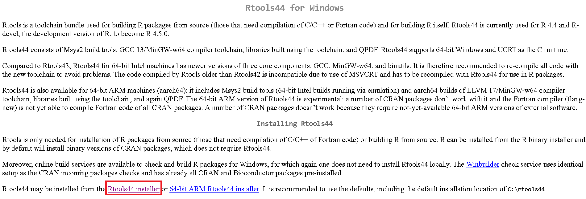

Content from Introducción a R y Rstudio
Última actualización: 2025-02-04 | Mejora esta página
Tiempo estimado: 88 minutos
Hoja de ruta
Preguntas
- ¿Cómo se utilizan R y RStudio en el análisis de datos y la salud pública?
Objetivos
Al final de este taller usted podrá:
- Reconocer y hacer uso de R y RStudio.
- Conocer los tipos de datos y operados básicos en R.
- Comprender las estructuras básicas de datos en R tales como vectores y tablas de datos.
- Comprender el proceso de creación de funciones.
- Reconocer el proceso de importación, exportación y transformación de bases de datos con Tidyverse.
Pre requisito
Esta unidad no tiene prerequisitos
Tabla de contenido
- Módulo: Ciencia de datos en salud pública
- Unidad: Introducción a R y RStudio
- Tema 1: Introducción
- Tema 2: Instalación de R y RStudio
- Tema 3: Ambiente de RStudio
- Tema 4: Configuración de un proyecto en RStudio
- Tema 5: Tipos de datos y operadores en R
- Tema 6: Estructuras de datos en R
- Tema 7: Funciones
- Tema 8: Manipulación de datos con Tidyverse
- Unidad: Introducción a R y RStudio
Tema 1: Introducción
R es un lenguaje de programación especializado para análisis de datos, es de uso gratuito y software libre. Por otra parte, RStudio es un editor de R también disponible de manera gratuita. La diferencia entre R y RStudio radica en que en R es el lenguaje de programación en el que escribimos el código y RStudio es el ambiente de desarrollo que permite trabajar con R de manera más fácil y amigable.
En los últimos años el uso de R ha crecido en el ámbito académico y de la industria. R, además de ser un lenguaje de programación, es también un entorno para computación estadística y creación de visualizaciones. R y RStudio son herramientas esenciales para el estudio, análisis y toma de decisiones en salud pública, ya que permiten realizar análisis estadísticos detallados, modelar la propagación de enfermedades, visualizar datos de manera efectiva y automatizar tareas. Estas herramientas facilitan la manipulación y preparación de datos, fomentan la colaboración en proyectos de ciencia de datos, y la toma de decisiones basadas en evidencia. Además, son útiles en la formación y educación en análisis de datos para profesionales de la salud, áreas STEM y toma de decisiones.
Tema 2: Instalación de R y RStudio
Para instalar R y RStudio debemos ir a nuestro navegador de confianza. Allí vamos a buscar r-project, que es la página oficial de R (https://www.r-project.org/). Recordemos que este es un software de uso libre, no hay que hacer ningún pago por su descarga o uso.

Busca la opción de descarga “download R” y sigue las instrucciones.
Para instalar Rstudio debemos ir a https://posit.co/download/rstudio-desktop/ y buscar donde diga Install RSudio. Si tenemos Windows podemos dar click en el recuadro azul. Si es otro sistema operativo abajo encontraremos una lista con las diferentes opciones. Para instalar, sigue las instrucciones.

Recuerda ejecutar el archivo que se descargó siguiendo los pasos. Es recomendable que en el momento de la instalación elijamos la opción de dejar un acceso directo en el escritorio.
Para comprobar que la instalación fue satisfactoria y en general para hacer uso de R y RStudio debemos buscar en la ubicación que hayamos elegido en la instalación donde quedó Rstudio y dar doble clic o clic derecho y abrir. Lo primero que vemos al momento de abrir Rstudio es la siguiente pantalla:

Escribe 2+2 donde aparece el cursor y da enter, si te aparece el resultado 4 ¡Está todo listo para empezar!

Tema 3: Ambiente de RStudio
RStudio está compuesto por 4 secciones principales:

Editor (sección superior izquierda): en esta sección escribimos y editamos el código a través de la creación de Scripts . Esta sección es fundamental para la reproducibilidad del código. Este editor permite guardar el código para que sea usado en futuras ocasiones. El código puede ser ejecutado en esta sección posicionando el cursor de texto al final de la línea de código que se ejecutará; otra opción es seleccionando la misma y empleando el comando
Control+Enterpara Windows oCommand+Enterpara Mac.Entorno (sección superior derecha): en esta sección se pueden visualizar los objetos, datos y funciones creados o importados en el codigo que escribimos en los Scripts por ejemplo objetos como vectores, arreglos,
data.frameso tablas de datos, objetos gráficos deggplot, entre otros.Consola (sección inferior izquierda): esta sección es donde se ejecuta el código. No solo se ejecuta el código que hemos escrito en el editor, sino que también el código puede escribirse y ejecutarse aquí directamente presionando
Enter. Sin embargo, cuando el código se ejecuta directamente en la consola, no se almacenan los comandos que ejecutamos, cuando se cierra la sesión de R se pierde.Visualizador (sección inferior derecha): en esta sección se pueden visualizar los archivos en “
Files”, los gráficos en “Plots”, los paquetes que ya están instalados en “Packages”, la ayuda de R con información de los paquetes y el funcionamiento en “Help”, y páginas web en “Viewer”.
Tema 4: Configuración de un proyecto en RStudio
Una de las grandes ventajas de usar RStudio es la posibilidad de usar
los Proyectos en R (R Project)(indicado por un archivo
.Rproj) lo que permite organizar el espacio de trabajo, el
historial y los documentos fuente. Para crear un Proyecto en R, es
importante seguir los siguientes pasos:
Desafío
- Abrir RStudio y, en la esquina superior izquierda, seleccionar la pestaña File (Archivo) -> New Project… (Proyecto Nuevo).

- Se desplegará una ventana con encabezado New Project Wizard: Create Project, ahora se debe seleccionar New Directory (Directorio Nuevo).

En la ventana con encabezado New Project Wizard:Project Type, se debe seleccionar New Project

En la ventana con encabezado New Project Wizard:Create New Project. En la casilla Directory Name (Nombre del Directorio) coloque el nombre deseado para su proyecto (e.g. “
IntroR”).
Hacemos clic en el botón Browse…. Para buscar la ubicación dentro del computador donde deseamos guardar el proyecto

Creamos una nueva carpeta con el mismo nombre del proyecto (e.g. “
IntroR”), así como las subcarpetas que necesitamos para organizar nuestro trabajo y resultados: datos, scripts y figuras. Al final, el proyecto debería parecerse a esta imagen:

Tema 5: Tipos de datos y operadores en R
Tipos de datos
R tiene la capacidad de almacenar y procesar distintos tipos de datos. Entre estos se encuentran:
- Numéricos decimales
(double. Ej: 3.3) - Enteros
(integer. Ej: 3) - Caracteres
(character. Ej: Municipio, sexo o nombre.) - Booleanos o lógicos
(logic. Ej: FALSE, TRUE) - Tipo fechas
(date. Ej: 01/01/2022) - Datos
NA,NANeInf. La diferencia entreNA,NANeInfes queNAindica que hay dato faltante “missing”,NANsignifica “not a number”; es decir, hay información, pero es un error y el resultado no es numérico, por ejemplo0/0. Inf indica que hay operaciones cuyo resultado es infinito como por ejemplo1/0. Si se hace operaciones entre tipos variables se pueden obtenerInf.
Operadores matemáticos y lógicos
Los operadores son herramientas matemáticas que nos permiten realizar
diferentes tareas con los datos que tenemos disponibles; por ejemplo,
con el operador + podemos efectuar una suma o incrementar
un índice. Algunos de los operadores más utilizados en R son los
siguientes:
1. Operadores aritméticos (Ej: +, -,
*, que corresponden a suma, resta y multiplicación
respectivamente)
2. Operadores de comparación
(Ej: <, >, ==, >=, <=, !=) 3. Operadores
booleanos (& (and), | (or), ! (not))
Operadores de asignación <- y =
<- Este es un operador común en R para asignar un determinado valor a una variable y el alcance está dentro de la función y también fuera de ella.
Ejemplo
R
nombre <- "Laura"
Se abra creado un objeto en el ambiente global (ubiquelo en la
sección lateral derecha superior): 
= Este operador se utiliza para establecer un parámetro en un valor dentro de una función. El alcance está solo dentro de la función. La variable todavía contiene su valor original fuera de la función.
Tema 6: Funciones
Imaginemos una función como una especie de “caja mágica” que recibe ciertos datos o información como entrada y produce un resultado o respuesta específica como salida. Es como seguir una receta que toma ingredientes y como resultado tenemos un plato delicioso.
Para qué podamos utilizar una función debemos proporcionar unos datos de entrada (input) que entran a la caja (la función) y de ahí sale un resultado o datos de salida (output). La función puede ser suma, resta, regresión logística o un modelo matemático. Entran datos y salen otros que son producto de las operaciones en la función.
Componentes básicos de una función
Los componentes básicos de una función son:
name(nombre): es el nombre que se da a la función (Por ejemplo: myfun).formals(argumentos): son la serie de elementos que controlan cómo llamar a la función.body(cuerpo): es la serie de operaciones o modificaciones a los argumentos.output(salida o resultado): son los resultados después de modificar los argumentos. Si esta salida corresponde a una serie de datos, podemos extraerla usando el comandoreturn.
Ejemplo: con una base de datos queremos generar una variable que es producto de una operación, por ejemplo, IMC (índice masa corporal).
La función del IMC es conocida (\[peso/(talla^2 )\]) , y sus argumentos son peso y talla.
Recordemos que en esta fórmula el peso debe estar en kg y la talla en metros.
Para este ejemplo el input, o datos de entrada son el peso y la variable talla, y el output sería el índice de masa corporal. Si tenemos que el peso es 50kg y la talla 1.5m, el IMC será igual a 22.2.

(Ilustración adaptada por Maria Paula Forero)
En R podemos producir la función IMC mediante el siguiente código:
R
IMC <- function(peso_kg, talla_m) { # Aquí van los argumentos o input
resultado <- peso_kg/ talla_m^2 # Esta es el cuerpo u operación
return(resultado) # Este es el output o resultado
}
Ahora, utilicemos la función para calcular el IMC de una persona de talla 1.75 cm y peso 80 kg, mediante el siguiente código
R
IMC(peso_kg = 80, talla_m = 1.75)
SALIDA
[1] 26.12245Como se puede ver, para usar la función una vez establecida solo se requiere el nombre y los argumentos.
Desafío
Reto: Usando la misma función calcula tu IMC.
En general, una función consiste en una secuencia de instrucciones con el fin de llevar a cabo una tarea. De esta forma, por medio del uso de funciones es posible sistematizar procesos complejos que se realizan de manera rutinaria.
Paquetes o librerías
En R, los paquetes, también llamados “librerías” se refieren a conjuntos de funciones organizadas de manera lógica que pueden ser utilizadas para llevar a cabo diversas tareas, como análisis, limpieza y visualización de datos, ente otros.
Las librerías más usadas en R son:
-
ggplot2: sirve para la creación de gráficos y visualizaciones de datos de alta calidad. -
dplyr: permite la manipulación y transformación eficiente de datos. -
tidyr: utilizada para organizar y reorganizar datos en un formato tabular ordenado. -
readr: sirve para leer y escribir datos en formatos comoCSV,TSVy otros. -
plyr: funciona para dividir, aplicar y combinar datos de manera eficiente.
A su vez, hay meta-librerías, es decir, aquellas que combinan varias
librerías. Un ejemplo de estas es la librería
tidyverse.
Tema 7: Estructuras en R
Vector
En R, un vector es una estructura de datos indexada que permite almacenar varios elementos del mismo tipo en una única estructura. Por ejemplo, podríamos tener un vector que contenga las edades de varias personas, o un vector que contenga los nombres de diferentes ciudades.
Los vectores en R son útiles porque permiten realizar operaciones y cálculos con facilidad. Los elementos del vector se pueden sumar, restar, multiplicar o dividir, y sus elementos son accesibles por medio posición o índice.
En resumen, un vector en R es una colección ordenada de elementos del mismo tipo de datos (ver Tema 5) que permite almacenar y manipular datos de manera eficiente.
Para crear un vector en el código o script se escribe el nombre con
el que se va a reconocer (por ejemplo, edad o ciudad) y luego se debe
escribir el símbolo <- (que da la orden a R para crear
el vector). Luego se escribe letra c que es la asignación que permite
inicializar el vector. Cada componente debe ir separado por comas, si
son caracteres debe ir entre comillas (si son números no), si es dato
booleano (falso o verdadero) tampoco va en comillas.
Desafío
Así, los vectores se pueden crear ejecutando el comando
c(), como se puede visualizar a continuación:
Ejemplos
R
nombre <- c("Emilia", "Maximo", "Axel", "Diana") # Nombre de las personas
ciudad <- c("La Plata","Concepción", "Cuzco", "Bogota") # Ciudad de residencia
edad <- c(18, 20, 37, 42) # Edad de las personas
vacunado <- c(TRUE, FALSE, FALSE, TRUE) # Estado de vacunación
dosis <- c(2L, 0L, 1L, 2L) # Número de dosis recibidas`
Aviso
Nota: El uso del símbolo # permite comentar el
código, es decir poner notas que expliquen una o más líneas del
código.
Data.frame (Tabla de datos)
Imaginemos un data.frame como una tabla con filas y
columnas, similar a una hoja de cálculo en Excel. Cada columna
representa un tipo de información específica (un vector) o variable (Por
ejemplo, la edad, el departamento o el nombre). En este ejemplo, cada
fila corresponde al registro de esas variables para un individuo. Es
importante tener en cuenta que los data.frame (Tabla de
datos) están compuestos por vectores cuyas dimensiones deben ser
iguales, es decir que todas las columnas deben tener el mismo número de
filas. Siguiendo la analogía de Excel, podemos pensar que cada vector es
una columna de una hoja de Excel.
Una ventaja de trabajar con Data.frame en R en vez de
una hoja de excel es que a medida que el tamaño de la tabla va
aumentando, en R se puede trabajar más rápido y eficientemente.
Para crear una tabla de datos se debe ejecutar el comando
data.frame(). Por ejemplo, utilizando los vectores que
definimos en la sección anterior:
R
datos_vacunas <- data.frame(
nombre = nombre,
ciudad = ciudad,
edad = edad,
vacunado = vacunado,
dosis = dosis)
Ahora observemos cómo quedó la tabla de datos
R
datos_vacunas
SALIDA
nombre ciudad edad vacunado dosis
1 Emilia La Plata 18 TRUE 2
2 Maximo Concepción 20 FALSE 0
3 Axel Cuzco 37 FALSE 1
4 Diana Bogota 42 TRUE 2Parte de un data.frame
Algunas funciones que permiten conocer características como nombres o
tamaños de las filas o columnas del data.frame son:
colnames(): nombres de las columnasrownames(): nombres de las filasnrow(): número de filasncol(): número de columnaslength(): longitud de la tabla de datos
Ahora, para acceder a la descripción de la estructura general de una
tabla de datos (y en general cualquier objeto de R) usamos el comando
str, en este caso escribimos:
R
str(datos_vacunas)
SALIDA
'data.frame': 4 obs. of 5 variables:
$ nombre : chr "Emilia" "Maximo" "Axel" "Diana"
$ ciudad : chr "La Plata" "Concepción" "Cuzco" "Bogota"
$ edad : num 18 20 37 42
$ vacunado: logi TRUE FALSE FALSE TRUE
$ dosis : int 2 0 1 2Esto nos indica que la estructura (datos_vacunas)
corresponde a un data.frame con 4 observaciones y 5
variables.
Si usamos el comando str(datos_vacunas$nombre) podemos
ver la estructura de esa variable, que en este caro es un vector de
caracteres con longitud de 1 a 4.
R
str(datos_vacunas$nombre)
SALIDA
chr [1:4] "Emilia" "Maximo" "Axel" "Diana"Para acceder a los diferentes componentes de la tabla de datos usamos
la sintaxis [,], donde la primera dimensión corresponde a
filas y la segunda dimensión a columnas.
Discusión
Por ejemplo, si queremos saber cuántas dosis de vacunas se aplicó Maximo ¿qué debemos hacer?
Veamos a qué fila y columna corresponde este dato:
R
datos_vacunas

Vemos que Maximo está en la fila 2 y las dosis en la columna 5. Por lo tanto, la intersección de estas dos variables nos dará el número de dosis que tiene Maximo.
R
datos_vacunas[2, 5]
SALIDA
[1] 0Crear y abrir tablas de datos
R nos permite no solo crear tablas de datos sino también abrir
archivos que las contengan. De hecho, la mayoría de las veces no se
crean directamente los data.frame en R sino que se importa
un data.frame de alguna fuente de datos, por ejemplo, la
base de datos del sistema de vigilancia de algún evento de interés.
Fuentes de conjunto de datos
Para esto, en R hay tres fuentes de conjuntos de datos que podemos utilizar:
- Tabla de datos importada (desde los formatos
.xlsx,.csv,.stata, o.RDS, entre otros) - Tabla de datos que forma parte de un paquete en R (Ej.
MASS,islands, etc) - Tabla de datos creada durante la sesión en R (Ej. las estructuras de los primeros ejercicios)
Importar una tabla de datos
Para importar una tabla de datos de diferentes fuentes necesitamos emplear diferentes tipos de funciones.
Aquí algunos ejemplos del tipo de datos, y la librería que es necesario cargar y la función a utilizar.
| Tipo de datos | Función | Paquete |
| csv | read_csv |
readr |
| xls | read_excel, read_xls,read_xlsx |
readxl |
| RDS | readRDS |
base |
| dta | read_dta |
haven |
| sas | read_sas |
haven |
Aviso
Recordatorio: Si se desea almacenar los datos en un objeto se debe usar el operador de asignación.
Ejemplo:
R
library("paquete que contiene la función")
datos <- funcion_read("direccion_de_los_datos.formato")

Tema 8: Manipulación de datos con tidyverse
tidyverse es una meta-librería que combina varias
librerías. tidyverse viene de la palabra “tidy” que en
inglés hacer referencia a ordenar, limpiar y arreglar, en este caso
hacer estas acciones, pero para los datos. Por tanto,
tidyverse es una manera de referirse al universo de estas
acciones en R.
tidyverse al ser una meta-librería va a cargar
automáticamente varias librerías como (dplyr,
tidyr, tibble, readr,
purr, entre otros) que son útiles para la manipulación de
datos.
Para instalar una librería usamos el comando
install.packages. Esto sólo lo debemos hacer una vez en
nuestro computador. Veamos cómo podemos utilizarlo para instalar
tidyverse:
R
install.packages('tidyverse')
Para llamar o importar una librería ya instalada usamos el comando
library. Este en comando debemos ejecutarlo cada vez que
re-iniciamos R o abrimos RStudio.
R
library(tidyverse)
SALIDA
── Attaching core tidyverse packages ──────────────────────── tidyverse 2.0.0 ──
✔ dplyr 1.1.4 ✔ readr 2.1.5
✔ forcats 1.0.0 ✔ stringr 1.5.1
✔ ggplot2 3.5.1 ✔ tibble 3.2.1
✔ lubridate 1.9.3 ✔ tidyr 1.3.1
✔ purrr 1.0.2
── Conflicts ────────────────────────────────────────── tidyverse_conflicts() ──
✖ dplyr::filter() masks stats::filter()
✖ dplyr::lag() masks stats::lag()
ℹ Use the conflicted package (<http://conflicted.r-lib.org/>) to force all conflicts to become errors
Abrir y explorar una tabla de datos importados de Excel
Aviso
Este es el conjunto de datos para esta práctica: datos_covid.xlsx
Dentro del directorio en el que estamos trabajando actualmente,
debemos crear una carpeta llamada data.
Ahora debemos guardar la tabla de datos descargado en la carpeta data
que acabamos de crear.
Para importar tablas de datos desde RDS, se puede usar
la función read_excel, que está en el paquete
readxl vinculado a tidyverse. Sin embargo,
todavía es necesario cargar la biblioteca readxl, ya que no
es un paquete tidyverse principal. Para esto, escribimos en
la consola:
R
library(readxl)
dat <- read_excel("data/datos_covid.xlsx")
Ahora se ha creado un objeto tipo data.frame. 
A continuación, veremos algunas de las funciones más utilizadas de
tidyverse.
Operador tubería (pipe)
El operador tubería (pipe) %>% es un
operador clave en tidyverse, el cual permite al usuario
enfatizar una secuencia de acciones en un objeto. Además, el uso de este
operador reduce la cantidad de código y mejora el desempeño.
Ejemplo 1: En el siguiente diagrama podemos ver el funcionamiento de la función pipe que permite en este caso aplicar diferentes funciones a un conjunto de datos y sus resultados.

(Ilustración adaptada por Maria Paula Forero)
Vamos a comparar el código cuando usamos vs cuando no usamos el pipe. Para esto, debemos cargar la librería dplyr y vamos a hacer una tabla de datos de ejemplo
R
library(dplyr) # Esta librería se carga automáticamente con tidyverserse
datos <- data.frame(edad = c(12, 23, 32, 60), dosis = c(1, 2, 3, 1))
El código del diagrama anterior sin el uso del operador pipe sería el siguiente :
R
datos_filtrados <- filter(datos, edad > 18)
datos_con_esquema <- mutate(datos_filtrados,
esquema = ifelse(dosis > 2, "Completo", "Incompleto"))
datos_agrupados <- group_by(datos_con_esquema, esquema)
datos_por_esquema <- summarise(datos_agrupados, personas = n())
Ahora, con la ayuda de una tubería o pipe, tenemos:
R
datos_por_esquema <-
filter(datos, edad > 18) %>%
mutate( esquema = ifelse(dosis > 2, "Completo", "Incompleto")) %>%
group_by(esquema) %>%
summarise(personas = n())
Funciones básicas de
tidyverse
glimpse(): utilizado para explorar rápidamente una tabla de datos.group_by(): crea grupos dentro de una tabla de datos.summarise(): devuelve una fila para cada combinación de variables que han sido agrupadasselect(): selecciona columnas de una tabla de datos.filter(): filtra filas de una tabla de datos según una condición de valores.arrange(): ordena filas de una tabla de datos por el valor de una variable particular si es numérico, o por orden alfabético si es un carácter.mutate(): genera una nueva variablerename(): cambia el nombre de la variable
Veamos en más detalle las funciones más comunes del paquete
dyplr dentro de tidyverse.
-
glimpse(parpadeo)Esta función se utiliza para dar un vistazo rápido o parpadeo a nuestros datos y explorar información como: número de filas (que en este caso sería el número de observaciones o datos de nuestra población), número de columnas y sus nombres (que en este caso serían el número de variables y sus nombres). Entre “< >” encontraremos el tipo de dato (
dblpara double,chrpara character, entre otros) y un breve listado de algunos de los primeros valores de los datos. Por ejemplo, la funciónglimpsese puede aplicar sobre el elemento dat (que se cargó arriba), así:R
dat %>% glimpse()SALIDA
Rows: 50,000 Columns: 19 $ fecha_reporte_web <dttm> 2021-07-14, 2021-04-24, 2021-05… $ id_de_caso <dbl> 4565159, 2747373, 2963299, 15526… $ fecha_de_notificacion <dttm> 2021-07-07, 2021-04-21, 2021-05… $ edad <dbl> 23, 15, 11, 39, 25, 8, 53, 29, 4… $ sexo <chr> "masculino", "femenino", "mascul… $ tipo_de_contagio <chr> "Comunitaria", "Relacionado", "R… $ ubicacion_del_caso <chr> "Casa", "Casa", "Casa", "Casa", … $ estado <chr> "Leve", "Leve", "Leve", "Leve", … $ recuperado <chr> "Recuperado", "Recuperado", "Rec… $ fecha_de_inicio_de_sintomas <dttm> 2021-06-22, 2021-04-16, 2021-04… $ fecha_de_muerte <dttm> NA, NA, NA, NA, NA, NA, NA, NA,… $ fecha_de_diagnostico <dttm> 2021-07-07, 2021-04-23, 2021-05… $ fecha_de_recuperacion <dttm> 2021-07-15, 2021-05-05, 2021-05… $ fecha_de_nacimiento <dttm> 1975-06-23, 1975-07-01, 1975-07… $ nombre_del_pais <chr> "Argentina", "Paraguay", "Ecuado… $ sintomas <chr> "Leve", "Leve", "Leve", "Leve", … $ numero_de_hospitalizaciones_recientes <dbl> 0, 0, 0, 0, 0, 0, 1, 0, 0, 0, 0,… $ tension_sistolica <dbl> 105, 122, 121, 101, 101, 134, 10… $ tension_diastolica <dbl> 83, 72, 85, 69, 101, 80, 85, 67,… -
summarise(resumir)La función
summarisenos permite aplicar ciertas operaciones de interés sobre una tabla de datos. Por ejemplo, para calcular la media de la edad, utilizamos la funciónmean()y para el conteo total de casos la funciónn():R
dat %>% summarise(media = mean(edad), casos= n())SALIDA
# A tibble: 1 × 2 media casos <dbl> <int> 1 40.1 50000 group_by(agrupar)
La función group_by no tiene un uso evidente si es
empleada sola, dado que ocurre un proceso interno de agrupación de los
datos. Pero, al ser usada con otras funciones como por ejemplo
summarise es posible ver su efecto. Por ejemplo, el
siguiente comando agrupa los datos por sexo y calcula, para cada grupo
el conteo de casos y su correspondiente media de la edad:
R
dat %>% group_by(sexo) %>%
summarise(casos = n(), media_edad = mean(edad))
SALIDA
# A tibble: 2 × 3
sexo casos media_edad
<chr> <int> <dbl>
1 femenino 26799 40.3
2 masculino 23201 39.9-
select(seleccionar)La función
selectes útil en caso de querer seleccionar una o varias columnas de undata.frameo tabla de datos. Por ejemplo, se pueden seleccionar las variables edad y sexo de dat mediante el siguiente comando:R
dat %>% select(edad, sexo) #empleando el nombre de la columnaSALIDA
# A tibble: 50,000 × 2 edad sexo <dbl> <chr> 1 23 masculino 2 15 femenino 3 11 masculino 4 39 femenino 5 25 masculino 6 8 femenino 7 53 masculino 8 29 masculino 9 41 femenino 10 61 masculino # ℹ 49,990 more rows filter(filtrar)
Esta función se puede usar para filtrar una tabla de datos a partir de una condición lógica del valor de sus filas. Por ejemplo, para filtrar los registros menores de 28 años, usamos:
R
dat %>% filter(edad < 28)
SALIDA
# A tibble: 13,235 × 19
fecha_reporte_web id_de_caso fecha_de_notificacion edad sexo
<dttm> <dbl> <dttm> <dbl> <chr>
1 2021-07-14 00:00:00 4565159 2021-07-07 00:00:00 23 masculino
2 2021-04-24 00:00:00 2747373 2021-04-21 00:00:00 15 femenino
3 2021-05-07 00:00:00 2963299 2021-05-04 00:00:00 11 masculino
4 2020-10-26 00:00:00 1018415 2020-10-23 00:00:00 25 masculino
5 2020-08-09 00:00:00 380193 2020-07-25 00:00:00 8 femenino
6 2020-09-25 00:00:00 798355 2020-09-25 00:00:00 13 femenino
7 2022-07-07 00:00:00 6184438 2022-07-03 00:00:00 23 masculino
8 2020-11-26 00:00:00 1276271 2020-11-11 00:00:00 26 femenino
9 2020-12-27 00:00:00 1592983 2020-12-13 00:00:00 25 femenino
10 2022-01-26 00:00:00 5798751 2022-01-22 00:00:00 18 femenino
# ℹ 13,225 more rows
# ℹ 14 more variables: tipo_de_contagio <chr>, ubicacion_del_caso <chr>,
# estado <chr>, recuperado <chr>, fecha_de_inicio_de_sintomas <dttm>,
# fecha_de_muerte <dttm>, fecha_de_diagnostico <dttm>,
# fecha_de_recuperacion <dttm>, fecha_de_nacimiento <dttm>,
# nombre_del_pais <chr>, sintomas <chr>,
# numero_de_hospitalizaciones_recientes <dbl>, tension_sistolica <dbl>, …Como se puede observar, el resultado contiene todas las variables de la tabla, pero los datos se limitan a aquellos que en edad sean menores de 28 años. Ahora, filtremos por los registros que tengan una edad menor a 28 años y con sexo femenino. En este caso, al pedir que se incluyan adicionalmente los registros de 28 años también ya no se emplea únicamente el signo “<” sino que se lo acompaña del símbolo “=”:
Veamos un ejemplo con doble fitro:
R
dat %>% filter(sexo == "F", edad <= 28) #Ahora sabe como filtrar el sexo
SALIDA
# A tibble: 0 × 19
# ℹ 19 variables: fecha_reporte_web <dttm>, id_de_caso <dbl>,
# fecha_de_notificacion <dttm>, edad <dbl>, sexo <chr>,
# tipo_de_contagio <chr>, ubicacion_del_caso <chr>, estado <chr>,
# recuperado <chr>, fecha_de_inicio_de_sintomas <dttm>,
# fecha_de_muerte <dttm>, fecha_de_diagnostico <dttm>,
# fecha_de_recuperacion <dttm>, fecha_de_nacimiento <dttm>,
# nombre_del_pais <chr>, sintomas <chr>, …arrange(organizar)
Para los casos donde se necesita organizar los datos por una o más
variables, se puede emplear la función arrange. Por
ejemplo, para organizar los datos por edad, o por edad y sexo:
R
dat %>% arrange(edad)
SALIDA
# A tibble: 50,000 × 19
fecha_reporte_web id_de_caso fecha_de_notificacion edad sexo
<dttm> <dbl> <dttm> <dbl> <chr>
1 2021-06-19 00:00:00 3896591 2021-06-17 00:00:00 1 femenino
2 2021-04-11 00:00:00 2525260 2021-04-07 00:00:00 1 femenino
3 2022-07-28 00:00:00 6264159 2022-07-25 00:00:00 1 masculino
4 2022-01-03 00:00:00 5184827 2021-12-26 00:00:00 1 masculino
5 2022-02-19 00:00:00 6039958 2022-02-16 00:00:00 1 femenino
6 2021-10-07 00:00:00 4967494 2021-09-24 00:00:00 1 masculino
7 2022-01-13 00:00:00 5410872 2021-12-30 00:00:00 1 masculino
8 2021-06-23 00:00:00 4006796 2021-06-18 00:00:00 1 masculino
9 2020-09-02 00:00:00 628110 2020-08-21 00:00:00 1 masculino
10 2021-07-09 00:00:00 4453365 2021-06-29 00:00:00 1 femenino
# ℹ 49,990 more rows
# ℹ 14 more variables: tipo_de_contagio <chr>, ubicacion_del_caso <chr>,
# estado <chr>, recuperado <chr>, fecha_de_inicio_de_sintomas <dttm>,
# fecha_de_muerte <dttm>, fecha_de_diagnostico <dttm>,
# fecha_de_recuperacion <dttm>, fecha_de_nacimiento <dttm>,
# nombre_del_pais <chr>, sintomas <chr>,
# numero_de_hospitalizaciones_recientes <dbl>, tension_sistolica <dbl>, …R
dat %>% arrange(edad,sexo)
SALIDA
# A tibble: 50,000 × 19
fecha_reporte_web id_de_caso fecha_de_notificacion edad sexo
<dttm> <dbl> <dttm> <dbl> <chr>
1 2021-06-19 00:00:00 3896591 2021-06-17 00:00:00 1 femenino
2 2021-04-11 00:00:00 2525260 2021-04-07 00:00:00 1 femenino
3 2022-02-19 00:00:00 6039958 2022-02-16 00:00:00 1 femenino
4 2021-07-09 00:00:00 4453365 2021-06-29 00:00:00 1 femenino
5 2020-12-28 00:00:00 1596742 2020-12-24 00:00:00 1 femenino
6 2021-08-29 00:00:00 4905206 2021-08-12 00:00:00 1 femenino
7 2022-07-28 00:00:00 6263673 2022-07-24 00:00:00 1 femenino
8 2020-10-14 00:00:00 929871 2020-10-02 00:00:00 1 femenino
9 2021-03-28 00:00:00 2381786 2021-03-25 00:00:00 1 femenino
10 2021-01-06 00:00:00 1708679 2021-01-04 00:00:00 1 femenino
# ℹ 49,990 more rows
# ℹ 14 more variables: tipo_de_contagio <chr>, ubicacion_del_caso <chr>,
# estado <chr>, recuperado <chr>, fecha_de_inicio_de_sintomas <dttm>,
# fecha_de_muerte <dttm>, fecha_de_diagnostico <dttm>,
# fecha_de_recuperacion <dttm>, fecha_de_nacimiento <dttm>,
# nombre_del_pais <chr>, sintomas <chr>,
# numero_de_hospitalizaciones_recientes <dbl>, tension_sistolica <dbl>, …Por configuración predeterminada la función organiza los valores de
menor a mayor; en caso de querer organizarlos de mayor a menor se puede
emplear desc al interior de la función
arrange.
R
dat %>% arrange(desc(edad))
SALIDA
# A tibble: 50,000 × 19
fecha_reporte_web id_de_caso fecha_de_notificacion edad sexo
<dttm> <dbl> <dttm> <dbl> <chr>
1 2021-06-27 00:00:00 4128658 2021-06-25 00:00:00 101 femenino
2 2022-02-03 00:00:00 5928342 2022-01-28 00:00:00 101 femenino
3 2021-04-17 00:00:00 2625780 2021-04-16 00:00:00 101 femenino
4 2021-07-14 00:00:00 4557691 2021-07-09 00:00:00 101 femenino
5 2022-06-30 00:00:00 6153260 2022-06-22 00:00:00 100 femenino
6 2020-10-16 00:00:00 942890 2020-10-13 00:00:00 100 femenino
7 2022-02-10 00:00:00 6000702 2022-01-16 00:00:00 100 masculino
8 2021-07-19 00:00:00 4650913 2021-07-05 00:00:00 99 femenino
9 2021-06-11 00:00:00 3680598 2021-06-07 00:00:00 99 femenino
10 2021-02-24 00:00:00 2236252 2021-02-23 00:00:00 99 masculino
# ℹ 49,990 more rows
# ℹ 14 more variables: tipo_de_contagio <chr>, ubicacion_del_caso <chr>,
# estado <chr>, recuperado <chr>, fecha_de_inicio_de_sintomas <dttm>,
# fecha_de_muerte <dttm>, fecha_de_diagnostico <dttm>,
# fecha_de_recuperacion <dttm>, fecha_de_nacimiento <dttm>,
# nombre_del_pais <chr>, sintomas <chr>,
# numero_de_hospitalizaciones_recientes <dbl>, tension_sistolica <dbl>, …-
mutate(mudar)Para crear una nueva columna con datos en un
data.framede una ya existente resulta de utilidad la funciónmutate. Esta función requiere el nombre de la columna a crear y de la columna de la que queremos copiar los datos. La columna nueva por configuración predeterminada se ubicará al final de las variables en la tabla de datos. En este ejemplo, vamos a crear una variable llamada pais en la cual usamos la variablenombre_paispero en forma de mayúsculas contoupperR
dat %>% mutate(SEXO= toupper(sexo)) %>% select(SEXO)SALIDA
# A tibble: 50,000 × 1 SEXO <chr> 1 MASCULINO 2 FEMENINO 3 MASCULINO 4 FEMENINO 5 MASCULINO 6 FEMENINO 7 MASCULINO 8 MASCULINO 9 FEMENINO 10 MASCULINO # ℹ 49,990 more rows rename(renombrar)
En caso de que no queramos crear una nueva variable sino renombrar
una ya existente, conviene usar la función rename. Por
ejemplo, para cambiar el nombre nombre_del_pais por el
nombre pais usamos:
R
dat %>% rename(edad_años = edad)
SALIDA
# A tibble: 50,000 × 19
fecha_reporte_web id_de_caso fecha_de_notificacion edad_años sexo
<dttm> <dbl> <dttm> <dbl> <chr>
1 2021-07-14 00:00:00 4565159 2021-07-07 00:00:00 23 masculino
2 2021-04-24 00:00:00 2747373 2021-04-21 00:00:00 15 femenino
3 2021-05-07 00:00:00 2963299 2021-05-04 00:00:00 11 masculino
4 2020-12-24 00:00:00 1552683 2020-12-21 00:00:00 39 femenino
5 2020-10-26 00:00:00 1018415 2020-10-23 00:00:00 25 masculino
6 2020-08-09 00:00:00 380193 2020-07-25 00:00:00 8 femenino
7 2021-06-04 00:00:00 3503818 2021-06-02 00:00:00 53 masculino
8 2021-05-26 00:00:00 3270945 2021-05-14 00:00:00 29 masculino
9 2021-02-16 00:00:00 2201217 2021-02-13 00:00:00 41 femenino
10 2020-10-30 00:00:00 1056515 2020-10-26 00:00:00 61 masculino
# ℹ 49,990 more rows
# ℹ 14 more variables: tipo_de_contagio <chr>, ubicacion_del_caso <chr>,
# estado <chr>, recuperado <chr>, fecha_de_inicio_de_sintomas <dttm>,
# fecha_de_muerte <dttm>, fecha_de_diagnostico <dttm>,
# fecha_de_recuperacion <dttm>, fecha_de_nacimiento <dttm>,
# nombre_del_pais <chr>, sintomas <chr>,
# numero_de_hospitalizaciones_recientes <dbl>, tension_sistolica <dbl>, …slice
Ya se vio previamente cómo seleccionar columnas por medio de la
función select. En caso de requerir seleccionar filas
específicas de un data.frame, la función slice resulta de
gran utilidad. Por ejemplo, para seleccionar de la fila 10 a la 15:
R
dat %>% slice(10:15)
SALIDA
# A tibble: 6 × 19
fecha_reporte_web id_de_caso fecha_de_notificacion edad sexo
<dttm> <dbl> <dttm> <dbl> <chr>
1 2020-10-30 00:00:00 1056515 2020-10-26 00:00:00 61 masculino
2 2020-09-25 00:00:00 798355 2020-09-25 00:00:00 13 femenino
3 2021-01-04 00:00:00 1680221 2020-12-29 00:00:00 57 masculino
4 2022-07-07 00:00:00 6184438 2022-07-03 00:00:00 23 masculino
5 2022-01-16 00:00:00 5535687 2022-01-15 00:00:00 29 masculino
6 2021-05-27 00:00:00 3294426 2021-05-15 00:00:00 52 masculino
# ℹ 14 more variables: tipo_de_contagio <chr>, ubicacion_del_caso <chr>,
# estado <chr>, recuperado <chr>, fecha_de_inicio_de_sintomas <dttm>,
# fecha_de_muerte <dttm>, fecha_de_diagnostico <dttm>,
# fecha_de_recuperacion <dttm>, fecha_de_nacimiento <dttm>,
# nombre_del_pais <chr>, sintomas <chr>,
# numero_de_hospitalizaciones_recientes <dbl>, tension_sistolica <dbl>,
# tension_diastolica <dbl>Si se desea modificar un objeto ya creado con estas funciones, también se debe usar el operador de asignación. Ejemplo:
R
objeto <- objeto %>% mutate(nueva_columna = contenido_nuevo)
Si se realiza sin asignación el cambio solo se verá reflejado en la consola. Recuerde tener seguridad de querer guardar el cambio (esta acción podría ser irreversible). Si quiere conocer más sobre errores frecuentes y como prevenirlos visite nuestro banco de errores.
Actividad de afianzamiento:
Para esta actividad, debemos cargar un tipo diferente de datos. En el
siguiente link podrás descargarlos datos_reto.
Los datos pueden ser cargados desde el computador o desde una ubicación
en internet. Para cargar los datos datos_limpios_covid.RDS
directamente desde internet se deben usar los comandos:
R
url <- "https://github.com/TRACE-LAC/TRACE-LAC-data/raw/refs/heads/main/otros/datos_limpios_covid.RDS"
covid19 <- readr::read_rds(url)
Después de cargar los datos debe realizar lo siguiente:
- Explorar los datos
- Agrupar los datos por
nombre_del_paisy cuenta los casos por cada uno. - Filtra los datos para Perú (Tip: observa cómo está escrito el nombre
del país en la variable “
nombre_del_pais”). - Agrupa los datos por
sexoy cuenta los casos por cada uno. - Agrupa los datos por
nombre_del_paisy calcula la media de edad de cada uno. - Cambia el nombre de “
estado” por “gravedad”. - Ordena los datos por
sexoy selecciona las 5 primeras filas de cada uno. - Realiza una tabla que muestre cuántas personas de cada
sintomaaparecen en la base ubicados en Colombia. - Selecciona las 5 primeras filas de solo el número de identificación
del caso (
id_de_caso).
Puntos Clave
Revise si al final de esta lección adquirió estas competencias:
- Reconocer y hacer uso de R y RStudio.
- Conocer los tipos de datos y operados básicos en R.
- Comprender las estructuras básicas de datos en R tales como vectores y tablas de datos.
- Comprender el proceso de creación de funciones.
- Reconocer el proceso de importación, exportación y transformación de bases de datos con Tidyverse.
Contribuciones
- Zulma M. Cucunuba: Versión inicial
- Zhian N. Kamvar: Ediciones menores
- Kelly A. Charniga: Ediciones menores
- José M. Velasco-España: Traducción de Inglés a Español y edición
- Andree Valle-Campos: Ediciones menores
- Miguel E. Gámez López: Ediciones menores
- Nicolás T. Domínguez: Ediciones menores
- Laura Gómez-Bermeo: Ediciones menores
- Geraldine Gomez: Ediciones menores
- Jaime A. Pavlich-Mariscal: Edición
Content from Introduccion a la visualizacion de datos en R con ggplot2.
Última actualización: 2025-02-04 | Mejora esta página
Tiempo estimado: 84 minutos
Hoja de ruta
Preguntas
- ¿Cómo visualizar datos epidemiologicos con ggplot2?
Objetivos
Al final de este taller usted podrá:
- Reconocer las funciones que componen el paquete ggplot2.
- Realizar gráficos básicos con la estructura de ggplot2
Pre requisito
Esta unidad tiene como prerequisitos:
- Introducción a R y RStudio
Tabla de contenido
- Módulo: Ciencia de datos en salud pública
- Unidad: Introducción a la visualización de datos en R con ggplot2
- Tema 1: Principios de la gramática de gráficos con
ggplot2 - Tema 2: Gramática de gráficos
- Datos (Data)
- Estética (Aesthetics)
- Geometría (Geometry)
- Escala (Scale)
- Facetas (Facets)
- Temas (Themes)
- Tema 1: Principios de la gramática de gráficos con
- Unidad: Introducción a la visualización de datos en R con ggplot2
Desarrollo del contenido (desarrolle cada uno de los temas teniendo en cuenta la tabla de contenido)
Introducción
En el ámbito de la ciencia de datos y la toma de decisiones, la habilidad para transformar datos en información comprensible y que genere impacto es esencial. Esta unidad brindará una introducción a las herramientas necesarias para convertir conjuntos de datos en gráficos. En esta unidad haremos uso de ggplot2, una poderosa librería de gráficos de R basada en la gramática de gráficos, para crear visualizaciones impactantes.
Tema 1: Principios de la gramática de gráficos con
ggplot2
ggplot2 es un paquete de R basado en la gramática de
gráficos que permite visualizar datos de una manera consistente y
estructurada.
ggplot2recibe su nombre precisamente de la abreviación
del término gramática de gráficos (gg). La gramática de gráficos se
refiere a un enfoque conceptual propuesto y desarrollado por Leland
Wilkinson para la creación de gráficos, el cual sirvió como base para el
desarrollo de ggplot2 a manos de Hadley Wickham.
La gramática de gráficos proporciona un marco conceptual para pensar sobre cómo construir y entender visualizaciones de datos de una manera coherente y estructurada. En términos simples, la gramática de gráficos descompone un gráfico en sus componentes fundamentales y define cómo se combinan estos componentes para representar datos.
Estos componentes básicos son:
1. Datos (Data): representan los datos que queremos visualizar. Puede ser una tabla de datos (data.frame) en R u otra fuente de datos.
2. Estética (Aesthetics): definen cómo se mapean los
atributos de los datos a propiedades visuales del gráfico, como posición
en el eje X (x), posición en el eje Y (y), color, forma, tamaño, etc.
Esto se especifica mediante la función aes() en
ggplot2.
3. Geometría (Geometry): representa la forma en que
los datos se visualizan en el gráfico, como puntos, líneas, barras,
áreas, etc. Cada tipo de gráfico tiene su función correspondiente
enggplot2, como geom_point() para un gráfico de dispersión
o geom_bar() para un gráfico de barras.
4. Escala (Scale): define cómo se mapean los valores
de los datos a los valores visuales, como el rango de colores o el rango
de los ejes. ggplot2ajusta automáticamente las escalas,
pero también podemos ggplot2ajusta automáticamente las
escalas, pero también podemos personalizarlas con funciones como
scale_log10(), scale_x_continuous() o
scale_color_manual().
5. Facetas (Facets): permiten dividir los datos en
subconjuntos y mostrarlos en paneles múltiples (facetas) según ciertas
variables. Podemos usar facet_wrap() o facet_grid() en
ggplot2para implementar Podemos usar facet_wrap() o
facet_grid() en ggplot2para implementar esta
funcionalidad.
6. Temas (Themes): controlan la apariencia visual
general del gráfico, como títulos, etiquetas de ejes, fondos, etc.
Podemos gráfico, como títulos, etiquetas de ejes, fondos, etc. Podemos
personalizar el tema con la función theme() en
ggplot2.
Por ejemplo, una estructura clásica de un gráfico de puntos será:
ggplot(data, \# Los datos
aes(x, y) \# La estética
)+
geom_point() \# la geometríaTema 2: Ejemplos del uso de la gramática de gráficos con ggplot
Aquí vamos a ir explicando cómo puedes hacer uso de esta herramienta en tu computador. A medida que avanzas trata de ir replicando los ejercicios.
NOTA.
Para hacer más versátil su uso, se recomienda conocer el
funcionamiento del paquete dplyr y el uso de tuberías (pipes
%>%), puedes repasar estos temas en la Unidad 1 de este
módulo “Introducción a R y RStudio”. Por su parte, ggplot2
está contenido dentro de la librería Tidyverse. Además, Tidiverse
incluye otras librerías como dplyr que, a su vez, incluye las pipes
(%>%). Para más detalles sobre Tidyverse consulta la
unidad de “Introducción a R y RStudio”.
Para los ejercicios prácticos de esta unidad es necesario cargar las siguientes librerías:
R
library(ggplot2)
R
library(tidyverse)
SALIDA
── Attaching core tidyverse packages ──────────────────────── tidyverse 2.0.0 ──
✔ dplyr 1.1.4 ✔ readr 2.1.5
✔ forcats 1.0.0 ✔ stringr 1.5.1
✔ lubridate 1.9.3 ✔ tibble 3.2.1
✔ purrr 1.0.2 ✔ tidyr 1.3.1
── Conflicts ────────────────────────────────────────── tidyverse_conflicts() ──
✖ dplyr::filter() masks stats::filter()
✖ dplyr::lag() masks stats::lag()
ℹ Use the conflicted package (<http://conflicted.r-lib.org/>) to force all conflicts to become errorsAhora, veremos cada uno de los componentes para realizar gráficos de
datos con ggplot2 a través de un ejercicio práctico. Se
requiere una tabla de datos (una estructura con filas y columnas) para
poder ser usada en la estética de los gráficos. Previo al uso de
ggplot2, suele ser necesario realizar un proceso de
limpieza y organización de los datos. Para este ejercicio práctico
usaremos una base de datos limpia, que nos permita hacer las
visualizaciones sin la necesidad de pre-procesar los datos.
Aviso
La tabla de datos para este ejercicio puedes encontrarla en: https://github.com/TRACE-LAC/TRACE-LAC-data/blob/main/otros/muestra_covid.RDS?raw=true
Cuando ya tengas los datos descargados en tu computador y en la carpeta de data de tu proyecto puedes ejecutar el siguiente comando:
R
covid19 <- readRDS("data/muestra_covid.RDS")
Una vez obtenida la tabla de datos vamos a explorar los datos para
conocer el estado actual y revisar qué variables podríamos usar para las
visualizaciones. Para esto utilizamos una de las funciones vistas en la
unidad de “Introducción a R y RStudio” llamada
glimpse.Úsala y verifica la estructura de la tabla de
datos
R
glimpse(covid19)
SALIDA
Rows: 100,000
Columns: 19
$ fecha_reporte_web <date> 2021-04-09, 2021-03-18, 2022-01…
$ id_de_caso <dbl> 2493495, 2318883, 5290100, 43526…
$ fecha_de_notificacion <date> 2021-03-27, 2021-03-06, 2022-01…
$ edad <dbl> 45, 38, 34, 64, 24, 16, 25, 72, …
$ sexo <fct> femenino, masculino, masculino, …
$ tipo_de_contagio <chr> "Comunitaria", "Comunitaria", "C…
$ ubicacion_del_caso <chr> "Casa", "Casa", "Casa", "Casa", …
$ estado <fct> Leve, Leve, Leve, Leve, Leve, Le…
$ recuperado <fct> Recuperado, Recuperado, Recupera…
$ fecha_de_inicio_de_sintomas <date> 2021-03-24, 2021-03-03, 2022-01…
$ fecha_de_muerte <date> NA, NA, NA, NA, NA, NA, NA, NA,…
$ fecha_de_diagnostico <date> 2021-04-07, 2021-03-17, 2022-01…
$ fecha_de_recuperacion <date> 2021-04-10, 2021-03-19, 2022-01…
$ fecha_de_nacimiento <date> 1975-06-01, 1975-06-08, 1975-06…
$ nombre_del_pais <chr> "Colombia", "Cuba", "Nicaragua",…
$ sintomas <fct> Leve, Leve, Leve, Leve, Leve, Le…
$ numero_de_hospitalizaciones_recientes <dbl> 0, 2, 1, 0, 0, 0, 0, 0, 0, 0, 1,…
$ tension_sistolica <dbl> 107, 126, 107, 134, 126, 156, 14…
$ tension_diastolica <dbl> 87, 64, 73, 76, 83, 96, 76, 87, …Estética (Aesthetics)
En el contexto de la gramática de gráficos, la estética (aesthetics) se refiere a cómo mapeamos los atributos de nuestros datos a propiedades visuales en el gráfico. Estas propiedades visuales pueden ser elementos tales como la posición en el eje X (x), la posición en el eje Y (y), el color (color), la forma(shape), el tamaño(size), etc. Al mapear estos atributos podemos crear visualizaciones que nos permiten comprender y comunicar patrones y relaciones en los datos de manera efectiva.
En ggplot2 la función principal para especificar la
estética es aes(). A continuación algunos ejemplos para
ilustrar cómo usar la estética en ggplot2.
Ejemplo 1: Gráfico de dispersión (scatter plot)
Supongamos que tenemos una tabla que cuenta con las variables x e
y. Queremos crear un gráfico de dispersión donde la variable x
se mapea en el eje X y la variable y en el eje Y. Además, queremos que
los puntos se coloreen según la variable grupo. Mediante la función
aes() de ggplot2 es posible asignar estas
variables a los correspondientes atributos visuales del gráfico, como
veremos en el ejemplo a continuación.
Consideremos la base covid19 que cargamos previamente. El requerimiento es realizar un gráfico de dispersión que muestre el número de casos por fecha de reporte y desagregados por sexo. Para esto, primero organizamos los datos para lograr una tabla resumen con la información que queremos graficar, usando las funciones vistas en la unidad de “Introducción a R y RStudio” de la siguiente manera:
R
covid19_resumen <- covid19 %>%
group_by(fecha_reporte_web, sexo) %>%
summarise(casos = n())
SALIDA
`summarise()` has grouped output by 'fecha_reporte_web'. You can override using
the `.groups` argument.Luego, podemos usar la estética de los gráficos de
ggplot2 indicando las variables a usar en cada dimensión,
en este caso en el eje X tendremos la variable de tiempo
(fecha_reporte_web) y en el eje Y el número de casos (casos). Para ver
la desagregación por sexo haremos uso de uno de los atributos como el
color. Estas instrucciones pueden seguirse a través del siguiente
código:
R
ggplot(data = covid19_resumen,
aes(x = fecha_reporte_web, y = casos, colour = sexo)) +
geom_point()
La visualización que generamos es la siguiente:
Geometría (Geometry)
La geometría representa la forma en que los datos se visualizan en el
gráfico; como puntos, líneas, barras, áreas, etc. Cada tipo de gráfico
tiene su función correspondiente en ggplot2; por ejemplo
geom_point() para un gráfico de dispersión o
geom_bar() para un gráfico de barras.
Lista de verificación
En la siguiente tabla se muestran algunos ejemplos de los distintos
tipos de geometrías más usados en ggplot2 con su
correspondiente comando:

Ejemplo 2: Gráfico de líneas
Supongamos que queremos visualizar la evolución del número de casos de covid-19 a lo largo del tiempo. Para esto, primero debemos preparar el conjunto de datos que formarán el gráfico:
R
covid19_fecha <- covid19 %>%
group_by(fecha_reporte_web) %>%
summarise(casos = n())
Una vez el conjunto de datos esté listo, procedemos a usar la
geometría de ggplot2:
R
ggplot(data = covid19_fecha,
aes(x = fecha_reporte_web, y = casos)) +
geom_line()
Y obtenemos el siguiente gráfico:

Ejemplo 3: Gráfico de barras
Ahora, hagamos una visualización en forma de gráfico de barras del
total de casos positivos por sexo, para esto utilizamos el comando
geom_bar() así:
R
ggplot(data = covid19) +
geom_bar(aes(x = sexo))

En este ejemplo podemos observar que ggplot2
automáticamente calcula el eje Y.
Ejemplo 4. Gráfico de barras más complejo
Primero vamos a preparar los datos en una tabla de datos que permita contar el número de casos por ubicación del caso:
R
covid19_ubicacion <- covid19 %>%
group_by(ubicacion_del_caso) %>%
summarise(casos = n())
Ahora, por medio de la geometría de ggplot, hacemos la
visualización usando el argumento stat = "identity" que
calcula la suma de la variable y = casos agrupando por la
variable x = ubicacion_del_caso:
R
ggplot(data = covid19_ubicacion, aes(x = ubicacion_del_caso, y = casos)) +
geom_bar(stat = "identity")
Se obtendrá la siguiente gráfica:

En este caso tenemos las barras en orientación vertical. Si
desearamos poner las barras en orientación horizontal podemos lograrlo,
usando al final el comando coord_flip de la siguiente
manera:
R
ggplot(data = covid19_ubicacion, aes(x = ubicacion_del_caso, y = casos)) +
geom_bar(stat = "identity") +
coord_flip()
Obteniendo como resultado:

Si queremos ordenar la ubicación del caso por el número de casos,
podemos utilizar el comando reorder en el eje donde está la
ubicación del caso. La función reorder tiene dos
argumentos: el primero es la variable a ordenar y el segundo es la
variable que otorga el orden. En este caso sería
reorder(ubicacion_del_caso, +casos) si queremos ordenar de
mayor a menor cantidad de casos. El código sería el siguiente:
R
ggplot(covid19_ubicacion,
aes(x = reorder(ubicacion_del_caso, +casos), y = casos)) +
geom_bar(stat = "identity") +
coord_flip()
Y la gráfica queda así:

Desafío
Pregunta ¿cómo produciría esta misma gráfica, pero en orden ascendente?
Escala
En la gramática de gráficos en ggplot2, la escala se
refiere a la forma en que los valores de los datos se traducen en
propiedades visuales. La elección adecuada de las escalas es esencial
para que los gráficos sean interpretables y precisos.
A continuación, veremos algunos de los diferentes tipos de escalas
disponibles en ggplot2 y sus funciones:
1. Para datos de tipo continuo o numéricos tenemos escalas continuas como:
scale_x_continuous()yscale_y_continuous(): para el eje x y el eje y, respectivamente.scale_color_continuous(): asigna colores a los valores continuos.scale_size_continuous(): asigna tamaño a los valores.
2. Para datos categóricos o de carácter tenemos escalas discretas como:
scale_x_discrete()yscale_y_discrete(): para el eje x y el eje y, respectivamente.scale_color_discrete(): asigna colores a los valores discretos.scale_shape_discrete(): asigna diferentes formas a los diferentes valores discretos.
3. Para datos de fecha tenemos escalas de fechas como:
-
scale_x_date()yscale_y_date(): para el eje x y el eje y, respectivamente cuando se tengan datos de fecha.
4. Para hacer uso de escalas personalizadas se hace uso de escalas manuales en las que podemos especificar nuestros propios valores.
scale_color_manual(): se especifica manualmente los colores para los valores.scale_shape_manual(): se especifica manualmente las formas para los valores.
5. Otras escalas:
scale_fill_*: se usa similar a las escalas de color pero para colores que queramos con relleno.scale_size_area(): Asigna los valores al área en lugar del diámetro, lo que puede ser útil para los puntos.scale_linetype(): para diferente tipos de líneascale_y_log10(): para hacer uso de escala logarítmica en eje y.scale_colour_gradient(): crea un degradé de color entre bajo y alto oscale_colour_gradient2()en bajo, medio y alto.
A continuación, veremos algunos ejemplos de cómo usar la escala en
ggplot2con el data.frame previamente cargada
covid19.
Ejemplo 5. Gráfico con escala logarítmica
Usaremos exactamente el mismo ejemplo anterior, pero en este caso al
final agregamos la escala logarítmica scale_y_log10()
así:
R
ggplot(covid19_ubicacion,
aes(x = reorder(ubicacion_del_caso, -casos), y = casos)) +
geom_bar(stat = "identity") +
coord_flip() +
scale_y_log10(name = "Casos Confirmados (escala log)")
De esta manera, el nuevo gráfico se vería así:

Discusión
¿Qué diferencias ve con la última gráfica del Ejemplo 4.?
Facetas
Las Facetas (Facets) en la gramática de gráficos son una
forma de dividir los datos en subconjuntos y representarlos en múltiples
paneles dentro del mismo gráfico. Esto nos permite visualizar diferentes
aspectos de los datos o comparar grupos de manera más efectiva. En
ggplot2, podemos usar la función facet_wrap()
o facet_grid() para implementar las facetas, dependiendo
del número de variables a usar para la creación de los paneles.
Ejemplo 5. Gráfico con facet wrap
Primero vamos a preparar los datos en una tabla de datos que permita
contar el número de casos por edad y sexo:
R
covid19_sexo <- covid19 %>%
group_by(edad, sexo) %>%
summarise(casos = n())
SALIDA
`summarise()` has grouped output by 'edad'. You can override using the
`.groups` argument.Usando los datos de covid-19, vamos a representar la
variable casos por edad en dos paneles por
sexo usando facet_wrap así:
R
ggplot(data = covid19_sexo, aes(x = edad, y = casos)) +
geom_point() +
facet_wrap(~sexo)

Desafío
De acuerdo con lo aprendido anteriormente, piense cómo podría hacer
que cada faceta quede de un color diferente, es decir, asignando color a
la variable sexo ¿cómo cambiaría el código?
El gráfico que debe producir es el siguiente:

R
ggplot(data = covid19_sexo, aes(x = edad, y = casos)) +
geom_point(aes(colour = sexo)) +
facet_wrap(~sexo)
Agregando una escala de color degradé tenemos:
R
ggplot(covid19_sexo, aes(edad, casos)) +
geom_point(aes(colour = casos)) +
scale_colour_gradient2() +
facet_wrap(~sexo)

Tema
En la gramática de gráficos, el tema se refiere a la personalización de la apariencia visual general del gráfico; como los títulos, etiquetas de ejes, fondos, colores, tamaños de fuente, entre otros elementos. Con los temas, podemos mejorar la legibilidad y estética de los gráficos, asegurando que la información se comunique de manera efectiva y atractiva.
En ggplot2, podemos aplicar un tema predeterminado
utilizando la función theme(). A continuación,
proporcionamos algunos ejemplos de cómo utilizar los temas en
ggplot2 con la base de datos covid19.
Usando la misma gráfica del ejemplo anterior, comparemos dos temas:
theme_classic() y theme_dark().
Discusión
¿Qué diferencias encuentra?
Ejemplo 6. Usando theme classic
Para usar el tema clásico tenemos:
R
ggplot(data = covid19_sexo, aes(x = edad, y = casos)) +
geom_point() +
facet_wrap(~sexo) +
theme_classic()

Ejemplo 7. Usando theme classic
Para este tema tendríamos lo siguiente:
R
ggplot(data = covid19_sexo, aes(x = edad, y = casos)) +
geom_point() +
facet_wrap(~sexo) +
theme_dark()

Aviso
Para revisar la lista de theme() que tiene disponible
ggplot2, puede consultarse en https://ggplot2.tidyverse.org/reference/ggtheme.html
Finalmente, veamos un ejemplo de cómo modificar los themes manualmente.
Ejemplo 8. Cambiando títulos, subtítulos y ejes
Podemos usar comandos como xlab, ylab para
cambiar los nombres de los ejes. Igualmente, comandos como title y
subtitle de la siguiente forma:
R
ggplot(data = covid19_sexo,
aes(x = edad, y = casos, colour = sexo)) +
geom_point() +
facet_wrap(~sexo) +
labs(
y = "Casos diarios", x = "Edad en años",
colour = "Sexo",
title = "Distribución de casos de COVID-19 por edad y sexo en Latinoamerica"
)

Puntos Clave
Revise si al final de esta lección adquirió estas competencias:
- Reconocer las funciones que componen el paquete ggplot2.
- Realizar gráficos básicos con la estructura de ggplot2.
Content from Reporte e informes tecnicos en R Markdown
Última actualización: 2025-02-04 | Mejora esta página
Tiempo estimado: 44 minutos
Hoja de ruta
Preguntas
- ¿Cómo se utilizan R markdown para presentar un reporte?
Objetivos
Al final de este taller usted podrá:
- Reconocer la importancia de generar informes en R Markdown
- Aprender a utilizar R markdown de forma básica
Pre requisito
Esta unidad tiene como prerequisitos:
- Introducción a R y RStudio
Tabla de contenido
- Módulo: Ciencia de datos en salud pública
- Unidad: Reporte e informes técnicos en R Markdown
- Tema 1: ¿Qué es R Markdown?
- Tema 2: Estructura de R Markdown
- Tema 3: Paso a Paso en R Markdown
- Unidad: Reporte e informes técnicos en R Markdown
Introducción
En esta unidad aprenderemos sobre el uso del formato R Markdown, el cual permite integrar código en la generación de informes sin la necesidad de importar gráficas o crear tablas manualmente. De esta manera, el formato R Markdown facilita la generación automática, actualización y redacción de informes técnicos al combinar la sintaxis del formato Markdown con código en R incrustado en el documento.
Tema 1: ¿Qué es R Markdown?
R Markdown es una extensión del formato Markdown que permite combinar texto con código R incrustado en el documento. De esta manera, los análisis y visualizaciones generados por medio del código se pueden incorporar de manera natural en el texto.
R Markdown es ampliamente utilizado por científicos de datos, analistas, investigadores y profesionales que necesitan presentar sus análisis y resultados de manera clara y reproducible. Además, es una herramienta muy valiosa para generar informes automatizados y documentos técnicos interactivos
Tema 2: Estructura de R Markdown
Un documento de R Markdown consta de tres tipos principales de elementos:
1. Yaml: Corresponde a especificaciones del estilo del documento, título, fecha, autores, etc.
2. Texto: Texto enriquecido con formato y explicaciones.
3. Chunk: Bloque de código R en donde se ejecutan y se muestran sus resultados.

Tema 3: Paso a Paso en R Markdown
A continuación, seguiremos un paso a paso para crear un R Markdown.
Paso 1. Abrir R Studio desde R Project
De acuerdo a lo aprendido en la unidad de Introducción a R y Rstudio, es recomendable tener un R project donde quedará alojado el informe de R Markdown. Abre un R Project y sigue con el Paso 2.
Paso 2. Crear un nuevo archivo R Markdown
Siguiendo la ruta File>New File>R Markdown podemos crear un archivo de R Markdown definiendo: título, autor(es) y con formato de salida preferido (html, pdf o word).
Siga los pasos, que también pueden verse en la imagen, y cree su archivo R Markdown con tu nombre y el título de Reporte.

Paso 3. Editar el archivo de R Markdown y el código
Aviso
Es importante recordar que R Markdown tiene tres secciones, todas editables: Yaml, Texto y Chunk de código.
Al haber creado su archivo de R Markdown podrá observar e identificar las diferentes secciones que se muestran en la imagen.
A continuación, veremos cómo editar cada una de estas partes:
¿Cómo editar el texto?
Para incluir el título de una sección se escribe el símbolo numeral # y a continuación el nombre de la sección en una línea única.
Para poner subtítulos se utiliza dos símbolos numeral ##.
-
Para cada subtítulo en la estructura se agrega otro símbolo numeral
Para escribir palabra en negritas use dos asteriscos a cada lado **palabra**
Para escribir una palabra en cursiva use un asterisco a cada lado *palabra*(uno a cada lado)
Para situar el texto en un bloque aparte, se antecede este texto con el símbolo > en una línea única.
¿Cómo editar el chunk de código?
Para incluir código en R, es necesario introducir un chunk en el documento marcando en la barra de herramientas el icono +C de color verde como se muestra en la siguiente imagen.
Al dar click en este ícono, aparecerá un espacio delimitado por los siguientes símbolos que corresponde al chunk:
```{r}
```
Luego que haya creado el chunk debemos cargar las librerías para esta práctica. En el chunk cargamos las librerías a utilizar en R. En este caso, necesitaremos dos
```{r}
R
library(tidyverse)
library(knitr)
```
Ahora debemos correr el Chunk dando click en el ícono de
“Run” y seleccionando el Chunk que queremos correr.

Otra opción es dar click al ícono de play verde que se encuentra en la parte superior derecha de cada Chunk.

Especificar configuración del chunk
Dentro de un “chunk”, podemos elegir si queremos que el código se
muestre en el reporte impreso o no; utilizando los comandos
“echo = FALSE” (para ocultarlo) o
“echo = TRUE” (para mostrarlo).
La siguiente tabla incluye otras opciones que se pueden utilizar para
configurar un chunk. En la tabla se muestra que tipo de salidas
quedan suprimidas al especificar cada opción como
FALSE:

Por ejemplo, en nuestra práctica especificaremos que se ejecute el código, como se muestra aquí.
```{r, eval = TRUE}
```
Hacer tablas en R Markdown
Aviso
La tabla de datos para esta práctica será la misma de la Unidad de
Introducción a la visualización de datos en R con ggplot2.
Puede encontrarla en: https://github.com/TRACE-LAC/TRACE-LAC-data/blob/main/otros/muestra_covid.RDS?raw=true
Para hacer tablas en R Markdown podemos utilizar la función
kable de la librería knitr, como se muestra a
continuación:
R
library(knitr)
library(tidyverse)
dat <- readRDS("data/muestra_covid.RDS")
covid_paises <- dat %>%
group_by(nombre_del_pais) %>%
summarise (casos = n()) %>%
filter (casos > 300)
kable(covid_paises)
Como resultado, obtenemos la siguiente tabla:
| nombre_del_pais | casos |
|---|---|
| Argentina | 5059 |
| Bolivia | 5056 |
| Brasil | 4886 |
| Chile | 5017 |
| Colombia | 5189 |
| Costa Rica | 4981 |
| Cuba | 4988 |
| Ecuador | 5082 |
| El Salvador | 4872 |
| Guatemala | 5078 |
| Haití | 4894 |
| Honduras | 5014 |
| México | 5025 |
| Nicaragua | 4995 |
| Panamá | 5036 |
| Paraguay | 4951 |
| Perú | 4923 |
| República Dominicana | 5021 |
| Uruguay | 4986 |
| Venezuela | 4947 |
Poner parámetros automatizados en el texto
En un reporte también es posible combinar código y texto, utilizando los resultados obtenidos en el código como parte del texto del reporte. Es decir, para evitar que debamos poner un resultado manualmente en el texto del reporte, podemos utilizar el resultado que obtuvimos al ejecutar el chunk y hacer que este resultado aparezca en el texto de manera automática. Para esto, simplemente se debe parametrizar un valor y luego incluirlo en el texto usando su nombre correspondiente.
Por ejemplo, para calcular el total de casos de COVID-19 de sexo
femenino en nuestro conjunto de datos de datos dat dentro
de un chunk de R haríamos lo siguiente:
R
total_casos_fem <- nrow(dat %>% filter (sexo == "femenino"))
Ahora, si queremos incluir este resultado en el texto del reporte, debemos especificar el parámetro que queremos usar de esta manera ` r total_casos_fem `, y por ejemplo escribir directamente como texto:
El total de casos de sexo femenino es ` r total_casos_fem`
Cuyo valor debe coincidir con el valor que obtenemos al imprimir el
objeto total_casos_fem
R
total_casos_fem
SALIDA
[1] 52453Aviso
Al tejer el informe tendremos una línea similar a esta:
El total de casos de sexo femenino es 52453
Para ver cómo queda combinado el resultado del código con este texto debemos seguir el siguiente paso.
Paso 4. “Tejer” (generar) el informe
Para “tejer” el informe, es decir, generar el informe en un formato específico (HTML, PDF o Word), debemos dar click en el símbolo “Knit” en la parte superior del editor del archivo de Rmarkdown. Tal como se ve en la siguiente imagen:

Después de este paso debe aparecer el informe final en la presentación que hayamos seleccionado (html, pdf o word).
Desafío
Observe cómo aparece la tabla y el texto del total de casos de sexo femenino.
¡Felicitaciones, ha producido su primer reporte R Markdown en html!
Puntos Clave
Revise si al final de esta lección adquirió estas competencias:
- Reconocer la importancia de generar informes en R Markdown
- Aprender a utilizar R markdown de forma básica
Content from Limpieza de datos epidemiológicos
Última actualización: 2025-02-04 | Mejora esta página
Tiempo estimado: 44 minutos
Hoja de ruta
Preguntas
- ¿Cómo limpiar datos epidemiológicos con R?
Objetivos
Al final de este taller usted podrá:
Reconocer las herramientas que facilitan la limpieza de datos epidemiológicos.
Identificar las buenas prácticas de la limpieza de datos epidemiológicos.
Explorar el proceso de limpieza, organización y caracterización de datos epidemiológicos.
Pre requisito
Esta unidad tiene como prerequisitos:
- Introducción a R y RStudio
Tabla de contenido
- Módulo: Ciencia de datos en salud pública
- Unidad: Limpieza de datos epidemiológicos
- Tema 1: Introducción a la limpieza de datos (Ver en plataforma del curso)
- Tema 2: Exploración y caracterización de los datos
- Tema 3: Modificación, limpieza y corrección de los datos: Errores frecuentes y sus soluciones
- Tema 4: Organización de los datos
- Unidad: Limpieza de datos epidemiológicos
Introducción
En esta unidad abordaremos el proceso de limpieza de datos epidemiológicos, utilizando los conocimientos previos de la unidad de la introducción a R y RStudio, abordaremos la limpieza de datos como un proceso fundamental para obtener insumos idóneos para el análisis de los datos, la visualización y la creación de reportes epidemiológicos.
En esta unidad, aprenderá a reconocer las actividades necesarias para llevar a cabo el proceso de limpieza de datos, aprenderá cómo solucionar los errores más comunes en las bases de datos que pueden afectar el análisis y comprenderá cómo describir y organizar los datos, clasificar variables, aplicar formatos a las variables, manejar datos duplicados y abordar la ausencia de datos.
Tema 2: Exploración y caracterización de los datos
2.2. Exploración de la estructura de los datos en R
Una vez hecha la exploración y la caracterización de los datos mediante la documentación se procederá a explorar el dataset.
2.2.1. Carga de la información
⚠️ Instrucciones:
Antes de empezar a trabajar verifique que ya cuenta con los siguientes pasos:
Cree un proyecto en R
Cree carpeta llamada “datos” dentro del proyecto
Descargue el archivo data_limpieza.zip que contiene el dataset “covid_LA.csv” y el documento de información “covid_LA_info.txt”, disponible en el siguiente enlace https://github.com/TRACE-LAC/TRACE-LAC-data/raw/main/data_limpieza.zip
Descomprima los archivos y guarde el dataset “covid_LA.csv” en la carpeta “datos”
Cree un R script
Aviso
Si tiene dudas con el proceso por favor regrese a la unidad de Introducción a R.
Resultado esperado: Hasta este punto, el proyecto se debería ver así:

- Cargue las librerías: tidyverse, rio y cleanepi.
Aviso
Si aún no las ha instalado puede hacerlo con el siguiente código
R
if(!require("tidyverse")) install.packages("tidyverse") #si necesita instalar tidyverse
if(!require("cleanepi")) install.packages("cleanepi") #si necesita instalar cleanepi
if(!require("rio")) install.packages("rio") #si necesita instalar rio
R
library("tidyverse")
library("cleanepi")
library("rio")
Resultado esperado: Al usar el anterior código con el mismo dataset se obtiene el siguiente resultado:
SALIDA
── Attaching core tidyverse packages ──────────────────────── tidyverse 2.0.0 ──
✔ dplyr 1.1.4 ✔ readr 2.1.5
✔ forcats 1.0.0 ✔ stringr 1.5.1
✔ ggplot2 3.5.1 ✔ tibble 3.2.1
✔ lubridate 1.9.3 ✔ tidyr 1.3.1
✔ purrr 1.0.2
── Conflicts ────────────────────────────────────────── tidyverse_conflicts() ──
✖ dplyr::filter() masks stats::filter()
✖ dplyr::lag() masks stats::lag()
ℹ Use the conflicted package (<http://conflicted.r-lib.org/>) to force all conflicts to become errors- Cargue el dataset
⚠️ Instrucción: Cargue el dataset en R con el siguiente código:
R
covid <- rio::import("datos/covid_LA.csv")
Ahora que la base está cargada podemos hacer la revisión del formato de los datos.
2.2.2. Exploración del dataset
En este ejercicio para explorar las variables contenidas en el objeto covid se puede realizar una aproximación general o específica a cada variable.
Por ejemplo, puede hacer una aproximación general usando la función str para identificar el tipo de objeto, tipo de variables y valores de la variable. Una opción dentro de tidyverse la función glimpse que permite identificar rápidamente el contenido del dataset.
⚠️ Instrucción: Emplee la función
glimpse o str
R
covid %>%
dplyr::glimpse()
Resultado esperado : Al usar el anterior código con el mismo dataset se obtiene el siguiente resultado:
SALIDA
Rows: 79,200
Columns: 25
$ `fecha reporte web` <chr> "2021-03-15", "21-03-23", "2021-mar-15",…
$ `ID de caso` <int> 1804713, 3202309, 5651419, 59067, 523826…
$ `Fecha de notificación` <chr> "31/12/2020", "26/04/2021", "08/01/2022"…
$ Edad <int> 26, 28, 61, 24, 51, 25, 35, 56, 27, 8, 3…
$ Sexo <chr> "M", "F", "M", "M", "M", "M", "M", "M", …
$ `Ubicación del caso` <chr> "Casa", "Casa", "Casa", "Casa", "Casa", …
$ Estado <chr> "Leve", "Leve", "Leve", "Leve", "Leve", …
$ Recuperado <chr> "Recuperado", "Recuperado", "Recuperado"…
$ `Fecha de inicio de síntomas` <chr> "21/12/2020", "24/04/2021", "04/01/2022"…
$ `Fecha de muerte` <chr> "No registra", "No registra", "No regist…
$ `Fecha de diagnóstico` <chr> "02/01/2021", "06/05/2021", "19/01/2022"…
$ `Fecha de recuperación` <chr> "13/01/2021", "23/05/2021", "21/01/2022"…
$ `Tipo de recuperación` <chr> "Tiempo", "Tiempo", "Tiempo", "Tiempo", …
$ `fecha de nacimiento` <dbl> 1996, 1994, 1961, 1998, 1971, 1997, 1987…
$ `Nombre del país` <chr> "Argentina", "Haití", "Perú", "Ecuador",…
$ Sintomas <chr> "Leve", "Leve", "Leve", "Leve", "Leve", …
$ `Edad repetida` <int> 26, 28, 61, 24, 51, 25, 35, 56, 27, 8, 3…
$ Num_Hos_Rec <chr> "cero", "0", "0", "0", "0", "cero", "cer…
$ `Tensión arterial` <chr> "102/85", "148/72", "92/84", "122/71", "…
$ `año última actualización` <int> 2024, 2024, 2024, 2024, 2024, 2024, 2024…
$ `método recolección` <chr> "Llamada telefónica", "Llamada telefónic…
$ `Central de reporte` <lgl> NA, NA, NA, NA, NA, NA, NA, NA, NA, NA, …
$ Vacunado <lgl> FALSE, TRUE, FALSE, TRUE, TRUE, TRUE, TR…
$ talla <chr> "1.73", "1.67", "1m69", "1.66", "1.63", …
$ peso <dbl> 69.6, 73.9, 66.4, 72.5, 64.6, 66.7, 68.9…2.2.3. Aplicación de buenas prácticas para nombrar variables
Aviso
Tip de buena práctica: De acuerdo con las buenas prácticas de programación se recomienda que los nombres de las variables tengan características como:
Estar en minúsculas
No contener caracteres especiales
No contener espacios
Estas recomendaciones dependen de la preferencia del analista y su
equipo. Para este módulo vamos a hacer uso de la función
standardize_column_names del paquete
cleanepi.
Aviso
La función standardize_column_names tiene como argumento
principal:
-
data: el dataset (o linelist) con los datos a modificar.
Y dos argumentos opcionales:
keep: un vector con los nombres de las columnas que se mantendrán.rename: un vector con los nombres de las columnas que se renombraran. Ej.c(nombre_nuevo1 = “nombre_viejo1”, nombre_nuevo2 = “nombre_viejo2”)
⚠️ Instrucción: Emplee la función standardize_column_names para limpiar los nombres del dataset covid:
R
covid <- covid %>%
cleanepi::standardize_column_names()
Resultado esperado: El código anterior no arroja un resultado visible en la consola para observar el cambio, sin embargo, empleando la función glimpse podemos observar los nombres de las variables de la base covid ajustados.
⚠️ Instrucción: Emplee la función glimpse y observe el cambio en el nombre de la variable Tipo de recuperación:
R
covid %>%
dplyr::glimpse()
Resultado esperado: Al usar el anterior código con el mismo dataset se obtiene el siguiente resultado:
SALIDA
Rows: 79,200
Columns: 25
$ fecha_reporte_web <chr> "2021-03-15", "21-03-23", "2021-mar-15", "…
$ id_de_caso <int> 1804713, 3202309, 5651419, 59067, 5238264,…
$ fecha_de_notificacion <chr> "31/12/2020", "26/04/2021", "08/01/2022", …
$ edad <int> 26, 28, 61, 24, 51, 25, 35, 56, 27, 8, 35,…
$ sexo <chr> "M", "F", "M", "M", "M", "M", "M", "M", "F…
$ ubicacion_del_caso <chr> "Casa", "Casa", "Casa", "Casa", "Casa", "F…
$ estado <chr> "Leve", "Leve", "Leve", "Leve", "Leve", "F…
$ recuperado <chr> "Recuperado", "Recuperado", "Recuperado", …
$ fecha_de_inicio_de_sintomas <chr> "21/12/2020", "24/04/2021", "04/01/2022", …
$ fecha_de_muerte <chr> "No registra", "No registra", "No registra…
$ fecha_de_diagnostico <chr> "02/01/2021", "06/05/2021", "19/01/2022", …
$ fecha_de_recuperacion <chr> "13/01/2021", "23/05/2021", "21/01/2022", …
$ tipo_de_recuperacion <chr> "Tiempo", "Tiempo", "Tiempo", "Tiempo", "T…
$ fecha_de_nacimiento <dbl> 1996, 1994, 1961, 1998, 1971, 1997, 1987, …
$ nombre_del_pais <chr> "Argentina", "Haití", "Perú", "Ecuador", "…
$ sintomas <chr> "Leve", "Leve", "Leve", "Leve", "Leve", "C…
$ edad_repetida <int> 26, 28, 61, 24, 51, 25, 35, 56, 27, 8, 35,…
$ num_hos_rec <chr> "cero", "0", "0", "0", "0", "cero", "cero"…
$ tension_arterial <chr> "102/85", "148/72", "92/84", "122/71", "15…
$ ano_ultima_actualizacion <int> 2024, 2024, 2024, 2024, 2024, 2024, 2024, …
$ metodo_recoleccion <chr> "Llamada telefónica", "Llamada telefónica"…
$ central_de_reporte <lgl> NA, NA, NA, NA, NA, NA, NA, NA, NA, NA, NA…
$ vacunado <lgl> FALSE, TRUE, FALSE, TRUE, TRUE, TRUE, TRUE…
$ talla <chr> "1.73", "1.67", "1m69", "1.66", "1.63", "1…
$ peso <dbl> 69.6, 73.9, 66.4, 72.5, 64.6, 66.7, 68.9, …2.2.4. Resumen de variables
Para empezar la exploración de las variables, emplearemos la función summary.
⚠️️ Instrucción: Emplee la función summary para explorar las variables:
R
covid %>%
base::summary()
Resultado esperado: Al usar el anterior código con el mismo dataset se obtiene el siguiente resultado:
SALIDA
fecha_reporte_web id_de_caso fecha_de_notificacion edad
Length:79200 Min. : 150 Length:79200 Min. : 1.00
Class :character 1st Qu.:1555387 Class :character 1st Qu.: 27.00
Mode :character Median :3134996 Mode :character Median : 38.00
Mean :3128082 Mean : 39.84
3rd Qu.:4691283 3rd Qu.: 52.00
Max. :6265661 Max. :109.00
sexo ubicacion_del_caso estado recuperado
Length:79200 Length:79200 Length:79200 Length:79200
Class :character Class :character Class :character Class :character
Mode :character Mode :character Mode :character Mode :character
fecha_de_inicio_de_sintomas fecha_de_muerte fecha_de_diagnostico
Length:79200 Length:79200 Length:79200
Class :character Class :character Class :character
Mode :character Mode :character Mode :character
fecha_de_recuperacion tipo_de_recuperacion fecha_de_nacimiento
Length:79200 Length:79200 Min. :1913
Class :character Class :character 1st Qu.:1970
Mode :character Mode :character Median :1984
Mean : Inf
3rd Qu.:1995
Max. : Inf
NA's :1393
nombre_del_pais sintomas edad_repetida num_hos_rec
Length:79200 Length:79200 Min. : 1.00 Length:79200
Class :character Class :character 1st Qu.: 27.00 Class :character
Mode :character Mode :character Median : 38.00 Mode :character
Mean : 39.84
3rd Qu.: 52.00
Max. :109.00
tension_arterial ano_ultima_actualizacion metodo_recoleccion
Length:79200 Min. :2024 Length:79200
Class :character 1st Qu.:2024 Class :character
Mode :character Median :2024 Mode :character
Mean :2024
3rd Qu.:2024
Max. :2024
central_de_reporte vacunado talla peso
Mode:logical Mode :logical Length:79200 Min. :53.60
NA's:79200 FALSE:19186 Class :character 1st Qu.:67.30
TRUE :60014 Mode :character Median :70.00
Mean :69.99
3rd Qu.:72.70
Max. :87.10
Aviso
Para conocer las unidades de las variables recuerde ver la documentación llamada “covid_LA_info.txt”.
Además de poder usar summary como en el caso anterior,
también se puede obtener esta información para cada variable de forma
individual. Por ejemplo, para la variable edad, empleamos
summary llamando a la variable dentro del dataset.
⚠️️ Instrucción: Emplee la función summary para explorar la variable edad:
R
covid %>%
dplyr::select(edad) %>%
base::summary()
Resultado esperado: Al usar el anterior código con el mismo dataset se obtiene el siguiente resultado:
SALIDA
edad
Min. : 1.00
1st Qu.: 27.00
Median : 38.00
Mean : 39.84
3rd Qu.: 52.00
Max. :109.00 2.2.5. Exploración de variables cuantitativas
Otra forma de explorar variables cuantitativas es en forma de gráfica. Empleando gráficos como histogramas, diagrama de cajas y bigotes, líneas de tendencia, nubes de puntos, diagrama de violines, entre otros. A continuación, se muestran ejemplos para histograma y diagrama de cajas y bigotes.
⚠️ Instrucción: Emplee la función hist para generar
un histograma de la variable edad:
R
covid %>%
dplyr::pull(edad) %>% #pull extrae el vector
graphics::hist()
Resultado esperado: Al usar el anterior código con el mismo dataset se obtiene el siguiente resultado:

⚠️ Instrucción: Emplee la función boxplot para
generar un boxplot de la variable edad:
R
covid %>%
dplyr::pull(edad) %>%
graphics::boxplot()
Resultado esperado: Al usar el anterior código con el mismo dataset se obtiene el siguiente resultado:

Estos gráficos pueden resultar útiles para examinar la tendencia y distribución de los datos, así como observar datos atípicos.
Aviso
Para explorar más temas de visualización por favor diríjase a la Unidad. Introducción a la visualización de datos en R con ggplot2.
2.2.6. Exploración de variables cualitativas
Ahondemos un poco más en la exploración de variables cualitativas.
Cuando usamos summary, al inicio de esta sección, pudimos
ver que sucedía con algunas variables cualitativas. Ahora observaremos
lo que pasa con la variable nombre_del_pais.
⚠️ Instrucción: Seleccione la variable nombre_del_pais empleando la función select y emplee la función summary para ver el resumen de esta variable.
R
covid %>%
dplyr::select(sintomas) %>%
base::summary()
Resultado esperado: Al usar el anterior código con el mismo dataset se obtiene el siguiente resultado:
SALIDA
sintomas
Length:79200
Class :character
Mode :character ¿Qué puede observar?
Para obtener detalles sobre las categorías de las variables, podemos usar otras opciones como tablas, tablas de proporciones, extracción de valores únicos y creación de gráficos. Veamos cada uno:
⚠️ Instrucción: Emplee la función table para generar una tabla de la variable sintomas :
R
covid %>%
dplyr::pull(sintomas) %>%
base::table()
Resultado esperado: Al usar el anterior código con el mismo dataset debió obtener los siguientes resultados:
SALIDA
.
Critico Grave Leve Moderado Sin sintomas
1781 1 76976 13 429 ¿Qué puede observar?
En caso que deseemos observar una tabla con los
porcentajes de cada elemento al interior de la variable
podemos recurrir a la función prop.table.
⚠️ Instrucción: Emplee la función
prop.table para generar una tabla con porcentajes de la
variable sintomas:
R
covid %>%
dplyr::pull(sintomas) %>%
base::table() %>%
base::prop.table()*100 #si desea las propociones puede eliminar el "*100"
Resultado esperado: Al usar el anterior código con el mismo dataset se obtiene el siguiente resultado:
SALIDA
.
Critico Grave Leve Moderado Sin sintomas
2.248737374 0.001262626 97.191919192 0.016414141 0.541666667 Como puede observar ahora podemos ver cada categoría con su
respectivo porcentaje. En caso de que sólo deseemos ver los objetos
contenidos sin otros datos podemos emplear la función
unique.
⚠️ Instrucción: Emplee la función unique para extraer los valores únicos de la variable sintomas:
R
covid %>%
dplyr::pull(sintomas) %>%
base::unique()
Resultado esperado: Al usar el anterior código con el mismo dataset se obtiene el siguiente resultado:
SALIDA
[1] "Leve" "Critico" "Moderado" "Sin sintomas" "Grave" Con esto pudimos obtener los diferentes valores de la variable
sintomas. Además, las variables cualitativas pueden ser
examinadas mediante gráficos de barras o de torta.
⚠️ Instrucción: Emplee la función barplot a
compañado de la función tablepara generar un gráfico de barras del
contenido de la variable sexo:
R
covid %>%
dplyr::pull(sintomas) %>%
base::table() %>%
graphics::barplot()
Resultado esperado: Al usar el anterior código con el mismo dataset se obtiene el siguiente resultado:

Tema 3: Modificación, limpieza y corrección de los datos: Errores frecuentes y sus soluciones
3.1. Revisión de la coherencia del contenido de las variables.
Para emplear estas funciones de conversión podemos emplearlas
directamente a cada variable (ej. as.factor(covid$sexo)) o
hacer uso de la función across. La función
across es una función del paquete dplyr que
permite aplicar transformaciones a múltiples variables de un data frame
de manera simultánea.
Aviso
La función across tiene dos argumentos
.cols: el vector de variables a transformar..fns: la función que se aplicará.
⚠️ Instrucción: Convierta las variables
sexo, sintomas y nombre_del_pais
a tipo factor con las funciones across y
as.factor.
R
covid <- covid %>%
dplyr::mutate(
dplyr::across(
.cols = c("sexo", "sintomas", "nombre_del_pais"),
.fns = as.factor))
Resultado esperado: Se puede observar el resultado del código anterior empleando funciones de visualización como summary.
⚠️ Instrucción: Emplee la función summary para explorar las variables transformadas a tipo factor:
R
covid %>%
dplyr::select(c(sexo, sintomas, nombre_del_pais)) %>%
base::summary()
Resultado esperado: Al usar el anterior código con el mismo dataset se obtiene el siguiente resultado:
SALIDA
sexo sintomas nombre_del_pais
F:42336 Critico : 1781 Honduras : 3730
M:36864 Grave : 1 Ecuador : 3715
Leve :76976 Nicaragua : 3690
Moderado : 13 Brasil : 3665
Sin sintomas: 429 Bolivia : 3661
Costa Rica: 3658
(Other) :57081 Al utilizar la función summary con las variables que acabamos de convertir en tipo factor, podemos observar que a diferencia de la primera vez que usamos summary en el paso 4 del tema 2 los resultados han cambiado.
Discusión
¿Qué cambios puede observar?
Para dar un orden a las categorías de una variable factor podemos
usar la función fct_relevel.
⚠️ Instrucción: Emplee la función
fct_relevel para modificar el orden de las categorías de la
variable:
Aviso
Pista: En el primer argumento llamamos la variable a modificar y en el segundo argumento ponemos un vector con los niveles en el orden deseado.
R
covid <- covid %>%
dplyr::mutate(sintomas =
forcats::fct_relevel(sintomas,
"Sin sintomas",
"Leve", "Moderado",
"Grave", "Critico"))
⚠️ Instrucción: Verifique si los niveles de la variable están en el orden deseado:
R
covid %>%
dplyr::count(sintomas)
Resultado esperado: Al usar el anterior código con el mismo dataset se obtiene el siguiente resultado:
SALIDA
sintomas n
1 Sin sintomas 429
2 Leve 76976
3 Moderado 13
4 Grave 1
5 Critico 1781Tener en orden los niveles de las variables es fundamental para un adecuado análisis estadístico y una correcta interpretación de los resultados.
Sin embargo, aunque la documentación especifique que la variable debe
tener un tipo de dato determinado. Por ejemplo, para variables
numéricas, a veces un dataset podría contener los números escritos en
letras. En este caso, al realizar la conversión a tipo numérico el
sistema no los detectará como valores numéricos y los reemplazará por
valores NA, lo que resultará en la pérdida de esa
información. Veamos un ejemplo.
⚠️ Instrucciones:
- Usando la función table explore los primeros 1000 registros
contenidos de la variable
num_hos_rec¿Qué elementos puede observar?
R
covid %>%
dplyr::slice(1:1000) %>%
dplyr::pull(num_hos_rec) %>%
base::table(useNA = "always")
Resultado esperado: Al usar el anterior código con el mismo dataset se obtiene el siguiente resultado:
SALIDA
.
0 1 2 3 cero dos
545 18 22 19 180 26
no registra No registra tres uno <NA>
81 72 22 15 0 Esta variable contiene elementos numéricos, caracteres y
NA para convertir la variable a numérica se emplea la
función as.numeric.
- Antes de convertir el dataset, usando la función
as.numericobtenga una tabla de la columna en formato numérico que le permita explorar las consecuencias de convertirla a numérica.
R
covid %>%
dplyr::slice(1:1000) %>%
dplyr::pull(num_hos_rec) %>%
base::as.numeric() %>%
base::table(useNA = "always")
Resultado esperado: Al usar el anterior código con el mismo dataset se obtiene el siguiente resultado:
ADVERTENCIA
Warning in base::table(., useNA = "always"): NAs introduced by coercionSALIDA
.
0 1 2 3 <NA>
545 18 22 19 396 ¿Qué cambios pudo observar?
Al explorar la variable en formato numérico notamos que los números
permanecen mientras que los elementos no numéricos (“no registra” y “No
registra”) se unieron al grupo de NA. Más adelante
profundizaremos en los datos NA. Si esta conforme con los
cambios, puede convertir el dataset:
R
covid <- covid %>%
cleanepi::convert_to_numeric(
target_columns = "num_hos_rec",
lang = "es")
3.2. Identificación de valores erróneos o faltantes.
Además de los valores NA en nuestro procesamiento de datos podemos encontrar otros valores Inf (valores infinitos) o NaN (valores numéricos indeterminados).
La identificación de datos faltantes requiere en primera instancia identificar la causa de la ausencia de estos datos.
3.2.1. Valores NA
NAs relacionados con separadores incorrectos
Veamos un ejemplo común de aparición de NA: cuando
tenemos diferentes separadores para números (ej. en talla).
⚠️ Instrucción: Antes de convertir el dataset,
obtenga una tabla (usando la función table) que cuantifique los NA
resultantes de convertir la variable talla en formato numérico con la
función as.numeric. Para comprobar si un valor es NA puede
usar la función is.na.
R
covid %>%
dplyr::pull(talla) %>%
base::as.numeric() %>%
base::is.na() %>%
base::table()
ADVERTENCIA
Warning in base::table(.): NAs introduced by coercionSALIDA
.
FALSE TRUE
54068 25132 Ahora use el siguiente código para comprender por qué se generan
estos NA
R
covid %>%
dplyr::pull(talla) %>%
utils::head()
SALIDA
[1] "1.73" "1.67" "1m69" "1.66" "1.63" "1 68"Resultado esperado: Como puede observar aparece una
advertencia indicando que algunos de los valores han sido convertidos en
valores NA. Esto se debe a que hay elementos no numéricos
en la variable. Al explorar el contenido de la variable podemos notar
que la talla está como un vector de caracteres y los separadores
incluyen puntos, comas, espacios, etc, pero en este caso es un sólo
separador en todos los casos.
Cuando trabajamos con una variable numérica, es fundamental conocer
si su recolección y digitación se realizaron de manera estandarizada y
limitada a valores numéricos. Para corregir errores como el uso de
caracteres en lugar de números, podemos recurrir a funciones de búsqueda
y reemplazo de caracteres dentro del contenido de la variable. Una
opción es utilizar la función str_replace que se encuentra
en el paquete stringr de R.
Aviso
La función str_replace requiere de tres argumentos:
string: el vector de la variable que se modificará.pattern: el carácter que se desea reemplazar. Sin embargo, por practicidad podemos emplear expresiones regulares. Por ejemplo, la expresión"[^0-9]"indica que se selecciona cualquier carácter que no sea un número. . Se pone entre comillas.replacement: el carácter que reemplazará al del primer argumento. Se pone entre comillas.
⚠️ Instrucción: Utilice la función
str_replace para reemplazar dentro de la variable talla
(introducida como carácter) todos los elementos que no sean (^) números
del 0 al 9 o un punto: por un punto.
R
covid <- covid %>%
dplyr::mutate(talla =
stringr::str_replace(
string = talla,
pattern= "[^0-9.]",
replacement=".")
)
⚠️ Instrucción: Verifique si se realizo el cambio deseado:
R
covid %>%
dplyr::pull(talla) %>%
utils::head()
SALIDA
[1] "1.73" "1.67" "1.69" "1.66" "1.63" "1.68"⚠️ Instrucción: Compruebe el efecto de la
transformación y usando la función table obtenga una tabla que
cuantifique los NA resultante de convertir la variable talla en formato
numérico con la función as.numeric. Para comprobar si un
dato es NA puede usar la función is.na.
R
covid %>%
dplyr::pull(talla) %>%
base::as.numeric() %>%
base::is.na() %>%
base::table()
SALIDA
.
FALSE
79200 Resultado esperado: Si el cambio de decimales fue exitoso con el dataset y que en caso de reemplazarlo por numérico no tendría NAs. Por lo tanto está bien hacer el cambio a numérico.
⚠️ Instrucción: Transforme la variable talla a formato numérico e imprima las primeras filas.
R
covid <- covid %>%
dplyr::mutate(talla = as.numeric (talla))
covid %>%
dplyr::pull(talla) %>%
utils::head()
SALIDA
[1] 1.73 1.67 1.69 1.66 1.63 1.68Como podemos ver, una vez hecha la transformación ya no aparecen comillas ““, indicando que ya se hizo la conversión a numéricos.
NAs relacionados con errores en la escritura de fechas
En algunas ocasiones puede ocurrir que la escritura de fechas sigue
el criterio de quién recolecta los datos. Por ejemplo, en un formulario
que contiene día/mes/año podemos encontrar diligenciamientos como:
“2015-03-15”, “15-03-15”, “2015-mar-15”, “01/mar/2023”, “15/15/03”,
“ene/15”. Dado que corregir una innumerable cantidad de fechas puede ser
una tarea inviable, la función standardize_dates del paquete
cleanepi ofrece una alternativa para hacer corrección
automática, además de convertir la columna al formato fecha
(date).
Aviso
La función standardize_dates además del argumento data
tiene un argumento principal que es:
-
target_columns: las columnas que contienen las fechas que se van a estandarizar.
Y tres argumentos opcionales:
error_tolerance: el porcentaje permitido de fechas que no se pueden corregir antes de que se detenga la función.format: el formato de las fechas. Si se deja como NULL, la función intentará adivinar el formato.timeframe: el rango de fechas permitido. Si se deja como NULL, la función no restringirá las fechas.
⚠️ Instrucción: Observe cómo está compuesta la
variable fecha_reporte_web.
R
covid %>%
dplyr::select(fecha_reporte_web) %>%
dplyr::slice(1:10)
SALIDA
fecha_reporte_web
1 2021-03-15
2 21-03-23
3 2021-mar-15
4 01/mar/2021
5 21/15/01
6 ene/15
7 28/01/2022
8 07/07/2022
9 21/01/2022
10 22/03/2021Como puede observar las fechas se presentan en varios formatos,
además como se vio cuando usamos glimpse la columna está en formato
carácter. Para estandarizar estos formatos de fechas y dar formato fecha
a la variable emplearemos la función standarize_dates.
⚠️ Instrucción: Convierta la variable
fecha_reporte_web a tipo fecha usando la función
standardize_dates.
R
covid %>%
dplyr::select(fecha_reporte_web) %>%
dplyr::slice(1:10) %>%
cleanepi::standardize_dates()
SALIDA
fecha_reporte_web
1 2021-03-15
2 2023-03-21
3 2021-03-15
4 2021-03-01
5 <NA>
6 <NA>
7 2022-01-28
8 2022-07-07
9 2022-01-21
10 2021-03-22Como puede observar, dado que no especificamos el formato, la función
lo identificó de forma automática. En los casos en que la identificación
falló, los datos fueron transformados a NA. Además, ahora
la columna está en formato fecha (date).
⚠️ Instrucción: Almacene el cambio en la variable
fecha_reporte_web
R
covid <- covid %>%
cleanepi::standardize_dates(
target_columns = "fecha_reporte_web")
NAs relacionados con errores en la escritura de números
En algunos casos pueden ocurrir errores en la recolección que no se corrigen en la digitación como, por ejemplo, escribir el nombre de un número (ej. “tres”) en lugar del símbolo que representa al número (ej. “3”).
⚠️ Instrucción: Usando la función table explore la
variable num_hos_rec
R
covid %>%
dplyr::pull(num_hos_rec) %>%
base::table(useNA = "always")
SALIDA
.
0 1 2 3 <NA>
57789 3094 3059 3100 12158 Como puede observar hay números escritos como letras y en símbolos,
así como dos categorías de datos que no se registraron y no hay
NA es decir que todos los registros cuentan con algún
valor.
Para corregir estos errores luego de identificarlos podemos
sustituirlos uno por uno con gsub o podemos aprovechar la
función convert_to_numeric del paquete cleanepi.
Aviso
La función convert_to_numeric tiene 3 argumentos:
data: el dataset (o linelist) con los datos a modificar.target_colum: el vector que contiene los nombres de la(s) columna(s) a modificar.lang: El idioma en el que están los números lang = c(“en”, “fr”, “es”).
⚠️ Instrucción: Usando la función
convert_to_numeric corrija los errores de la variable
num_hos_rec
R
covid <- covid %>%
cleanepi::convert_to_numeric(
target_columns = "num_hos_rec",
lang = "es")
⚠️ Instrucción: Usando la función table compruebe el
cambio en la variable num_hos_rec
R
covid %>%
dplyr::pull(num_hos_rec) %>%
base::table(useNA = "always")
SALIDA
.
0 1 2 3 <NA>
57789 3094 3059 3100 12158 Como puede observar los números en letras fueron convertidos a sus
respectivos equivalentes numéricos. Mientras que todo elemento no
reconocido como número fue convertido en NA.
NAs relacionados con dos datos en la misma columna
En algunos casos un dataset puede contener dos variables en una misma columna.
⚠️ Instrucción: Explore las primeras filas de la
variable tension_arterial.
R
covid %>%
dplyr::pull(tension_arterial) %>%
utils::head()
SALIDA
[1] "102/85" "148/72" "92/84" "122/71" "153/88" "129/87"Resultado esperado: En consistencia con lo mencionado en la documentación del dataset “covid_LA_info.txt”, la variable tension_arterial contiene dos datos en una misma columna (tensión sistólica y tensión diastólica separada por “/”).
Para solucionar este problema podemos utilizar la función
separate_wider_delim de la librería tidyr
dentro del conjunto de librerías de tidyverse.
Aviso
La función separate_wider_delim además de data tiene
tres argumentos principales.
cols: requiere el vector que contiene la columna de un data frame.delim: requiere el separador que se empleó para separar los datos.names: requiere el nombre de las columnas que se crearán.
⚠️ Instrucción: Empleando la función
separate_wider_delim separe la variable tension_arterial en
dos variables: tension_sistolica y
tension_diastolica.
R
covid <- covid %>%
tidyr::separate_wider_delim(cols = tension_arterial,
delim = "/",
names = c("tension_sistolica",
"tension_diastolica"))
covid %>%
dplyr::pull(tension_sistolica) %>%
utils::head()
SALIDA
[1] "102" "148" "92" "122" "153" "129"R
covid %>%
dplyr::pull(tension_diastolica) %>%
utils::head()
SALIDA
[1] "85" "72" "84" "71" "88" "87"Resultado esperado: El código anterior genera los
cambios directamente en el dataset covid y se obtienen las
dos columnas nuevas.
Es importante recordar que todos estos cambios dependen de las variables trabajadas y el analista de datos debe usar su criterio en cada circunstancia y hacer pruebas que le permitan revisar si los resultados son los esperados.
3.2.2. Valores infinitos (Inf)
Los valores infinitos pueden generarse cuando una operación resulta en un número demasiado grande (Inf+) o demasiado pequeño (Inf -) para R. En R si intentamos calcular valores superiores o iguales a 2^1024 (más grande que el número de granos de arena en el planeta tierra) o cuando dividimos un número por valores muy cercanos a 0, específicamente menores de 1/1e-309, obtendremos Inf. En el caso de valores inferiores a 1e-324 R los asume como 0:
⚠️ Instrucción: Observe los resultados de las siguientes operaciones:
R
2^1024
SALIDA
[1] InfR
-2^1024
SALIDA
[1] -InfR
1/1e-309
SALIDA
[1] InfR
1/0
SALIDA
[1] InfLa aparición de los valores Inf puede suceder en
cualquier momento del manejo de datos, particularmente cuando hay una
equivocación al realizar operaciones aritméticas. Por ejemplo, cuando se
quería calcular los días de vida, y en lugar de usar el operador de
multiplicación (*) se usó el operador de potencia (^).
R
covid <- covid %>%
dplyr::mutate(edad_en_dias = edad * 365)
covid %>%
dplyr::pull(edad_en_dias) %>%
utils::head()
SALIDA
[1] 9490 10220 22265 8760 18615 9125
3.2.3. Valores indeterminados
(NaN)
Estos valores se generan cuando se realizan operaciones
matemáticamente indefinidas. Por ejemplo, si intentamos dividir cero
entre cero o restar o dividir un número infinito de otro número
infinito, obtendremos NaN (que significa “No es un
número”). A continuación se muestran unos ejemplos:
⚠️ Instrucción: Observe las siguientes operaciones
R
Inf/Inf
SALIDA
[1] NaNR
Inf-Inf
SALIDA
[1] NaNR
0/0
SALIDA
[1] NaNAunque los resultados como Inf o NaN puedan
parecer imposibles, estos pueden aparecer cuando en el proceso de
conversión de variables cometemos un error o al crear una variable tras
una operación errónea y el error se propaga en operaciones
subsecuentes.
3.2.4. Datos duplicados
Otro error que puede ocurrir frecuentemente son los datos duplicados. Estos pueden ser tanto una observación de una variable duplicada o todo un registro duplicado.
⚠️ Instrucción: Explore si en la variable
id_de_caso se repiten valores
R
covid %>%
dplyr::pull(id_de_caso) %>%
base::table() %>%
base::table()
SALIDA
.
1 2 3
75797 203 999 Como puede observar al menos 1000 códigos de identificación se repiten en el dataset dos o tres veces. Pero en ese punto aún no sabemos si estos 1000 registros son errores o simplemente corresponden a dos registros diferentes de la misma persona (por ejemplo, reinfecciones).
Para identificar cuáles son registros (filas) totalmente duplicados en todas sus variables que sí son errores podemos usar la función duplicated y sumar los registros así:
R
covid %>%
base::duplicated() %>%
base::sum()
SALIDA
[1] 1196Para solucionar este problema podemos usar la función
remove_duplicates de cleanepi el cual permite eliminar las
filas que se repiten exactamente.
Aviso
La función remove_duplicates tiene como argumento
principal:
-
data: el dataset (o linelist) con los datos a modificar.
Y un argumento opcional:
-
target_columns: un vector con los nombres de las columnas que se usaran para buscar los duplicados.
⚠️ Instrucción: Empleando la función
remove_duplicates elimine del dataset covid las filas
repetidas.
R
covid <- covid %>%
cleanepi::remove_duplicates()
SALIDA
Found 2391 duplicated rows. Please consult the report for more details.Como puede ver en la salida la función detectó 2391 filas replicadas
en su totalidad (pueden estar presentes dos veces o más). Si explora
nuevamente el dataset covid podrá observar que 1196 filas
desaparecieron. Además podrá observar que se genero una nueva columna en
el dataset llamada row_id.
Ahora observemos qué efecto tuvo en los identificadores únicos.
R
covid %>%
dplyr::select(id_de_caso) %>%
base::table() %>%
base::table()
SALIDA
.
1 2
75994 1005 De acuerdo con esta tabla, una vez removimos los registros
duplicados, quedan 1005 identificadores de casos
(id_de_caso) que se registran dos veces.
En caso de que se desee mantener únicamente con el primer registro de
cada caso, se puede emplear la misma función
remove_duplicates usando adicionalmente el argumento
target_columns para especificar las columnas. Veamos un
ejemplo.
️Instrucción: Empleando la función
remove_duplicates elimine del dataset los datos
correspondiente a “id_de_caso” repetidos.
R
covid <- covid %>%
cleanepi::remove_duplicates(
target_columns = "id_de_caso")
SALIDA
Found 2010 duplicated rows. Please consult the report for more details.Como puede observar se encontraron 2010 id_de_caso
replicados. Por lo que si se explora el dataset covid podrá observar que
el efecto es la eliminación de 1005 filas. Note que el usuario debe
estar seguro de querer remover esas filas, de lo contrario puede
ejecutar la función sin sobrescribir el objeto para observar los
resultados y cuando se este seguro almacenarlo.
3.2.5. Errores tipográficos
A veces, podemos encontrar que las categorías de una variable se han escrito de múltiples maneras. Veamos un ejemplo:
R
covid %>%
dplyr::pull(ubicacion_del_caso) %>%
base::table(useNA = "always")
SALIDA
.
casa Casa Fallecido Hospital Hospital UCI N/A
319 74533 1727 12 1 407
<NA>
0 Para corregir este error, podemos usar la función gsub
para reemplazar el valor incorrecto “casa” por el valor que hemos
seleccionado como correcto, “Casa”.
R
covid <- covid %>%
dplyr::mutate(ubicacion_del_caso =
base::gsub(pattern= "casa",
replacement="Casa",
x= ubicacion_del_caso))
Como resultado, los valores han sido reemplazados:
R
covid %>%
dplyr::pull(ubicacion_del_caso) %>%
base::table(useNA = "always")
SALIDA
.
Casa Fallecido Hospital Hospital UCI N/A <NA>
74852 1727 12 1 407 0
3.2.6. Reemplazar valores perdidos
En algunas ocasiones los dataset contienen valores que no
corresponden a las categorías de las variables, faltan o desde la
documentación sabemos que esos valores corresponden a NA.
Para garantizar un análisis robusto, es una buena práctica reemplazar
todos esos valores por NA. Para hacer este reemplazo lo
podemos hacer empleando la función replace_missing_values
del paquete cleanepi.
Aviso
La función replace_missing_values además de data tiene
argumentos opcionales:
na_strings: el vector con los caracteres que representan los valores perdidos (ej. “missing”, “NA”, “N A”). Si no se diligencia este argumento se usaran los valores predefinidos en el vector cleanepi::common_na_strings.target_columns: un vector con los nombres de las columnas en las cuales se ejecutará la función.
⚠️ Instrucción: Revise el contenido de la variable
ubicacion_del_caso:
R
covid %>%
dplyr::pull(ubicacion_del_caso) %>%
base::table(useNA = "always")
SALIDA
.
Casa Fallecido Hospital Hospital UCI N/A <NA>
74852 1727 12 1 407 0 ⚠️ Instrucción: Revise en la documentación que posibles NA pueden aparecer en el dataset y reemplacelos por NA.
R
covid <- covid %>%
cleanepi::replace_missing_values( na_strings = "N/A")
Instrucción: Revise el contenido de la variable
ubicacion_del_caso para ver los cambios:
R
covid %>%
dplyr::pull(ubicacion_del_caso) %>%
base::table(useNA = "always")
SALIDA
.
Casa Fallecido Hospital Hospital UCI <NA>
74852 1727 12 1 407 3.2.7. Columnas con valores constantes
En algunas ocasiones, es posible encontrar columnas que contienen un
único valor. Esto puede ocurrir, por ejemplo, cuando se divide un
dataset de mayor tamaño en una fracción más pequeña. En estos casos, la
columna que servía para separar los datos se vuelve innecesaria. Para
estos casos se puede emplear la función remove_constants
del paquete cleanepi.
Aviso
La función remove_constants tiene como argumento
principal:
-
data: el dataset (o linelist) con los datos a modificar.
⚠️ Instrucción: Empleando la función
remove_constants remueva las filas que tengan valores
constantes.
R
covid <- covid %>%
cleanepi::remove_constants()
Para verificar la cantidad de columnas que permanecen después del
proceso, puede utilizar la función ncol:
R
covid %>%
base::ncol()
SALIDA
[1] 253.2.8. Verificación de valores atípicos
Para evaluar si los datos se encuentran dentro de un rango esperado o si existen valores atípicos, se puede emplear la creación de gráficas o la exploración de la cabeza y cola de los datos cuando están ordenados; por ejemplo, en el caso de las fechas se pueden crear curvas históricas, o si son edades mediante histogramas o boxplot.
La identificación de valores atípicos puede variar según el criterio del analista de datos y las características de la variable. Por ejemplo, en la variable edad si bien valores superiores a los 100 años son escasos biológicamente son viables, sin embargo, una edad de 200 años podría considerarse un valor atípico. En el caso de las variables de fecha, los valores atípicos pueden surgir cuando hay fechas que no siguen el comportamiento esperado. Veamos un ejemplo con fechas:
⚠️ Instrucción: Antes de comenzar asegúrese que la
variable este en formato fecha, para revisar puede emplear la función
class()
R
covid %>%
dplyr::pull(fecha_reporte_web) %>%
base::class()
SALIDA
[1] "Date"Si su variable no está en formato fecha (date), por
favor, revise nuevamente la sección NAs relacionados con errores
en la escritura de fechas y emplee la función ahí
aprendida.
⚠️ Instrucción: Empleando la función
hist, cree un histograma de las fechas en que fueron
reportados los casos por semana.
R
covid %>%
dplyr::pull(fecha_reporte_web) %>%
graphics::hist(breaks = "weeks")
Resultado esperado: Al usar el anterior código con el mismo dataset se obtiene el siguiente resultado:

Como podemos observar la gráfica empieza desde 1969. Por razones epidemiológicas rápidamente analizamos que al tratarse de casos COVID esperaríamos que los registros empezaran desde 2020. Esto indica que puede haber una fecha que esté mal digitada dando como resultado el histograma anterior.
Para este caso podemos ordenar los datos con la función arrange del paquete dplyr dentro de tidyverse para ver las fechas ordenadas e identificar potenciales fechas erróneas al comienzo de la serie. Como se muestra en el ejemplo a continuación:
⚠️ Instrucción: Observe los datos que encabezan el dataset cuando está ordenada por fecha.
R
covid %>%
dplyr::arrange(fecha_reporte_web) %>%
dplyr::select(fecha_reporte_web) %>%
utils::head()
Resultado esperado: Al usar el anterior código con el mismo dataset se obtiene el siguiente resultado:
R
covid %>%
dplyr::arrange(fecha_reporte_web) %>%
dplyr::select(fecha_reporte_web) %>%
utils::head()
SALIDA
# A tibble: 6 × 1
fecha_reporte_web
<date>
1 1970-01-01
2 2020-03-20
3 2020-03-20
4 2020-03-21
5 2020-03-23
6 2020-03-24 En la primera fila tenemos el valor por fuera del rango esperado, es decir, una fecha de 1970. En este caso es un solo dato el que debemos corregir, sin embargo, podrían existir varios cientos de estos. Para corregir este tipo de errores se puede eliminar las filas que contienen estos datos o reasignar a estos valores con datos tipo NA para no perder la demás información.
3.2.9. Corrección de errores en fechas
Una vez explorados los datos e identificados posibles errores, podemos explorar las medidas correctivas a utilizar. En este caso teniendo en cuenta que los primeros casos de COVID en latinoamérica fueron en febrero del 2020 emplearemos el primero de febrero (2020-02-01) como la fecha a partir de la cual consideraremos estos datos como válidos. Podemos definir la fecha de corte a partir del contexto epidemiológico, o la documentación.
⚠️ Instrucción: Filtre los datos por la fecha de reporte antes de la fecha “2020-02-01”.
R
covid %>%
dplyr::filter(fecha_reporte_web < as.Date("2020-02-01"))
Resultado esperado: Al usar el anterior código con el mismo dataset se obtiene el siguiente resultado:
SALIDA
# A tibble: 1 × 25
fecha_reporte_web id_de_caso fecha_de_notificacion edad sexo
<date> <int> <chr> <int> <fct>
1 1970-01-01 1631715 21/12/2020 24 F
# ℹ 20 more variables: ubicacion_del_caso <chr>, estado <chr>,
# recuperado <chr>, fecha_de_inicio_de_sintomas <chr>, fecha_de_muerte <chr>,
# fecha_de_diagnostico <chr>, fecha_de_recuperacion <chr>,
# tipo_de_recuperacion <chr>, fecha_de_nacimiento <dbl>,
# nombre_del_pais <fct>, sintomas <fct>, edad_repetida <int>,
# num_hos_rec <dbl>, tension_sistolica <chr>, tension_diastolica <chr>,
# vacunado <lgl>, talla <dbl>, peso <dbl>, edad_en_dias <dbl>, row_id <int>Una vez identificados los datos, podemos corregirlos reemplazándolos por el valor correcto (si lo conocemos), convirtiéndolos en valores NA o excluyéndolos del análisis.
⚠️ Instrucción: Empleando la función filter excluya las fechas previas a la fecha “2020-02-01” en la variable fecha_reporte_web. Recuerde usar la expresión ! antes del nombre de la variable para lograr una selección inversa.
R
covid <- covid %>%
dplyr::filter(!fecha_reporte_web < as.Date("2020-02-01"))
Ahora volvamos a producir la gráfica y observemos.
⚠️ Instrucción: Vuelva a producir el histograma con la corrección en las fechas.
R
covid %>%
dplyr::pull(fecha_reporte_web) %>%
graphics::hist(breaks = "weeks")

Resultado esperado: Al usar el anterior código con el mismo dataset se obtiene el siguiente resultado:
3.2.10. Filtrado de registros con NA
En ciertos análisis, puede ser necesario excluir los valores NA. Para
lograr esto, podemos utilizar la función de filtrado proporcionada por
dplyr. Esto nos permite centrarnos en los datos
completos.
⚠️ Instrucción: Revise el contenido de la variable
ubicacion_del_caso:
R
covid %>%
dplyr::pull(ubicacion_del_caso) %>%
base::table(useNA = "always")
SALIDA
.
Casa Fallecido Hospital Hospital UCI <NA>
74850 1726 12 1 407 Instrucción: Filtre la variable
ubicacion_del_caso para excluir los registros con
NA presentes en esta variable:
R
covid <- covid %>%
dplyr::filter(!is.na(ubicacion_del_caso))
Instrucción: Revise el contenido de la variable ubicacion_del_caso para ver los cambios:
R
covid %>%
dplyr::pull(ubicacion_del_caso) %>%
base::table(useNA = "always")
SALIDA
.
Casa Fallecido Hospital Hospital UCI <NA>
74850 1726 12 1 0 Como puede observar ahora los NA son 0.
3.2.11. Reemplazo de siglas, abreviaturas o valores códigos
En el proceso de la recopilación o entrada de datos, es común el uso
de siglas, abreviaturas o códigos para registrar información. Por
ejemplo, en el caso de la variable de sexo, a veces se puede emplear
“1”, “m” o “M” para representar el sexo masculino, y “2”, “f” o “F” para
el sexo femenino, entre otras opciones. Si se cuenta con un diccionario
para la conversión de estos valores, es posible utilizar la función
clean_using_dictionary de del paquete
cleanepi para realizar el reemplazo correspondiente.
Dado que de momento no tenemos un diccionario podemos crear uno.
R
diccionario <- base::data.frame(
options = c("1", "2", "M", "F", "m", "f"),
values = c("masculino", "femenino", "masculino",
"femenino", "masculino", "femenino"),
grp = rep("sexo", 6),
orders = 1:6)
⚠️ Instrucción: Revise el contenido de la variable
sexo:
R
covid %>%
dplyr::pull(sexo) %>%
base::table(useNA = "always")
SALIDA
.
F M <NA>
40962 35627 0 Aviso
La función clean_using_dictionary tiene como argumento
principal:
data: el dataset (o linelist) con los datos a modificar.dictionary: un diccionario que contiene los valores que se van a reemplazar los datos actuales. Cada clave en el diccionario representa un valor original en el conjunto de datos, y el valor asociado a esa clave es el nuevo significado que se le asignará al dato.
⚠️ Instrucción: Aplique la función
clean_using_dictionary al dataset:
R
covid <- cleanepi::clean_using_dictionary(covid,
dictionary = diccionario)
⚠️ Instrucción: Revise el contenido de la variable sexo para ver los cambios:
R
covid %>%
dplyr::pull(sexo) %>%
base::table(useNA = "always")
SALIDA
.
masculino femenino <NA>
35627 40962 0
Tema 4: Organización de los datos
Finalmente podemos realizar algunas actividades de organización de datos. Como, por ejemplo:
4.1. Eliminación de variables repetidas o que no tengan utilidad en responder la pregunta de investigación
Durante la exploración de datos es posible encontrar variables cuyo contenido no es necesario para el análisis o que ya no se requieren. Para optimizar el uso de recursos de memoria en el equipo, podemos eliminar estas variables. Para lograrlo podemos usar la función select del paquete tidyverse.
⚠️ Instrucción: Empleando la función select acompañada del símbolo - elimine la variable edad_repetida.
R
covid <- covid %>%
dplyr::select (!edad_repetida)
4.2. Organización de las variables
Parte de la organización de las variables incluye asignar nombres
apropiados a las variables, según la necesidad del proyecto. Esto se
puede lograr mediante la función rename de
dplyr.
⚠️ Instrucción: Empleando la función rename cambie
el nombre de la variable fecha_de_inicio_de_sintomas a un
nombre más corto como, por ejemplo: inicio_sintomas.
R
covid <- covid %>%
dplyr::rename(inicio_sintomas = fecha_de_inicio_de_sintomas)
¿A qué otras columnas les cambiaría el nombre?
4.3. Almacenamiento del dataset limpio
Una vez se haya terminado la modificación, limpieza y corrección de los datos podemos guardar el dataset limpio. Esto se debe a que, todos los cambios que han sido realizados se han guardado únicamente en la sesión de R, y se perderán una vez que esta se cierre. Para hacerlo, se puede utilizar la función export del paquete rio.
Aviso
La función export necesita mínimo dos argumentos:
x: El nombre del objeto que se guardará en el archivo.
file: El nombre del archivo con su extensión (ej. datos_limpios_covid.RDS). Si se almacenará en una carpeta, se agrega la ruta a la carpeta antes del nombre del archivo (ej.datos/limpios/datos_limpios_covid.RDS).
⚠️ Instrucción: Cree un directorio de datos limpios y almacene los datos corregidos en el formato de su preferencia. Le recomendamos .RDS.
R
rio::export(covid, "datos/limpios/datos_limpios_covid.RDS")# guarde los datos
Resultado esperado: Para observar el resultado vaya a su carpeta datos y a la subcarpeta limpios. Ahí verá un archivo llamado datos_limpios_covid.RDS. También puede almacenar el archivo en formato .xls o .xlsx para Excel, así como en otros múltiples formatos. Sin embargo, se recomienda RDS por su bajo peso y capacidad de almacenamiento.
Puntos Clave
Revise si al final de esta lección adquirió estas competencias:
Reconocer las herramientas que facilitan la limpieza de datos epidemiológicos.
Identificar las buenas prácticas de la limpieza de datos epidemiológicos.
Explorar el proceso de limpieza, organización y caracterización de datos epidemiológicos.
Content from Construyendo un modelo deterministico simple
Última actualización: 2025-02-04 | Mejora esta página
Tiempo estimado: 128 minutos
Hoja de ruta
Preguntas
- ¿Cómo construir un modelo simplificado de zika?
Objetivos
Al final de este taller usted podrá:
- Reconocer cómo se construye un modelo determinístico simple mediante ecuaciones diferenciales ordinarias.
- Identificar parámetros relevantes para modelar epidemias de ETV.
- Diagramar la interacción entre los diferentes compartimentos del sistema mediante los parámetros.
- Traducir ecuaciones matemáticas del modelo determinístico a código de lenguaje R.
- Explorar el uso de las simulaciones del modelo para proyectar escenarios de transmisión y potencial impacto de las intervenciones
Pre requisito
Esta unidad tiene como prerequisitos:
- Introducción a R y RStudio
- Introducción a la teoría epidémica
- Historia de las epidemias y las pandemias
- Visualización de datos en R con ggplot
Tabla de contenido
|
Introducción
En esta unidad abordaremos la construcción de un modelo determinístico simple, específicamente para el virus del Zika, una enfermedad que desencadenó una gran epidemia en Latinoamérica y el Caribe, y que fue declarada como emergencia de salud pública de importancia internacional. Utilizando los conocimientos previos de teoría epidémica, construiremos un modelo determinístico tipo SIR que incorpora aspectos demográficos.
Para la construcción de este modelo, aprenderemos sobre la dinámica de interacción entre humanos y vectores, así como de los parámetros fundamentales que rigen estos procesos biológicos. Mediante la construcción de un diagrama, examinaremos estas relaciones y formularemos ecuaciones que describen el comportamiento del sistema. Estas ecuaciones serán la base para simular el modelo en el lenguaje de programación R. A su vez propondremos y modelaremos estrategias de intervención.
Mediante el análisis del modelo, evaluaremos el potencial impacto de esta epidemia en la sociedad, contextualizando algunas de estas intervenciones en América Latina. Además, reforzaremos y aplicaremos temas clave como son: Modelo SIR, Inmunidad de rebaño, Parámetros e intervenciones de control (fumigación, mosquiteros y vacunación) para una Enfermedad transmitida por vectores (ETV).
Tema 6: Modelo Zika en R
En esta sección pondremos en uso el conocimiento adquirido sobre el Zika, los mecanismos involucrados en la transmisión y las ecuaciones del modelo. El objetivo es construirlo en R.
El único paquete que se requiere para el modelamiento es deSolve, el cual permite resolver las ecuaciones diferenciales. Adicionalmente para manejar los datos y graficar los resultados recomendamos usar tidyverse y cowplot.
6.1 Inicio práctica en R
Para iniciar nuestra práctica en R, por favor abra un proyecto de R y cree un nuevo documento. En este documento debemos cargar las funciones que acabamos de explicar. Si tiene dificultades con este proceso por favor repase la unidad Introducción a R.
install.packages(deSolve) # Paquete deSolve para resolver las ecuaciones diferenciales
Una vez instalado el paquete deSolve por favor cárgue los paquetes con las siguientes líneas de código, cópielas en su script de R y ejecútelas.
R
library(deSolve)
library(tidyverse)
library(cowplot)
Recordemos que para crear un modelo necesitamos compartimentos, condiciones iniciales, parámetros y ecuaciones.
Para este modelo en R empezaremos por definir los parámetros, es decir, todos aquellos valores que a través de la investigación se han recopilado y hacen parte del comportamiento de la enfermedad. En la sección anterior hablamos sobre ellos y los completamos en una tabla. Es hora de ingresarlos en R.
Instrucción: Por favor, tome la tabla que trabajó anteriormente e ingrese el valor de cada uno de estos parámetros.
NOTA:
Es importante recordar que en R, puede utilizar objetos previamente creados para realizar cálculos. Por ejemplo, el parámetro muv es el inverso del parámetro Lv, es decir, muv = 1/Lv. Por lo tanto, en R se puede asignar este valor directamente con muv <- 1/Lv. No es necesario realizar la división y asignar el resultado manualmente.
Desafío 1
Instrucción: Por favor, tome la tabla que trabajó anteriormente e ingrese el valor de cada uno de estos parámetros.
R
Lv <- # Esperanza de vida de los mosquitos (en días)
Lh <- # Esperanza de vida de los humanos (en días)
PIh <- # Periodo infeccioso en humanos (en días)
PIv <- # Periodo infeccioso en vectores (en días)
PEI <- # Período extrínseco de incubación en mosquitos adultos (en días)
muv <- # Tasa per cápita de mortalidad de la población de mosquitos (1/Lv)
muh <- # Tasa per cápita de mortalidad de la población de humanos (1/Lh)
alphav <- # Tasa per cápita de natalidad de la población de mosquitos. Por ahora asumiremos que es la misma de tasa de mortalidad.
alphah <- # Tasa per cápita de natalidad de la población de humanos. Por ahora asumiremos que es la misma de tasa de mortalidad
gamma <- # Tasa de recuperación en humanos (1/PIh)
delta <- # Tasa extrínseca de incubación (1/PEI)
Nh <- # Número de humanos. Para este ejercicio proponemos 100.000 humanos. Puede cambiarlos si desea de acuerdo a su contexto.
m <- # Densidad de mosquitos hembra por humano
Nv <- # Número de mosquitos (m * Nh)
R0 <- # Número reproductivo básico
ph <- # Probabilidad de transmisión de un mosquito infeccioso a un humano susceptible después de una picadura.
pv <- # Probabilidad de transmisión de un humano infeccioso a un mosquito susceptible después de una picadura.
b <- sqrt((R0 * muv*(muv+delta) * (muh+gamma)) /
(m * ph * pv * delta)) # Tasa de picadura
betah <- # Coeficiente de transmisión de un mosquito infeccioso a un humano susceptible después de una picadura (ph*b)
betav <- # Coeficiente de transmisión de un humano infeccioso a un mosquito susceptible después de una picadura (pv*b)
TIME <- 1 # Número de años que se va a simular. Para este ejercicio iniciaremos con el primer año de la epidemia.
R
Lv <- 10 # Esperanza de vida de los mosquitos (en días)
Lh <- 50*365 # Esperanza de vida de los humanos (en días)
PIh <- 7 # Periodo infeccioso en humanos (en días)
PIv <- 6 # Periodo infeccioso en vectores (en días)
PEI <- 8.4 # Período extrínseco de incubación en mosquitos adultos (en días)
muv <- 1/Lv # Tasa per cápita de mortalidad de la población de mosquitos (1/Lv)
muh <- 1/Lh # Tasa per cápita de mortalidad de la población de humanos (1/Lh)
alphav <- muv # Tasa per cápita de natalidad de la población de mosquitos. Por ahora asumiremos que es la misma de tasa de mortalidad.
alphah <- muh # Tasa per cápita de natalidad de la población de humanos. Por ahora asumiremos que es la misma de tasa de mortalidad
gamma <- 1/PIh # Tasa de recuperación en humanos (1/PIh)
delta <- 1/PEI # Tasa extrínseca de incubación (1/PEI)
Nh <- 100000 # Número de humanos. Para este ejercicio proponemos 100.000 humanos. Puede cambiarlos si desea de acuerdo a su contexto.
m <- 2 # Densidad de mosquitos hembra por humano
Nv <- m*Nh # Número de mosquitos (m * Nh)
R0 <- 3 # Número reproductivo básico
ph <- 0.7 # Probabilidad de transmisión de un mosquito infeccioso a un humano susceptible después de una picadura.
pv <- 0.7 # Probabilidad de transmisión de un humano infeccioso a un mosquito susceptible después de una picadura.
b <- sqrt((R0 * muv*(muv+delta) * (muh+gamma)) /
(m * ph * pv * delta)) # Tasa de picadura
betah <- ph*b # Coeficiente de transmisión de un mosquito infeccioso a un humano susceptible después de una picadura (ph*b)
betav <- pv*b # Coeficiente de transmisión de un humano infeccioso a un mosquito susceptible después de una picadura (pv*b)
TIME <- 1 # Número de años que se va a simular. Para este ejercicio iniciaremos con el primer año de la epidemia.
6.2 Ecuaciones del modelo
Ahora que ya ingresamos al script los parámetros es hora de emplear las ecuaciones que se escribieron antes, las cuales permiten conocer el número de individuos en cada uno de los seis compartimentos en función del tiempo. Tres compartimentos para los humanos y tres compartimentos para los mosquitos, los cuales están identificados por una h (para humanos) y una v (para mosquitos). Para los humanos tenemos los compartimentos; susceptibles, infectados y recuperados (de ahí la palabra SIR) y para los mosquitos los compartimientos son: susceptibles, expuestos e infecciosos (SEI).
Compartimentos
\(S_h\) : Humanos susceptibles
\(I_h\) : Humanos infecciosos
\(R_h\) : Humanos recuperados de la infección (inmunizados frente a nueva infección)
\(S_v\) : Vectores susceptibles
\(E_v\) : Vectores expuestos
\(I_v\) : Vectores infecciosos
Para este modelo emplearemos las siguientes ecuaciones diferenciales:
6.3 Fórmula para calcular \(R_0\) (Número reproductivo básico)
Fórmula necesaria para estimar \(R_0\):
\[ R_0 = \frac{mb^2 p_h p_v \delta}{\mu_v (\mu_v+\delta)(\mu_h+\gamma)} \]
Desafío
Instrucción: Traduzca las ecuaciones a R
Una vez sepamos traducir las ecuaciones a código, se procederá a ejecutar el modelo. Para esto se usará la función ode del paquete deSolve.
Se empezará por crear la función (que luego se usará en el argumento
fun). Para ello es necesario traducir las ecuaciones
del modelo de Zika a R. Abajo encontrará la función ya
construida modelo_zika para que usted reemplace las
ecuaciones que ya completó arriba.
Desafío 3
Instrucción: Reemplace las ecuaciones incompletas del siguiente código por las ecuaciones completas del modelo Zika que trabajó en la instrucción anterior.
R
# Modelo determinístico simple (fun)
modelo_zika <- function(tiempo, variable_estado, parametros) {
with(as.list(c(variable_estado, parametros))
, # entorno local para evaluar derivados
{
# Humanos
dSh <- ____ * Nh - ____ * (Iv/Nh) * Sh - ____ * Sh
dIh <- ____ * (Iv/Nh) * Sh - (____ + ____) * Ih
dRh <- ____ * Ih - ____ * Rh
# Mosquitos
dSv <- alphav * Nv - ____ * (Ih/Nh) * Sv - ____ * Sv
dEv <- ____ * (Ih/Nh) * Sv - (____ + ____)* Ev
dIv <- ____ * Ev - ____ * Iv
list(c(dSh, dIh, dRh, dSv, dEv, dIv))
}
)
}R
# Modelo determinístico simple (fun)
modelo_zika <- function(tiempo, variable_estado, parametros) {
with(as.list(c(variable_estado, parametros))
, # entorno local para evaluar derivados
{
# Humanos
dSh <- alphah * Nh - betah * (Iv/Nh) * Sh - muh * Sh
dIh <- betah * (Iv/Nh) * Sh - (gamma + muh) * Ih
dRh <- gamma * Ih - muh * Rh
# Vectores
dSv <- alphav * Nv - betav * (Ih/Nh) * Sv - muv * Sv
dEv <- betav * (Ih/Nh) * Sv - (delta + muv)* Ev
dIv <- delta * Ev - muv * Iv
dx <- c(dSh, dIh, dRh, dSv, dEv, dIv)
list(c(dSh, dIh, dRh, dSv, dEv, dIv))
}
)
}
6.4 Resolviendo el Sistema
Para resolver el sistema es necesario crear los tres argumentos
faltantes (times, parms y
y) para usar la función ode.
Desafío 4
Instrucción: Para times y
parms, copie el código que se encuentra a continuación y
ejecútelo.
R
# Secuencia temporal (times)
tiempo <- seq(1, 365 * TIME , by = 1)
# Los parámetros (parms)
params <- c(
muv = muv,
muh = muh,
alphav = alphav,
alphah = alphah,
gamma = gamma,
delta = delta,
betav = betav,
betah = betah,
Nh = Nh,
Nv = Nv
)
En el código que ejecutó se creó tiempo (times) y parametros (params). Aún nos falta crear el argumento y, el cual desarrollaremos en la siguiente sección.
6.4.1. Condiciones iniciales del sistema (y)
Para definir las condiciones iniciales, recuerde que el escenario a modelar en este ejercicio es para una fecha antes del reporte del primer caso. Por lo tanto estos valores deben reflejar ese contexto.
Discusión
Reflexión: ¿Qué condiciones iniciales tendrían cada uno de los compartimientos?
Desafío 5
Instrucción: Complete los espacios según lo aprendido en el tutorial.
R
# Condiciones iniciales del sistema (y)
inicio <- c(Sh = Nh , # Número inicial de Sh en el tiempo 0
Ih = 0, # Número inicial de Ih en el tiempo 0
Rh = 0, # Número inicial de Rh en el tiempo 0
Sv = Nv, # Número inicial de Sv en el tiempo 0
Ev = 0, # Número inicial de Ev en el tiempo 0
Iv = 0) # Número inicial de Iv en el tiempo 0
6.4.2 Función ode
Una vez creados todos los argumentos necesarios, es hora de ingresarlos a ode. Recordemos los cuatro argumentos de ode y a que corresponden a:
y:inicio. Vector creado con las condiciones iniciales de los seis compartimentos.
times:tiempo. Vector con la secuencia temporal
fun:modelo_zika. Función que contiene las ecuaciones necesarias para simular el modelo.
parms:parametros. Vector en el cual se recopilaron los parámetros necesarios para simular el modelo.
Desafío 6
Instrucción: Complete los espacios en blanco según lo trabajado hasta el momento.
R
# Resuelva las ecuaciones
salida <- ode(y = inicio, # Condiciones iniciales
times = tiempo, # Tiempo
fun = modelo_zika, # Modelo
parms = params # Parámetros
) %>%
as.data.frame() # Convertir a data frame
6.4.3 Introduciendo el primer caso
Ahora que tenemos todos los compartimentos definidos, es hora de ingresar al modelo un individuo infeccioso para iniciar la epidemia.
Discusión
Reflexión: ¿Qué cree que es más probable, que a una población (en otro país) ingrese un humano infeccioso o un mosquito infeccioso?
Para nuestro caso hipotético, vamos a suponer que una persona se infectó en Brasil mientras estaba de turismo y regresó posteriormente a la ciudad ______________ (la ciudad que usted definió al comienzo del ejercicio) siendo el primer sujeto infeccioso en esta población. En este contexto, el compartimento de humanos infecciosos tendrá entonces un individuo, Ih = 1 y el compartimento de humanos susceptibles tendrá un individuo menos, Sh = Nh - 1.
Desafío
Pista: Cambie en R las condiciones iniciales (inicio) de forma que Ih = 1 y Sh = Nh - 1.
R
# Condiciones iniciales del sistema (y)
inicio <- c(Sh = Nh , # Número inicial de Sh en el tiempo 0
Ih = 0, # Número inicial de Ih en el tiempo 0
Rh = 0, # Número inicial de Rh en el tiempo 0
Sv = Nv-1, # Número inicial de Sv en el tiempo 0
Ev = 0, # Número inicial de Ev en el tiempo 0
Iv = 1) # Número inicial de Iv en el tiempo 0
R
# Resuelva las ecuaciones
salida <- ode(y = inicio, # Condiciones iniciales
times = tiempo, # Tiempo
fun = modelo_zika, # Modelo
parms = params # Parámetros
) %>%
as.data.frame() # Convertir a data frame
6.5 ¡Ahora ejecutaremos el modelo!
Hasta este punto, usted ha completado toda la información faltante en el script para poder ejecutar el modelo.
Aviso
Instrucción: Ejecute cada conjunto de las líneas del script vistas anteriormente, es decir, ejecute las secciones: Lista de parámetros, la sección Modelo determinístico simple (donde construyó el modelo), las secciones Secuencia temporal (tiempo (times)), Los parámetros (parametros (parms)), la sección Condiciones iniciales del sistema (inicio (y)) y la sección final Resuelva las ecuaciones.
Instrucción: Verifique que no aparezca ningún error. En caso de error por favor verifique la escritura del código y que no haya quedado en el código otros caracteres que no corresponden como por ejemplo “_____” los guiones de los espacios para completar.
6.6 Visualizando los resultados
En nuestro curso usaremos ggplot para la visualización de datos. Es importante que repase la Unidad 4. Visualización de datos en ggplot
Hay que recordar que la unidad de tiempo del modelo de Zika está ya definida desde los parámetros como días.
Sin embargo, si usted quisiera visualizar los resultados en semanas,
meses o años puede hacerlo a partir de los resultados del modelo
(salida$time). Para hacerlo, puede usar el siguiente
código.
Desafío 7
Para tener una visualización más significativa de los resultados, convierta las unidades de tiempo de días a años y a semanas.
R
# Cree las opciones de tiempo para años y semanas
salida$años <- salida$time/365
salida$semanas <- salida$time/7
6.7 Visualice y analice la primer epidemia
Empecemos realizando una visualización de la primera epidemia. Dado que es un periodo de un año visualicemos las gráficas en semanas.
Instrucción: Ejecute el código a continuación y analice las gráficas resultantes.
R
# Revise la primera epidemia
p1e <- ggplot(data = salida, aes(y = Ih, x = semanas)) +
geom_line(color = 'firebrick', linewidth = 1) +
ggtitle('Población de humanos infecciosos') +
theme_bw() + ylab('Número') + xlab('Semanas') +
coord_cartesian(ylim = c(0,10000)) #creamos gráfico de población humana infecciosa
p2e <- ggplot(data = salida, aes(y = Rh, x = semanas)) +
geom_line(color = 'olivedrab', linewidth = 1) +
ggtitle('Población humana recuperada') +
theme_bw() + ylab('Número') + xlab('Semanas') +
coord_cartesian(ylim = c(0,100000)) #creamos gráfico de población humana recuperada
plot_grid(p1e, p2e) #creamos gráfico comparativo de la gráfica de población humana infecciosa y población humana recuperada
Discusión
Reflexión: ¿Qué puede observar en la gráfica? Observe bien el eje Y. ¿Qué proporción de humanos son infecciosos al mismo tiempo?
Para tener mayor claridad de esto podemos crear gráficas de las proporciones:
R
# Revise la primera epidemia con proporciones
p1p <- ggplot(data = salida, aes(y = Ih/(Sh+Ih+Rh), x = semanas)) +
geom_line(color = 'firebrick', linewidth = 1) +
ggtitle('Población de humanos infecciosos') +
theme_bw() + ylab('Proporción') + xlab('Semanas') +
coord_cartesian(ylim = c(0,1)) #creamos gráfico de población humana infecciosa
p2p <- ggplot(data = salida, aes(y = Rh/(Sh+Ih+Rh), x = semanas)) +
geom_line(color = 'olivedrab', linewidth = 1) +
ggtitle('Población humana recuperada') +
theme_bw() + ylab('Proporción') + xlab('Semanas') +
coord_cartesian(ylim = c(0,1)) #creamos gráfico de población humana recuperada
plot_grid(p1p, p2p) #creamos gráfico comparativo de la gráfica de población humana infecciosa y población humana recuperada

Comportamiento general (Población humana)
Ya observamos la primera epidemia es momento de proyectar la epidemia a un tiempo superior.
Instrucción: Regrese a los parámetros y modifique el parámetro TIME a 100 años. Ejecute el siguiente bloque de código y observe cuántos brotes se producen en la población humana y el tamaño de cada brote.
R
# # Revise el comportamiento general del modelo para 100 años
p1h <- ggplot(data = salida, aes(y = (Rh + Ih + Sh), x = años)) +
geom_line(color = 'grey68', linewidth = 1) +
ggtitle('Población humana total') +
theme_bw() + ylab('Número') + xlab('Años')
p2h <- ggplot(data = salida, aes(y = Sh, x = años)) +
geom_line(color = 'royalblue', linewidth = 1) +
ggtitle('Población humana susceptible') +
theme_bw() + ylab('Número') + xlab('Años')
p3h <- ggplot(data = salida, aes(y = Ih, x = años)) +
geom_line(color = 'firebrick', linewidth = 1) +
ggtitle('Población humana infecciosa') +
theme_bw() + ylab('Número') + xlab('Años')
p4h <- ggplot(data = salida, aes(y = Rh, x = años)) +
geom_line(color = 'olivedrab', linewidth = 1) +
ggtitle('Población humana recuperada') +
theme_bw() + ylab('Número') + xlab('Años')
plot_grid(p1h, p2h, p3h, p4h, ncol = 2)
Comportamiento General (Población de mosquitos)
Instrucción: Ejecute el siguiente bloque de código y observe cuántos brotes se producen en la población de mosquitos y el tamaño de cada brote. Compare las gráficas con las gráficas de la población humana.
R
# Revise el comportamiento general del modelo
p1v <- ggplot(data = salida, aes(y = (Sv + Ev + Iv), x = años)) +
geom_line(color = 'grey68', linewidth = 1) +
ggtitle('Población total de mosquitos') +
theme_bw() + ylab('Número') + xlab('Años')
p2v <- ggplot(data = salida, aes(y = Sv, x = años)) +
geom_line(color = 'royalblue', linewidth = 1) +
ggtitle('Población susceptible de mosquitos') +
theme_bw() + ylab('Número') + xlab('Años')
p3v <- ggplot(data = salida, aes(y = Ev, x = años)) +
geom_line(color = 'orchid', linewidth = 1) +
ggtitle('Población expuesta de mosquitos') +
theme_bw() + ylab('Número') + xlab('Años')
p4v <- ggplot(data = salida, aes(y = Iv, x = años)) +
geom_line(color = 'firebrick', linewidth = 1) +
ggtitle('Población infecciosa de mosquitos') +
theme_bw() + ylab('Número') + xlab('Años')
plot_grid(p1v, p2v, p3v, p4v, ncol = 2)

Proporción
Instrucción: Ejecute el siguiente bloque de código y compárelo con las gráficas generadas para la población humana.
R
p1 <- ggplot(data = salida, aes(y = Sh/(Sh+Ih+Rh), x = años)) +
geom_line(color = 'royalblue', linewidth = 1) +
ggtitle('Población humana susceptible') +
theme_bw() + ylab('Proporción') + xlab('Años') +
coord_cartesian(ylim = c(0,1))
p2 <- ggplot(data = salida, aes(y = Ih/(Sh+Ih+Rh), x = años)) +
geom_line(color = 'firebrick', linewidth = 1) +
ggtitle('Población humana infecciosa') +
theme_bw() + ylab('Proporción') + xlab('Años') +
coord_cartesian(ylim = c(0,1))
p3 <- ggplot(data = salida, aes(y = Rh/(Sh+Ih+Rh), x = años)) +
geom_line(color = 'olivedrab', linewidth = 1) +
ggtitle('Población humana recuperada') +
theme_bw() + ylab('Proporción') + xlab('Años') +
coord_cartesian(ylim = c(0,1))
plot_grid(p1, p2, p3, ncol = 2)
Puntos Clave
Revise si al final de esta lección adquirió estas competencias:
- Aplicar conceptos como parámetros, \(R_0\) e inmunidad de rebaño, aprendidos en la sesión A del taller
- Traducir fórmulas matemáticas de las interacciones entre los parámetros del modelo a código de R
- Realizar un modelo simple en R para una enfermedad transmitida por vector
- Discutir cambios en las proyecciones del modelo cuando se instauran diferentes estrategias de control de la infección
Contribuciones
- Zulma Cucunuba & Pierre Nouvellet: Versión inicial
- Kelly Charinga & Zhian N. Kamvar: Edición
- José M. Velasco-España: Traducción de Inglés a Español y Edición
- Andree Valle-Campos: Ediciones menores
Referencias
de Carvalho, S. S., Rodovalho, C. M., Gaviraghi, A., Mota, M. B. S., Jablonka, W., Rocha-Santos, C., Nunes, R. D., Sá-Guimarães, T. da E., Oliveira, D. S., Melo, A. C. A., Moreira, M. F., Fampa, P., Oliveira, M. F., da Silva-Neto, M. A. C., Mesquita, R. D., & Atella, G. C. (2021). Aedes aegypti post-emergence transcriptome: Unveiling the molecular basis for the hematophagic and gonotrophic capacitation. PLoS Neglected Tropical Diseases, 15(1), 1–32. https://doi.org/10.1371/journal.pntd.0008915
Chang, C., Ortiz, K., Ansari, A., & Gershwin, M. E. (2016). The Zika outbreak of the 21st century. Journal of Autoimmunity, 68, 1–13. https://doi.org/10.1016/j.jaut.2016.02.006
Cori, A., Ferguson, N. M., Fraser, C., & Cauchemez, S. (2013). A new framework and software to estimate time-varying reproduction numbers during epidemics. American Journal of Epidemiology, 178(9), 1505–1512. https://doi.org/10.1093/aje/kwt133
Duffy, M. R., Chen, T.-H., Hancock, W. T., Powers, A. M., Kool, J. L., Lanciotti, R. S., Pretrick, M., Marfel, M., Holzbauer, S., Dubray, C., Guillaumot, L., Griggs, A., Bel, M., Lambert, A. J., Laven, J., Kosoy, O., Panella, A., Biggerstaff, B. J., Fischer, M., & Hayes, E. B. (2009). Zika Virus Outbreak on Yap Island, Federated States of Micronesia. New England Journal of Medicine, 360(24), 2536–2543. https://doi.org/10.1056/nejmoa0805715
Ferguson, N. M., Cucunubá, Z. M., Dorigatti, I., Nedjati-Gilani, G. L., Donnelly, C. A., Basáñez, M. G., Nouvellet, P., & Lessler, J. (2016). Countering the Zika epidemic in Latin America. Science, 353(6297). https://doi.org/10.1126/science.aag0219
Heesterbeek, J. A. P. (2002). A brief history of R0 and a recipe for its calculation. Acta Biotheoretica, 50(3). https://doi.org/10.1023/A:1016599411804
Lee, E. K., Liu, Y., & Pietz, F. H. (2016). A Compartmental Model for Zika Virus with Dynamic Human and Vector Populations. AMIA … Annual Symposium Proceedings. AMIA Symposium, 2016, 743–752.
Pettersson, J. H. O., Eldholm, V., Seligman, S. J., Lundkvist, Å., Falconar, A. K., Gaunt, M. W., Musso, D., Nougairède, A., Charrel, R., Gould, E. A., & de Lamballerie, X. (2016). How did zika virus emerge in the Pacific Islands and Latin America? MBio, 7(5). https://doi.org/10.1128/mBio.01239-16
Content from Unidad de Estadística y probabilidad
Última actualización: 2025-02-04 | Mejora esta página
Tiempo estimado: 44 minutos
Hoja de ruta
Preguntas
- ¿Cómo se pueden utilizar la estadística y la probabilidad para resolver preguntas en la epidemiología de enfermedades infecciosas?
Objetivos
Al final de este taller usted podrá:
Comprender el rol de la estadística en el estudio de las enfermedades infecciosas.
Comprender las medidas estadísticas para resumir y analizar la información.
Familiarizarse con el concepto de variable aleatoria y reconocer las principales distribuciones de probabilidad.
Identificar y comprender el proceso del problema estadístico como un problema de inferencia desde una muestra.
Comprender el concepto de intervalo de confianza y el procedimiento de las pruebas de hipótesis.
Pre requisito
Esta unidad tiene como prerequisitos:
- Introducción a R y RStudio
- Visualización con ggplot2
Esta unidad es un complemento al Curso en ciencia de datos en salud pública y modelamiento de enfermedades infecciosas
Tabla de contenido
|
Antes de comenzar
Por favor revise que tenga instaladas las librerías
tidyverse, pak, epiparameter e infer, en caso de que no
estén instaladas ejecute el código a continuación de acuerdo a su
necesidad:
R
#Para instalar el paquete de epiparameter si aún no lo tiene (o no tiene seguridad de tenerlo) ejercute el siguiente código
if(!require("pak")) install.packages("pak")
if(!require("epiparameter")) pak::pak("epiverse-trace/epiparameter")
# Para instalar el paquete de tidyverse si aún no lo tiene (o no tiene seguridad de tenerlo) ejercute el siguiente código
if(!require("tidyverse")) install.packages("tidyverse")
# Para instalar el paquete de infer si aún no lo tiene (o no tiene seguridad de tenerlo) ejercute el siguiente código
if(!require("infer")) install.packages("infer")
# Para instalar el paquete de epitools si aún no lo tiene (o no tiene seguridad de tenerlo) ejercute el siguiente código
if (!require(epitools)) install.packages("epitools")
# Para instalar el paquete de cfr si aún no lo tiene (o no tiene seguridad de tenerlo) ejercute el siguiente código
if (!require("cfr")) install.packages("cfr")
Tema 2: Estadística Descriptiva
Ejercicio: Visualizando y Analizando Datos en R
Existen muchos gráficos de acuerdo al tipo de escala de la variable que se desea analizar. A continuación presentaremos algunos ejemplos para comprender estos conceptos.
Tenga en cuenta realizar previamente la unidad de introducción a R y la unidad de visualización de datos. La tabla de datos para este ejercicio puede encontrarla en: https://github.com/TRACE-LAC/TRACE-LAC-data/raw/main/otros/muestra_covid.RDS
Cuando ya tenga los datos descargados en su computador y en la carpeta de data de su proyecto puede ejecutar el siguiente comando:
R
muestra_covid <-
base::readRDS("data/muestra_covid.RDS")
Histograma y Boxplot
Los dos tipos de gráficos más comunes para visualizar la distribución de las variables cuantitativas son los histogramas y los boxplot o gráfico de caja y bigotes.
Los histogramas permiten describir visualmente la distribución de los datos agrupando los datos en intervalos en el eje x, los cuales son generalmente de igual tamaño, y luego para cada intervalo describe la frecuencia absoluta, la frecuencia relativa o la densidad en el eje y. Un histograma de densidad ajusta la frecuencia relativa de cada intervalo de acuerdo a la amplitud del mismo. En R puede ser construido de la siguiente manera:
R
library(ggplot2)
library(dplyr)
SALIDA
Attaching package: 'dplyr'SALIDA
The following objects are masked from 'package:stats':
filter, lagSALIDA
The following objects are masked from 'package:base':
intersect, setdiff, setequal, unionR
# Histograma con frecuencia absoluta
ggplot(muestra_covid, aes(x = edad)) +
geom_histogram(color = "darkblue",
fill = "lightblue") +
labs(y = "Frecuencia Absoluta", x = "Edad en años",
title = "Distribución de la edad")
SALIDA
`stat_bin()` using `bins = 30`. Pick better value with `binwidth`.R
# Histograma con densidad
ggplot(muestra_covid, aes(x = edad)) +
geom_histogram(aes(y = after_stat(density)),
color = "darkblue",
fill = "lightblue") +
labs(y = "Densidad", x = "Edad en años",
title = "Distribución de la edad")
SALIDA
`stat_bin()` using `bins = 30`. Pick better value with `binwidth`.Los Boxplot se construyen a partir de la visualización en sentido horizontal o vertical de los siguientes estadísticos:
Primer cuartil Q1 (percentil 25): Valor que deja por debajo el 25% de los datos. “Primera Línea”
Segundo cuartil Q2 (percentil 50 o mediana): Valor que deja por debajo el 50% de los datos. “línea de la mitad”
-
Tercer cuartil Q3 (percentil 50 o mediana): Valor que deja por debajo el 75% de los datos. “Tercera Línea”

Adicionalmente, estos gráficos son útiles para detectar puntos atípicos o outliers al establecer un límite inferior (Q1-1.5×RIQ) y un límite superior (Q3+1.5×RIQ) basado en el RIQ=Q3-Q1. Los datos por fuera de estos límites son catalogados como inusuales y deben ser revisados. En presencia de datos atípicos, las líneas o bigotes van hasta los límites inferior o superior, en caso contrario van hasta el valor mínimo y máximo, respectivamente.
Otra utilidad de los boxplot y los histogramas es que ayudan a conocer la forma de la distribución con el objetivo de decidir el mejor indicador de tendencia central. De esta manera, una distribución puede ser simétrica o asimétrica positiva/negativa. Cuando existe simetría, se recomienda utilizar la media acompañada de la desviación estándar y en caso contrario, la mediana y el rango intercuartílico debido a que la media puede ser influenciada por los datos extremos de la distribución. Recuerde que un indicador de tendencia central siempre debe ir acompañado de un juez, es decir, su respectivo indicador de variabilidad.

Leyenda explicativa A: En una distribución simétrica, la media, la moda y la mediana toman el mismo valor y los datos se encuentran distribuidos equitativamente alrededor del valor central. Para este tipo de distribuciones se recomienda describir la serie de datos con media y desviación estándar.
Leyenda explicativa B: Distribución asimétrica positiva o sesgada hacia la derecha. Este tipo de distribuciones se caracterizan por tener una mayor concentración de datos hacia el mínimo de la distribución, pero algunos valores se concentran hacia el valor máximo de la misma. El comportamiento esperado es que la media>mediana>moda puesto que la media se deja influenciar por los valores extremos positivos de la distribución. Se recomienda realizar la descripción de los datos por medio de la mediana y rango intercuartílico.
Leyenda explicativa C: Distribución asimétrica negativa o sesgada hacia la izquierda. Este tipo de distribuciones se caracterizan por tener una mayor concentración de datos hacia el máximo de la distribución, pero algunos valores se concentran hacia el valor mínimo de la misma (valores hacia la izquierda). El comportamiento esperado es que la moda>mediana>media dado que esta última se deja influenciar por los valores extremos del costado izquierdo. Se recomienda realizar la descripción de los datos por medio de la mediana y rango intercuartílico.
A continuación realizaremos la visualización de la edad de los casos de COVID-19 a través de un boxplot.
R
# Boxplot
ggplot(muestra_covid, aes(x = "", y = edad)) +
geom_boxplot(outlier.shape = NA)

De acuerdo con el boxplot de la edad de la muestra de los casos de COVID-19 es posible concluir que la distribución de los datos es asimétrica positiva, dado que existe una mayor cercanía entre los valores del Q1 y la mediana, por lo que es recomendar describir el comportamiento de la misma por medio de la mediana y rango intercuartílico, esto en R puede ser encontrado de la siguiente manera utilizando las funciones resaltadas en azul:
R
# Estadísticas Descriptivas Variables cuantitativas
muestra_covid %>%
dplyr::summarise(
n = n (), # Número de observaciones
media = mean(edad), #Media
sd = sd(edad), #Desviación estándar
mediana = quantile(edad, 0.50), # Mediana-Percentil 50
P25 = quantile(edad, 0.25), # Percentil 25
P75 = quantile(edad, 0.75)) # Percentil 75
SALIDA
n media sd mediana P25 P75
1 100000 41.99912 19.51872 39 28 55Finalmente, para la variable edad se puede concluir que la mitad de los pacientes con covid-19 tienen edades entre 27 y 52 años (“RIQ”) con una mediana de 38 años, lo que indica que la mitad de los casos tienen una edad por debajo de este valor. Es importante resaltar que, debido a la asimetría de la distribución, la media y la mediana no coinciden, comportamiento esperado en las distribuciones asimétricas.
Gráfico de Barras y Tablas de Frecuencia
Las variables cualitativas se recomiendan que sean representadas por medio de gráficos de barras. Generalmente, estos se construyen indicando en el X las categorías de las variables y en el eje Y el valor de las frecuencias absolutas, relativas o porcentajes de acuerdo a las necesidades, es decir, siempre es necesario primero evaluar la tabla de frecuencia de la variable. Supongamos que se desea conocer el tipo de contagio de COVID-19. Esto en R puede realizarse utilizando el siguiente comando:
R
tabla <- muestra_covid %>% # se crea la tabla de frecuencia
dplyr::count(tipo_de_contagio) %>% #conteo de frecuencia para la variable estado
dplyr::mutate(prop = base::prop.table(n), #proporción
perc = base::prop.table(n)*100) #porcentaje
tabla
SALIDA
tipo_de_contagio n prop perc
1 Comunitaria 69985 0.69985 69.985
2 Importado 63 0.00063 0.063
3 Relacionado 29952 0.29952 29.952Con esta información se puede concluir que el 70% de los casos de covid-19 fueron de la comunidad y sólo el 0.06% fueron importados de otros lugares. Esto puede ser visualizado por medio de un gráfico de barras:
R
ggplot(data = tabla, aes(x = tipo_de_contagio, y = perc)) +
geom_bar(stat = "identity", color = "darkblue", fill = "lightblue")+
labs(y = "%", x = " ",title = "Tipo de Contagio")

Tema 3: Probabilidad
En un estudio publicado en el NEJM en el año 2014. titulado “Ebola Virus Disease in West Africa- The First 9 Months of the Epidemic and Forward Projections” (DOI: 10.1056/NEJMoa1411100), se describieron las características clínicas y epidemiológicas de los casos de ébola reportados durante la epidemia que afectó a los países de Guinea, Liberia, Nigeria y Sierra Leona desde diciembre del 2013. En ese estudio se describió que aquellos sujetos mayores de 44 años tenían una mayor probabilidad de morir a causa de la enfermedad. De manera similar al artículo de referencia, se llega a una conclusión comparable si realizamos un cálculo equivalente utilizando medidas de asociación vistas en la Unidad de Epidemiología General aplicada a enfermedades infecciosas, como Riesgos relativos (RR) del la Razón de riesgos o Riesgo relativo (RR). Para ello, se puede reconstruir una tabla 2x2, donde el RR puede ser medido por la razón entre el CFR de un grupo A (p.e., casos con 45 años o más) y un grupo B (p.e., casos con 44 años o menos), donde el CFR es el riesgo de muerte en casos (del inglés Case Fatality Risk).
De esta forma, obtenemos que el riesgo de muerte en casos con 45 años o más es 1.20 veces el riesgo de muerte en casos con 44 años o menos, con un intervalo de confianza del 95% de 1.13 a 1.27, y un valor p menor a 0.01. Para reproducir este cálculo puede usar la librería epitools como se muestra acontinuación.
R
library(epitools)
tabla2x2 <- matrix(c(311, 51, 768, 299),nrow = 2, ncol = 2)
epitools::riskratio(tabla2x2)
SALIDA
$data
Outcome
Predictor Disease1 Disease2 Total
Exposed1 311 768 1079
Exposed2 51 299 350
Total 362 1067 1429
$measure
risk ratio with 95% C.I.
Predictor estimate lower upper
Exposed1 1.000000 NA NA
Exposed2 1.200227 1.133086 1.271346
$p.value
two-sided
Predictor midp.exact fisher.exact chi.square
Exposed1 NA NA NA
Exposed2 3.179312e-08 4.200177e-08 9.982161e-08
$correction
[1] FALSE
attr(,"method")
[1] "Unconditional MLE & normal approximation (Wald) CI"En el Tema 5 de esta Unidad encontrará una introducción a la inferencia estadística e intervalos de confianza.
Tema 4: Principales distribuciones de probabilidad
Cómo se describió en el Tema 3, la probabilidad estudia el comportamiento de fenómenos aleatorios “eventos”. En este proceso se observan variables aleatorias (v.a), denotadas usualmente como X que tienen comoobjetivo asignar un número real a cada evento que puede suceder en el espacio muestral.
Para la explicación y ejemplos de las principales distribuciones es importante que instale y cargue los paquetes epiparameter del Epiverse.
R
#cargue la librería epiparameter
library(epiparameter)
Modelos Discretos
La distribución binomial permite describir la probabilidad de ocurrencia de un evento con dos posibles resultados, éxito (p) o fracaso (1-p), en un número determinado de ensayos independientes n con probabilidad constante de éxito p. La variable aleatoria en estudio corresponde a:
X: Número de éxitos en n ensayos
El modelo binomial puede ser de utilidad para conocer la probabilidad de observar un número determinado de eventos (ej. casos, muertes, reinfecciones) en una población de tamaño n bajo el supuesto que la probabilidad del evento es constante. La distribución binomial depende de dos parámetros: la probabilidad de éxito p y el número de ensayos independientes n.
Si X tiene una distribución binomial entonces se representa de la siguiente manera. X~Bin(n,p)
Y su función de densidad, media, esperanza y varianza corresponden a:
\(f(x)=P(X=x)=(n x )\)
\(p^x (1-p)^{(n-x)}\)
\(E(x)=np\)
\(Var(x)=np(1-p)\)
Ejemplo: Sí en una comunidad de 20 individuos se introduce un virus con una tasa de ataque del 60% ¿Cuál es la probabilidad de que en esta comunidad se infecten 10 o menos individuos?
Sea \(X~Bin(n=20,p=0.60)\), entonces se necesita calcular la siguiente expresión:
\(P(X≤10)=∑_(x=0)^10 (20 x ) 〖0.60〗^x (1-0.60)^(20-x)\)
En R esto puede ser calculado de la siguiente forma:
R
p <- 0.60
n <- 20
x <- 10
pbinom(x,n,p, lower.tail = TRUE)
SALIDA
[1] 0.2446628Por lo tanto, la probabilidad de que máximo 10 individuos se infecten es del 24.5%.
En distribution-zoo se puede visualizar la distribución completa de la variable
\(X~Bin(n=20,p=0.60)\). Así, se puede concluir que en promedio se esperaría encontrar 12 infectados en una comunidad de 20 individuos partiendo de una tasa de ataque del 60%.

Distribución Poisson
La distribución de Poisson modela el comportamiento de variables aleatorias que describen el número de eventos, “conteos”, que ocurren en un intervalo de observación fijo, ejemplo, tiempo (número de infecciones ocurridas en una hora, día, semana, año, etc), o área (número de infecciones ocurridas en un municipio, hospital, etc).
Esta distribución tiene un parámetro llamado lambda (\(λ\)), \(λ>0\), que describe el número promedio de eventos que suceden en el intervalo fijo de observación. Si \(X\) tiene una distribución de Poisson, entonces, se representa de la siguiente manera:
\(X\)~\(Poisson(λ)\)
Su función de densidad, esperanza, media y varianza corresponde a:
\(fx=P(X=x)=\frac{e^{-λ}λ^x}{x!}, x=0,1,2,..,\)
\(E(x)=λ Var(x)=λ\)
En enfermedades infecciosas, la distribución de Poisson puede ser utilizada para modelar el número de casos secundarios generados por un caso primario. En este contexto, el parámetro está en función del número efectivo de reproducción R que representa el promedio de infecciones secundarias causadas por cada caso primario en el tiempo en una población compuesta por individuos susceptibles y no susceptibles.
Desafío
Ejemplo
Supongamos que se desea estudiar la propagación de un brote con base en un modelo de Poisson a medida que transcurren los días (t). La variable aleatoria de interés es:
\(X_{(t )}\): Número de casos secundarios causados por cada caso primario al día t
Este es un modelo de Poisson dado que existe un intervalo fijo de observación “cada caso primario” y se desea estudiar el número de casos secundarios observados “eventos”. Así, se podría construir el siguiente modelo:
\(X_{(t )}∼Poisson (λ= R X_{(t-1)})\)
Lo anterior expresa que el número promedio de casos secundarios al día t depende del número de reproducción \(R\) y del número de casos observados \(X\) el día anterior \((t-1)\). No obstante, R es difícil de conocer en la vida real y podría ser de interés aproximar su valor con base en los datos observados durante el brote con el fin de generar estrategias de control.
Supongamos que al día 1 del brote \((t=1)\) se presentaron un total de 5 casos nuevos y que al siguiente día \((t=2)\) se presentaron 10 casos nuevos. Con la anterior información nos interesa estudiar el número de casos secundarios en el día 2, lo que equivale a:
\(X_{(2 )}\): Número de casos secundarios causados por cada caso primario en el día 2
La cual tiene la siguiente distribución:
\(X_{(2 )}∼Poisson (λ= R *5)\)
De aquí, podríamos estimar el valor de \(R\) al descubrir cuál valor maximiza la probabilidad de observar este número específico de casos secundarios en el día 2, es decir:
\(P(X_{(2 )}=10)=\frac{e^{-(R *5)} (R *5)^{10}}{10!}\)
En R lo podríamos descubrir al variar diferentes valores del número de reproducción (R) de la siguiente manera:
R
# Calculo probabilidad de poisson
prob_poisson <- function(x1, x2, r){
dpois(x2, r*x1)
}
# Aplicar la función con los datos observados
numeros_reproduccion <- base::seq(0,5,0.01) # Diferentes valores de R
resultados_poisson <- base::vector(length = base::length(numeros_reproduccion))
#crear un vector vacío
for (i in seq_along(numeros_reproduccion)){
resultados_poisson[i] <- prob_poisson(x1 = 5, x2 = 10, r = numeros_reproduccion[i])
}
datos_resultados <- base::data.frame(numeros_reproduccion, resultados_poisson)
numero_mas_probable <- datos_resultados %>% dplyr::filter(resultados_poisson == max(resultados_poisson)) %>% dplyr::pull(numeros_reproduccion)
p <- ggplot(data = datos_resultados, aes(x = numeros_reproduccion, y = resultados_poisson)) + geom_line() + geom_vline(xintercept = numero_mas_probable ,color = "red", size=1)
ADVERTENCIA
Warning: Using `size` aesthetic for lines was deprecated in ggplot2 3.4.0.
ℹ Please use `linewidth` instead.
This warning is displayed once every 8 hours.
Call `lifecycle::last_lifecycle_warnings()` to see where this warning was
generated.R
p+labs(y = "Probabilidad", x = "Número Reproductivo (R) ",title = "Modelo de Poisson")
Por lo tanto, si el número de casos secundarios se comporta de acuerdo a una distribución de Poisson, existe una alta probabilidad de que el número de casos nuevos observados en el día 2 hayan sido generados con un número de reproducción de R=2. Lo que implica que el promedio de casos secundarios por cada caso primario es de 2. No obstante, este modelo simple supone que el número de casos secundarios generados por cada caso primario tienen igual media y varianza, lo que implica que todos los casos primarios generan el promedio un número similar de casos secundarios. Este supuesto puede ser difícil de asumir en algunas enfermedades infecciosas en especial cuando siguen un patrón de sobredispersión (20% de los casos causan el 80% de la transmisión) por lo que el modelo de Poisson tiene limitaciones en su aplicación.
Distribución Binomial Negativa
Al igual que la distribución de Poisson, la distribución binomial negativa permite modelar el número de eventos que ocurren “conteos”. Si \(X\) tiene una distribución Binomial Negativa, entonces, se representa de la siguiente manera.
$X \(~\) BN(μ,k)$
Donde, \(μ\) representa la media de la distribución y \(k\) es el parámetro de dispersión que permite que la media y la varianza de los eventos no sean iguales. Este parámetro \(k\) permite introducir al modelo el grado de dispersión en cómo se generan los eventos. Así, \(k\) mide inversamente el grado de variación de los eventos ocurridos dado que la media y la varianza de la distribución corresponden a:
\(E(x)=μ\)
\(Var(x)=μ(1+\frac{μ}{k})\)
Con función de densidad:
\(f(x)=\frac{Γ(x+k)}{Γ(k)Γ(x+1)} (\frac{μ}{μ+k})^x (\frac{k}{μ+k})^k,x=0,1,2...\)
Desafío
Ejemplo
En el estudio de las enfermedades infecciosas, la distribución binomial negativa juega un rol relevante dado que permite modelar la distribución del número de casos secundarios generados por un caso primario, es decir, permite conocer la distribución del número de reproducción básico R_0. En este contexto, la media de la distribución corresponde a \(R_0\)(Número de casos secundarios en una población totalmente susceptible) y el parámetro \(k\) controla la variación entre los casos primarios. Así, valores pequeños de k sugieren que los casos secundarios son generados por un grupo pequeño de casos primarios, mientras que valores grandes sugieren que la propagación del virus es alta. Así, siendo \(X\) el número de casos secundarios, entonces:
\(X \sim Bn(R_0,k)\)
\(E(x)=R_0\)
\(Var(x)=R_0 (\frac{1+R_0}{k})\)
En el artículo de Lloyd-Smith et al. se muestra cómo la distribución
binomial negativa permite modelar la distribución de casos secundarios
de varios patógenos. Con base en los casos reportados durante el brote
de SARS ocurrido en Singapur en el año 2023, se logró estimar los
parámetros de la distribución binomial negativa encontrando un \(R_0=1.630\) y \(k=0.160\). Estas estimaciones se encuentran
disponibles en el paquete epiparameter, el cual es un
paquete disponible en R que recopila las principales
estimaciones para varios parámetros epidemiológicos de interés en el
estudio de las enfermedades infecciosas.
R
SARS_R <- epiparameter::epiparameter_db(
disease = "SARS",
epi_name = "offspring distribution",
single_epiparameter = TRUE
)
SALIDA
Using Lloyd-Smith J, Schreiber S, Kopp P, Getz W (2005). "Superspreading and
the effect of individual variation on disease emergence." _Nature_.
doi:10.1038/nature04153 <https://doi.org/10.1038/nature04153>..
To retrieve the citation use the 'get_citation' functionR
SARS_R
SALIDA
Disease: SARS
Pathogen: SARS-Cov-1
Epi Parameter: offspring distribution
Study: Lloyd-Smith J, Schreiber S, Kopp P, Getz W (2005). "Superspreading and
the effect of individual variation on disease emergence." _Nature_.
doi:10.1038/nature04153 <https://doi.org/10.1038/nature04153>.
Distribution: nbinom
Parameters:
mean: 1.630
dispersion: 0.160Con estos resultados sería posible graficar la distribución del
número de casos secundarios del SARS para poder sugerir medidas de
control. Esto también está disponible en el paquete
epiparameter con la función plot.
R
plot(SARS_R)

Finalmente, es posible concluir que la mayoría de casos infectados con SARS no propagan la enfermedad dado que la moda de la distribución es \(0\). Este resultado es esperado dado que \(k<1\), lo que indica que los casos secundarios son generados por un pequeño grupo de infectados y que el valor estimado de \(R_0\) varía para los casos.
Distribución geométrica
Otra distribución discreta de interés que puede ser utilizada para modelar conteos o número de eventos es la distribución geométrica. En enfermedades infecciosas su principal uso surge cuando el parámetro de dispersión de la distribución negativa es igual a 1. Esta distribución depende de la probabilidad de que ocurra el evento de interés y se representa de la siguiente manera.
\(X \sim Geom(p)\)
donde p representa la probabilidad de éxito o la probabilidad de que ocurra el evento de interés con media igual a:
\(E(x)=\frac{1}{p}\)
Desafío
Ejemplo
Si en el caso del brote de SARS de Singapur en el año 2023, el valor estimado de \(k\) hubiera sido \(1\), entonces, la distribución de casos secundarios podría ser modelado con una distribución geométrica de tal manera que su media sea igual al \(R_0\) estimado, es decir se debe cumplir que:
\(E(x)=\frac{1}{p}=1.630\) y por lo tanto, \(p=\frac{1}{1.630}\)
Por lo que la distribución del número de contactos secundarios se podría escribir como:
\(X \sim Geom(p=0.613)\)
En R podríamos simular el comportamiento del número de casos secundarios con el siguiente código:
R
# Distribución Geométrica
x <- base::seq(0,20,1) # Diferentes valores de R
prob <- 1/(1.630)
datos_geome <- base::data.frame(x, probg = dgeom(x, prob))
ggplot(data = datos_geome, aes(x = x, y = probg)) +
geom_bar(stat = "identity") +
labs(y = "Probabilidad", x = "Casos secundarios",
title = "Distribución Geométrica")

Bajo la distribución geométrica, entonces existe una mayor probabilidad de que un caso primario pueda transmitir el virus dado que la probabilidad de que un caso primario genere 1,2, o más casos secundarios es mayor con este modelo en comparación de lo estimado con el modelo binomial negativo.
Modelos Continuos
Distribución Uniforme
La distribución uniforme modela una variable continua que toma valores dentro de un intervalo \([a,b]\) con igual probabilidad. Esta distribución suele utilizarse en la simulación de números aleatorios. Si \(X\) sigue una distribución uniforme, esto se puede representar por:
\(X ∼U(a,b)\)
Sus parámetros a y b, representan el valor mínimo y máximo que puede tomar la variable, respectivamente. Su función de densidad está determinada por:
\(f(x)=\frac{1}{b-a}\),con \(a<x<b\)
La media y varianza está determinada por:
\(E(x)=\frac{a+b}{2}\) y \(V(x)=\frac{(b-a)^2}{12}\)
Desafío
Ejemplo
Un investigador desea simular el comportamiento del COVID-19 y necesita generar aleatoriamente el valor que puede tomar el número básico de reproducción \(R_0\) para luego utilizarlo dentro de su modelo de propagación. Para esto, él supone que el \(R_0\) del COVID-19 sigue una distribución uniforme entre 2 y 5:
\(R0∼U[2,5]\)
Para su simulación necesita generar cinco posibles valores de \(R_0\) con igual probabilidad, lo anterior
en R se resuelve utilizando el siguiente código:
R
# Generación de números aleatorios con la distribución uniforme
n <- 5
a <- 2
b <- 5
stats::runif(n, a, b)
SALIDA
[1] 4.569785 2.729501 4.483298 4.349128 3.628392Distribución Normal
La distribución normal es sin duda el modelo probabilístico más importante en la teoría estadística debido a que permite modelar múltiples problemas de la vida real y a su relevante rol en el campo de la inferencia. Esta distribución intenta modelar variables aleatorias que pueden estar influenciadas por múltiples factores, cuyos efectos al ser sumados hacen que los valores de la distribución tiendan hacia el centro (media). Por ejemplo, la temperatura corporal puede seguir una distribución normal dado que esta es influenciada por múltiples factores biológicos y ambientales, los cuales al sumar sus efectos hacen que la mayoría de los individuos se encuentran alrededor de un valor central.
Para expresar matemáticamente que una variable continua tiene distribución normal se escribe:
\(X ∼N(μ,σ)\)
La cual tendrá asociada la siguiente función de densidad de probabilidad:
\(f(x)=\frac{1}{ σ\sqrt{2\pi}}exp[-\frac{1}{2 σ^2}(x-u)^2]\)
Donde \(μ\) y \(σ\) son los parámetros de la distribución y representan respectivamente la media y la desviación estándar de la variable aleatoria, es decir, el valor central y la dispersión de los datos respecto a este. Estos parámetros corresponden a los valores que se obtendría si se logrará estudiar toda la población y no una muestra de la misma.
Cuando \(μ=0\) y \(σ=1\), recibe el nombre de distribución normal estándar. Sin embargo, existen muchas distribuciones normales de acuerdo a los valores que tomen sus parámetros, pero sin importar el valor de estos, la forma de la distribución siempre es simétrica y siempre puede ser transformada a una distribución normal estándar por medio de un procedimiento de estandarización aplicando la siguiente fórmula:
\(Z=\frac{X-μ}{σ}∼N(0,1)\)
Desafío
Ejemplo,
Si se sabe que en una comunidad la edad de los casos que fallecieron por COVID-19 tiene una distribución normal con media 67.8 y desviación estándar de 15.4 años. ¿Cuál es la probabilidad de que un fallecido sea menor de 40 años?
Primero se define la variable a estudiar, la cual tiene una distribución normal
\(X∼N(67.8,15.4)\)
\(X\): La edad de los casos fallecidos por COVID-19
En R, podemos usar la función pnorm() de la siguiente
manera para encontrar:
\(P(X<40)=?\)
R
mu <- 67.8
sigma <- 15.4
x <- 40
stats::pnorm(x, mean = mu, sd = sigma)
SALIDA
[1] 0.0355221Por lo tanto, la probabilidad de que un fallecido por COVID-19 sea menor de 40 años es del 3.5%.
Distribución Log-normal
La distribución log-normal surge cuando se consideran variables aleatorias continuas que no toman el valor de cero o números negativos cuya distribución tiene una forma asimétrica y su variación es generada por múltiples factores cuyos efectos no son simétricos. Si una v.a sigue una distribución lognormal, su transformación al aplicar la función logaritmo generará una variable normal y de ahí surge su nombre. En el campo de las enfermedades infecciosas, la distribución log-normal tiene gran utilidad para modelar los periodos de incubación (tiempo desde la infección hasta el inicio de síntomas).
Si \(X ∼LogN(μ,σ)\), entonces, se cumple que \(Y=log (X) ∼N(μ,σ)\) y la función de densidad de \(X\) está dada por:
\(f(x)=\frac{1}{ xσ\sqrt{2\pi}}e^{-\frac{1}{2}(\frac{ln(x)-u}{σ})^2}\)
A diferencia de la distribución normal, en la distribución log-normal el parámetro μ cumple el rol de un parámetro de escala dado que aumenta la dispersión de los datos al incrementar su grado de amplitud y el parámetro σ controla la forma, es decir, el grado de asimetría.
Desafío
Ejemplo
En el año 2009 en el artículo de Lessler et al. se modelaron los periodos de incubación de varios patógenos con base en una distribución lognormal. El interés principal era estimar los parámetros de \((μ,σ)\). Por ejemplo en el caso del SARS se encontró una estimación de \(μ=0.660\), y \(σ=1.205\), lo que implica que en promedio un caso infectado desarrolla síntomas en 0.7 días. Esta información puede ser obtenida en el paquete epiparameter con el siguiente comando:
R
SARS_incubacion <- epiparameter::epiparameter_db(
disease = "SARS",
epi_name = "incubation period",
single_epiparameter = TRUE
)
SALIDA
Using Lessler J, Reich N, Brookmeyer R, Perl T, Nelson K, Cummings D (2009).
"Incubation periods of acute respiratory viral infections: a systematic
review." _The Lancet Infectious Diseases_.
doi:10.1016/S1473-3099(09)70069-8
<https://doi.org/10.1016/S1473-3099%2809%2970069-8>..
To retrieve the citation use the 'get_citation' functionR
SARS_incubacion
SALIDA
Disease: SARS
Pathogen: SARS-Cov-1
Epi Parameter: incubation period
Study: Lessler J, Reich N, Brookmeyer R, Perl T, Nelson K, Cummings D (2009).
"Incubation periods of acute respiratory viral infections: a systematic
review." _The Lancet Infectious Diseases_.
doi:10.1016/S1473-3099(09)70069-8
<https://doi.org/10.1016/S1473-3099%2809%2970069-8>.
Distribution: lnorm
Parameters:
meanlog: 1.386
sdlog: 0.593La distribución completa del periodo de incubación para SARS puede graficarse por medio de:
R
plot(SARS_incubacion)

Lo anterior es útil para responder preguntas tipo: ¿Cuál es la probabilidad de que un caso de SARS desarrolle síntomas dos días después de la infección?
R
stats::plnorm(2, meanlog = 0.660, sdlog = 1.205, lower.tail = FALSE)
SALIDA
[1] 0.4890273Distribución Gamma
Cuando estamos estudiando variables aleatorias de Poisson, generalmente, nos interesa estudiar el número de eventos que ocurren con media \(λ\) por un intervalo de tiempo definido. La distribución Gamma se centra en estudiar la v.a \(X\): el tiempo que transcurre hasta que ocurra un determinado número de eventos \(α^th\). Por ejemplo, si estamos evaluando el número de contagios por hora y queremos estudiar cuánto tiempo puede transcurrir hasta encontrar α contagios, gráficamente \(X\) corresponde a:

La distribución Gamma es ampliamente utilizada en análisis de supervivencia debido a su flexibilidad que viene dada por sus parámetros de forma \(α\) y escala \(θ\), que determinan su función de densidad, la cual tiene un comportamiento asimétrico. Aquí, \(θ\) representan el tiempo promedio de espera hasta que el primer evento ocurre y \(α\) es el número de eventos que se espera ocurran. Esta distribución se denota de la siguiente manera:
\(X ∼Gamma(α,θ)\)
\(f(x)=\frac{1}{(α-1)!θ^α}e^{\frac{-x}{θ}} x^{α-1}\)
\(E(x)=αθ\)
\(Var(x)=αθ^2\)
Cuando \(θ\) aumenta su valor, la concentración de la probabilidad se corre hacia la derecha, lo mismo ocurre al esperar un mayor número de eventos \(α\) dado que el tiempo de espera \(X\) puede ser mayor.
Desafío
Ejemplo
Una posible aplicación de la distribución Gamma es en el modelamiento del intervalo serial de las enfermedades infecciosas. El intervalo serial (s) se define como el tiempo que transcurre entre el inicio de síntomas del caso primario y el inicio de síntomas del caso secundario. En el estudio de Ghani et al. se describió la distribución del intervalo serial de la influenza Influenza-A-H1N1Pdm por medio de la distribución gamma encontrando los siguientes parámetros:
\(s ∼Gamma( α=2.622,θ=0.957)\)
Esta información puede ser obtenida también en el paquete
epiparameter con el siguiente comando:
R
influenza_s <- epiparameter::epiparameter_db(
disease = "Influenza",
epi_name = "serial_interval",
single_epiparameter = TRUE
)
SALIDA
Using Ghani A, Baguelin M, Griffin J, Flasche S, van Hoek A, Cauchemez S,
Donnelly C, Robertson C, White M, Truscott J, Fraser C, Garske T, White
P, Leach S, Hall I, Jenkins H, Ferguson N, Cooper B (2009). "The Early
Transmission Dynamics of H1N1pdm Influenza in the United Kingdom."
_PLoS Currents_. doi:10.1371/currents.RRN1130
<https://doi.org/10.1371/currents.RRN1130>..
To retrieve the citation use the 'get_citation' functionR
influenza_s
SALIDA
Disease: Influenza
Pathogen: Influenza-A-H1N1Pdm
Epi Parameter: serial interval
Study: Ghani A, Baguelin M, Griffin J, Flasche S, van Hoek A, Cauchemez S,
Donnelly C, Robertson C, White M, Truscott J, Fraser C, Garske T, White
P, Leach S, Hall I, Jenkins H, Ferguson N, Cooper B (2009). "The Early
Transmission Dynamics of H1N1pdm Influenza in the United Kingdom."
_PLoS Currents_. doi:10.1371/currents.RRN1130
<https://doi.org/10.1371/currents.RRN1130>.
Distribution: gamma
Parameters:
shape: 2.622
scale: 0.957R
graphics::plot(influenza_s)

Con esta información se podría encontrar la media y desviación estándar de la distribución con base en la aplicación de la distribución gamma:
R
shape <- 2.622
scale <- 0.957
mean <- shape*scale
sd <- sqrt(shape*scale^2)
print(c(mean, sd))
SALIDA
[1] 2.509254 1.549631Por lo tanto, el promedio del intervalo serial de la influenza es de 5.51 días con una desviación estándar de 1.55 días.
Distribución Weibull
Al igual que la distribución Gamma, la distribución Weibull es de gran utilidad en el análisis de v.a´s que representan tiempos de espera hasta observar un evento en particular. La distribución Weibull tiene dos parámetros y su función de densidad está definida por:
\(f(x)= \frac{β}{η}(\frac{x}{η})^{β-1}{e^{-(x/η)}}^β\)
Aquí, \(η\) es el parámetro de escala y \(β\) el de forma. El parámetro de forma \(β\) también es conocido como pendiente e intenta modelar la relación entre la probabilidad y los tiempos de espera. Así cuando \(β>1\) la tasa de ocurrencia de eventos incrementa con el tiempo, mientras si \(β<1\) describe que el riesgo del evento disminuye con el tiempo. El parámetro de escala maneja el grado de variabilidad de la distribución y se encuentra en las mismas unidades de \(X\).
Desafío
Ejemplo
En el estudio de Virlogeux et al. se describió la distribución del tiempo de incubación de la influenza por medio de la distribución Weibull encontrando los siguientes parámetros:
\(x∼Gamma( β=2.101,η=3.839)\)
Esta información puede ser obtenida también en el paquete epiparameter con el siguiente comando:
R
influenza_incubacion <- epiparameter::epiparameter_db(
disease = "Influenza",
epi_name = "incubation period",
single_epiparameter = TRUE
)
SALIDA
Using Virlogeux V, Li M, Tsang T, Feng L, Fang V, Jiang H, Wu P, Zheng J, Lau
E, Cao Y, Qin Y, Liao Q, Yu H, Cowling B (2015). "Estimating the
Distribution of the Incubation Periods of Human Avian Influenza A(H7N9)
Virus Infections." _American Journal of Epidemiology_.
doi:10.1093/aje/kwv115 <https://doi.org/10.1093/aje/kwv115>..
To retrieve the citation use the 'get_citation' functionR
influenza_incubacion
SALIDA
Disease: Influenza
Pathogen: Influenza-A-H7N9
Epi Parameter: incubation period
Study: Virlogeux V, Li M, Tsang T, Feng L, Fang V, Jiang H, Wu P, Zheng J, Lau
E, Cao Y, Qin Y, Liao Q, Yu H, Cowling B (2015). "Estimating the
Distribution of the Incubation Periods of Human Avian Influenza A(H7N9)
Virus Infections." _American Journal of Epidemiology_.
doi:10.1093/aje/kwv115 <https://doi.org/10.1093/aje/kwv115>.
Distribution: weibull
Parameters:
shape: 2.101
scale: 3.839R
plot(influenza_incubacion)

Tema 5: Introducción a la inferencia estadística
La estadística puede dividirse en dos grandes ramas: descriptiva e inferencial. Cómo lo vimos en unidades anteriores, la primera comúnmente busca resumir y explorar los datos que han sido recolectados en una muestra seleccionada de una población. En cambio, la segunda tiene por objetivo realizar generalizaciones y concluir sobre toda la población a partir de la información o datos provenientes de una muestra.
Por la naturaleza del proceso inferencial que es basado en la toma de muestras aleatorias de la población, un estimador puede tomar múltiples valores dado que depende de las unidades que fueron seleccionadas en la muestra. Esta variación debida al azar, denominada variación muestral, debe ser involucrada al proceso de inferencia como lo veremos más adelante.
Es importante recalcar que la variación muestral dependerá del tamaño de la muestra. Por ejemplo, si tomamos muestras de tamaño 10 y calculamos la CFR en cada una de ellas, estas estimaciones se parecerán más entre sí en comparación con las obtenidas cuando se seleccionan sólo 5 individuos por muestra. Lo anterior, puede ser comprobado al realizar una simulación en R y seleccionar 1000 muestras de tamaño 5 y 10, respectivamente. Como se observa en la siguiente figura, las CFR estimadas al incrementar el tamaño de la muestra de 5 a 10 fueron más similares con un menor RIQ.
R
library(infer)
SALIDA
Attaching package: 'infer'SALIDA
The following object is masked from 'package:epiparameter':
generateR
set.seed(200)
poblacion <- base::data.frame(muerto=c(base::rep(1,40), base::rep(0,160)))
muestrasn5 <- poblacion %>%
infer::rep_sample_n(size = 5, reps = 100, replace = FALSE)
cfrn5 <-muestrasn5 %>%
dplyr::group_by(replicate) %>%
dplyr::summarise(cfr = mean(muerto))
muestrasn10 <- poblacion %>%
infer::rep_sample_n(size = 10, reps = 100, replace = FALSE)
cfrn10<-muestrasn10 %>%
dplyr::group_by(replicate) %>%
dplyr::summarise(cfr = mean(muerto))
cfr <- dplyr::bind_rows(cfrn5, cfrn10)
cfr <- cfr %>%
dplyr::mutate(size = base::as.factor(c(base::rep(5,100), base::rep(10, 100))))
# Plot sampling distribution
ggplot(cfr, aes(x =size, y=cfr, fill=size)) +
geom_boxplot(show.legend = FALSE) +
labs(x = "Tamaño muestral", y = "CFR estimación",
title = " ") + scale_fill_brewer(palette="Blues")

Si calculamos la media y desviación estándar de los valores estimados de la CRF con las muestras de tamaño 5 y tamaño 10, vemos que efectivamente la desviación estándar de las estimaciones es menor al incrementar el tamaño de la muestra, pero en ambos casos en promedio las muestras se acercaron al verdadero valor del parámetro del 0.20.
R
cfr %>%
group_by(size) %>%
summarise(
media = mean(cfr),
sd = sd(cfr),
mediana = median(cfr),
P25 = quantile(cfr, 0.25),
P75 = quantile(cfr, 0.75)
)
SALIDA
# A tibble: 2 × 6
size media sd mediana P25 P75
<fct> <dbl> <dbl> <dbl> <dbl> <dbl>
1 5 0.208 0.180 0.2 0 0.4
2 10 0.197 0.116 0.2 0.1 0.3Pero, si en la vida real solo podemos tomar una muestra aleatoria, esto significa que solo vamos a tener una única oportunidad de calcular un estadístico que será el estimador puntual del parámetro. No obstante, ese único valor no va a poder proveer información sobre la variabilidad inmersa en la selección aleatoria de la muestra. Adicionalmente, como vimos en el ejemplo anterior, existe una alta probabilidad de que muchas de las posibles configuraciones de las muestras den estimaciones que se encuentren alejadas del verdadero valor del parámetro. Por lo tanto, debemos intentar involucrar la variabilidad muestral en el proceso de estimación.
Estimación por intervalos de confianza
El objetivo de la estimación por intervalos de confianza es proveer un rango de valores, un límite inferior y superior (a; b), que con una elevada probabilidad “confianza” contenga el verdadero valor del parámetro que se desea estimar. Aunque con cada muestra aleatoria que pueda ser seleccionada se obtendrían límites diferentes, este procedimiento garantiza que un \((1-α) \%\) determinado de los intervalos construidos, contendrán el verdadero valor del parámetro. Lo anterior, también implica que un \(α\%\) de los intervalos no contendrán el verdadero valor. El símbolo α es conocido como nivel de significancia.
De manera general un intervalo de confianza se construye con los siguientes ingredientes:
\(\text{Estimador} ±(\text{coeficiente de confiabilidad})*(\text{error estándar})\)
Desafío
Ejemplo
En el paquete CFR de la iniciativa Epiverse-TRACE se encuentra disponible la información de un brote de ébola que sucedió en 1976 en Zaire, ahora llamada República del Congo, documentando el número de casos y muertes durante 73 días. Finalmente, se reportaron 245 casos de ébola y de estos 234 fueron casos fatales. Si el interés es realizar una estimación por intervalo de la CFR al 95%. ¿Cuál debería ser el procedimiento a realizar?
● Paso 1-Estimador: se debe iniciar por encontrar la estimación en la muestra observada:
\(\hat{p} = \widehat{\text{CFR}} = \frac{234}{245}= 0.955\)
Por lo que la CFR estimada fue del 95.5%
● Paso 2-Coeficiente de confiabilidad basado en la distribución normal para un 95% de confianza correspondería a 1.96
● Paso 3-Error estándar:
\(\sqrt{\frac{\hat{p}(1-\hat{p})}{n}}=\sqrt{\frac{0.955 (1-0.955)}{245}}\)
● Paso 4-Juntar los ingredientes
Como hasta ahora se han dado cuenta este paso a paso puede llegar a ser engorroso por los cálculos, pero en R podemos obtener todo de una manera más rápida y eficaz de la siguiente manera:
\({\left[p ̂±z_{\frac{α}{2}} \sqrt{\frac{p ̂(1-p ̂)}{n}}\right]}={\left[0.955±1,96\sqrt{\frac{0.955 (1-0.955)}{245}}\right]}\)
Como hasta ahora se han dado cuenta este paso a paso puede llegar a ser engorroso por los cálculos, pero en R podemos obtener todo de una manera más rápida y eficaz de la siguiente manera:
R
#Cargue librería cfr
library(cfr)
# Cargue los datos de Ebola 1976
utils::data(ebola1976)
ebola1976%>% dplyr::summarise(
n=sum(cases), #Total de casos
muertes = sum(deaths), #Total de muertes
cfr_est = muertes/n, # Estimación
error = sqrt((cfr_est*(1-cfr_est))/n),
lim_inf = cfr_est -1.96*error, #Limite inferior del IC
lim_sup = cfr_est +1.96*error #Limite superior del IC
)
SALIDA
n muertes cfr_est error lim_inf lim_sup
1 245 234 0.955102 0.01322986 0.9291715 0.9810326Finalmente, podemos concluir que con una confianza del 95%, la CFR de ébola en la epidemia de 1976 en la República Democrática del Congo se encuentra contenida en el intervalo entre 92.9% y 98.1%.
El paquete CFR también tiene una función incorporada para estimar automáticamente con su respectivo intervalo al 95% la CFR durante una epidemia por medio de la función:
R
cfr::cfr_static(data = ebola1976)
SALIDA
severity_estimate severity_low severity_high
1 0.955102 0.9210866 0.9773771Cómo pueden observar existen ligeras diferencias entre el IC
construido paso a paso y el reportado por la función
cfr_static. Esto se debe a que el paquete CFR realiza la
construcción del IC por el método basado en máxima verosimilitud y
diferentes distribuciones estadísticas según el número total de casos,
pero la interpretación no cambia.
Puntos Clave
Al final de la sesión revise si alcanzo los objetivos:
Comprender el rol de la estadística en el estudio de las enfermedades infecciosas.
Comprender las medidas estadísticas para resumir y analizar la información.
Familiarizarse con el concepto de variable aleatoria y reconocer las principales distribuciones de probabilidad.
Identificar y comprender el proceso del problema estadístico como un problema de inferencia desde una muestra.
Comprender el concepto de intervalo de confianza y el procedimiento de las pruebas de hipótesis.
Content from Banco de preguntas y errores frecuentes
Última actualización: 2025-02-04 | Mejora esta página
Tiempo estimado: 88 minutos
Hoja de ruta
Preguntas
- ¿Tiene algunas dificultades con el código en R?
Objetivos
- En este documento usted podrá encontrar algunas de las preguntas y errores frecuentes de la ejecución del código en R.
Banco de preguntas
¿Es necesario RTools?
Hay varios problemas comunes en R que pueden requerir la instalación de Rtools.
Instalación de paquetes que requieren compilación: Algunos paquetes de R necesitan ser compilados desde el código fuente, lo cual requiere herramientas de compilación que Rtools proporciona.
Dependencias de C, C++ o Fortran: Si desea instalar paquetes que dependen de código escrito en C, C++ o Fortran, necesitará Rtools para compilar estos componentes.
Errores de compilación: Si encuentra errores durante la instalación de paquetes que mencionan problemas de compilación, Rtools puede resolver estos problemas al proporcionar las herramientas necesarias.
Desarrollo de paquetes personalizados: Si está desarrollando su propio paquete de R y necesita compilar código fuente, Rtools es esencial para este proceso.
¿Cómo instalar RTools?
Antes de empezar por favor revise que cuenta con permisos de administrador en el computador o laptop.
Instalación de Rtools
La instalación de Rtools depende del sistema operativo que este utilizando
Windows
1. Verifique que versión de R tiene:
En la consola de R escriba y ejecute este comando:
R
sessionInfo()
SALIDA
R version 4.4.2 (2024-10-31)
Platform: x86_64-pc-linux-gnu
Running under: Ubuntu 22.04.5 LTS
Matrix products: default
BLAS: /usr/lib/x86_64-linux-gnu/blas/libblas.so.3.10.0
LAPACK: /usr/lib/x86_64-linux-gnu/lapack/liblapack.so.3.10.0
locale:
[1] LC_CTYPE=C.UTF-8 LC_NUMERIC=C LC_TIME=C.UTF-8
[4] LC_COLLATE=C.UTF-8 LC_MONETARY=C.UTF-8 LC_MESSAGES=C.UTF-8
[7] LC_PAPER=C.UTF-8 LC_NAME=C LC_ADDRESS=C
[10] LC_TELEPHONE=C LC_MEASUREMENT=C.UTF-8 LC_IDENTIFICATION=C
time zone: UTC
tzcode source: system (glibc)
attached base packages:
[1] stats graphics grDevices utils datasets methods base
loaded via a namespace (and not attached):
[1] compiler_4.4.2 tools_4.4.2 yaml_2.3.10 knitr_1.49 xfun_0.49
[6] renv_1.1.0 evaluate_1.0.1Obtendrá una información similar a esta. En este caso la versión es 4.4.1
2. Visite la página de RTools en CRAN en el navegador de su
preferencia: https://cran.r-project.org/bin/windows/Rtools/ y
seleccione la versión de Rtools que se ajuste a la versión actual de R
que tiene en su máquina y a la arquitectura de su computador. O de click
en alguno de los siguientes enlaces para descargar el instalador:
| Para versiones de R… | Installar: |
|---|---|
| Desde 4.4.0 | RTools 4.4 |
| Desde 4.3.0 | RTools 4.3 |
| Que empiezan por 4.2. | RTools 4.2 |
| Entre 4.0.0 a 4.1.3 | RTools 4.0 |
| Anteriores a 4.0.0 | versiones antiguas RTools |
3. En la página de descarga, busque la frase: "may
be installed from the" y de clic en Rtools44
installer o en la versión que haya seleccionado
anteriormente RtoolsXX installer.

4. Espere a que finalice la descarga y ejecute el archivo.
5. Haga clic en "Next" o "Siguiente" para todas las opciones que se muestran en pantalla.
Mac
En Mac, solamente necesita instalar Xcode Command Line Tools.
1. Haga clic en Búsqueda de Spotlight en la parte superior derecha de la pantalla, luego busque “Terminal”.
2. Abra una terminal o línea de comandos en su máquina.
3. En la terminal copie y pegue el siguiente comando:
xcode-select –install
4. Probablemente necesite proporcionar su contraseña para instalar el software.
5. Siga las instrucciones que aparecen en la terminal y espere hasta que finalice la instalación.
También puede hacerlo directamente desde R como explican en este video: Instalación usando R
¿Cómo instalar un paquete o “librería” en R?
Para instalar un paquete en R puede hacerlo a través de:
- Le recomendamos que lo haga a través de la función:
R
install.packages("paquete")
Algunos paquetes que están en su fase de desarrollo pueden ser instalados desde la última versión en github u otras ubicaciones utilizando los paquetes remotes o pak.
- Otra opción es usar la función require:
R
if (!require("paquete")) {
install.packages("paquete")
}
Esta opción es útil porque instala el paquete si no está previamente instalado. Se puede combinar con remotes o pak
-
Usar la interfaz de RStudio:
Haga click en la ventana
PackagesPresione el botón
InstallEscriba el nombre del (de los) paquete(s) a instalar
Presione botón
Install.
¿Cómo usar una función?
Si la función pertenece a un paquete de R, puede hacerse de dos formas:
- Llamar el nombre del paquete de R y poner dos veces dos puntos
(::)y en seguida llamar el nombre de la función. Ahora debe diligenciar los argumentos
R
paquete::nombre_de_la_funcion(argumentos)
- Cargar el paquete de R con
library:
R
library("paquete")
y una vez cargada. Llamar el nombre de la función y diligenciar los argumentos
R
nombre_de_la_funcion(argumentos)
Es importante tener previamente el paquete instalado. Si tiene dudas vaya a ¿Cómo instalar un paquete en R?
- Si la función fue creada por usted y se encuentra en el ambiente global:
Simplemente llame la función por su nombre y proporcione los argumentos necesarios:
R
nombre_de_su_funcion(argumentos)
¿Cómo cargar un paquete o “librería”?
Algunas opciones para cargar un paquete son:
- La recomendada es utilizar la función library:
R
library("paquete")
-
Utilizando la interfaz de RStudio:
Vaya a la sección derecha inferior a la pestaña
PackagesDe click en el cuadro frente a cada función, esto activará la función
library.
¿Si cargo las librerías debo cargarlas cada vez que vaya a usar la función?
No, solo es necesario cargarlas una vez por sesión de R. Sin embargo, si cerro su RStudio o abrió un nuevo proyecto, cuenta como una nueva sesión y, por lo tanto, debe cargarlas de nuevo para poder trabajar.
¿Puedo desactivar una librería que ya cargué sin reiniciar R?
Si, es posible mediante dos opciones:
- Utilice la función
detach
R
detach("package:paquete", unload = TRUE)
-
Utilizando la interfaz de RStudio:
Vaya a la sección derecha inferior a la pestaña
PackagesDe click en el cuadro frente a cada función (si el cuadro tiene un visto, el paquete está cargado; si el cuadro está vacío, el paquete no está cargado), esto activará la función
detach. Advertencia: Si presiona el simbolo de x al lado del paquete lo desinstalará.
No se creó el objeto o función
Esto puede ocurrir por varios motivos:
- Ejecución incompleta del código: El motivo más frecuente es que no se haya ejecutado el código parcial o totalmente. Asegúrese de ejecutar el script completo para que todas las líneas de código se ejecuten en el orden correcto. Para crear el objeto, asegúrese de haber realizado una de estas dos acciones:
escriba el código en la consola y ejecute (presionando
Enter)o que en el script o Chunck de RMarkdown presione
Control+Enteren Windows oCommand+Enteren Mac.
Si el objeto o función se creó correctamente, aparecerá en el ambiente global (Enviroment) ubicado en la zona superior lateral derecha.
Falta algún paquete necesario: Revise que todas los paquetes o librerías necesarios estén cargados al inicio del script.
Errores en el código: Verifique que no haya errores que impidan que el código se ejecute correctamente. Al ejecutar el código en la consola, aparecerán algunas alertas de errores que pueda tener el código.
Recomendación
Siempre observe la consola (console) para verificar si:
- El código se ejecutó correctamente. En caso de que no se haya
ejecutado, puede volver a ejecutarlo.
- Si aún se está ejecutando algún comando y aparece el símbolo rojo de
stop. En este caso, espere a que R termine el proceso
antes de ejecutar otros comandos.
- Si ha ocurrido algún error. Revise los errores o advertencias, ya
que esto puede darle pistas sobre cómo solucionar el problema.
No veo el resultado de mi código
Esto puede ocurrir por varios motivos:
-
Si guardo el resultado usando el símbolo de asignación (ej.
nombre <- "Laura"). Este aparecerá en el ambiente global (zona superior lateral derecha) y no se ejecutará en la consola a menos que se llame el objeto, es decir,se ponga el nombre del objeto en la consola y se ejecute (presionando
Enter)o que en el script o Chunck de RMarkdown se presione
Control + Enteren Windows oCommand + Enteren Mac.
Falta alguna librería necesaria. Revise que todas las librerías necesarias estén cargadas al inicio del script.
Hay errores en el código. Verifique que no haya errores que impidan que el código se ejecute correctamente. Al ejecutar el código en la consola le aparecerán algunas alertas de errores que pueda tener el código.
El script no se ha ejecutado completamente. Asegúrese de ejecutar el script completo para que todas las líneas de código se ejecuten en el orden correcto.
Errores frecuentes al usar ggplot
-
Sintaxis incorrecta:
Usar
++en lugar de+para concatenar funciones.También puede ocurrir que el
+queda en la línea de abajo, es importante destacar que para concatenar funciones debe estar al terminar la línea anterior a la que se quiere concadenar.

-
No especificar estéticas (aesthetics):
- No incluir
aes(). - No definir
aes()correctamente, por ejemplo, no indicar x o y. - Si bien aes en algunos casos puede ir en la parte inicial, la geometría o estar dividido en secciones, es fundamental que siempre este presente.
- No incluir
Datos no presentes:
La columna mencionada en aes() no existe en el conjunto de datos.
Usar el nombre incorrecto, recuerde que R es sensible a mayúsculas y
minúsculas por los tanto VariableX es diferente a
variableX o a variablex.
- Falta de librerías:
Antes de trabajar con ggplot siempre recuerde cargar la
librería con library:
R
library(ggplot2)
- Errores en
geom:
Seleccionar la geom incorrecta para el tipo de datos que se desea representar.
### `filter` no funciona
Esto puede ocurrir por varios motivos:El paquete
dplyrno está cargada. Aseguresé de incluirlibrary(dplyr)olibrary(tidyverse)en su script, y ejecutarlo cada nueva sesión.Hay conflictos de nombres de funciones con otros paquetes. Use
dplyr::filter()para especificar qué quiere utilizar la funciónfilterdedplyr.Los datos pueden no estar en el formato esperado. Verifique que la columna que está filtrando existe y tiene los valores adecuados.
filter acepta condiciones lógicas para seleccionar
filas. Veamos unos ejemplos:
- Valores específicos:
R
covid19 %>% filter(estado == "Fallecido")
- Rangos de valores:
R
covid19 %>% filter(fecha_de_notificacion >= "2020-01-01" & fecha_de_notificacion <= "2020-12-31")
- Condiciones múltiples:
R
covid19 %>% filter(estado == "Fallecido" & nombre_del_pais == "Colombia")
- Condiciones con funciones:
R
covid19 %>% filter(grepl("Colombia", nombre_del_pais))
Para saber más sobre filter consulte la documentación.
¿Dónde está el objeto que cree?
Cuando se crea un objeto este se almacena en el ambiente global. Podemos ver el ambiente global en la interfaz de R ubicado en la parte superior lateral derecha.
No funciona el pipe %>%
Recuerde los siguientes puntos:
- Es importante cargar previamente una librería que contenga el pipe.
Por ejemplo:
magrittr,dplyr,tidyropurrr. - El pipe debe ir al final de la línea que se va a conectar. No al inicio de la línea conectada:

¿Cómo evitar accidentes?
Cuando se va a almacenar cambios en el objeto donde esta almacenado el dataframe, es recomendable tener algunas precauciones para evitar perder información:
- Crear un respaldo de los datos en objetos:
o Hacer copias de seguridad regularmente durante el proceso. Se recomienda hacer una copia inicial para evitar cargar la base de nuevo. Tras hacer algunos procesos, en especial, aquellos que consumen tiempo se recomienda crear respaldos. Puede crear tanto como considere convenientes. Se recomienda crear notas para identificar cada proceso

- Crear un respaldo de los datos en archivos:
o Al igual que guardar en objetos, es buena idea guardar los datos que ya han pasado algunos procesos en el disco del computador. Esto evita que si se bloquea la sesión o se apaga el computador los datos procesados estén resguardados. Cada cuanto se deben almacenar depende de quién realiza el procesamiento.

- Pruebas antes de almacenar:
o Realizar pruebas de los cambios deseados antes de guardarlos definitivamente.
o Ejemplo: Si se quiere transformar una variable a numérica, antes
de almacernarla y terminar teniendo NAs no deseados en los
datos, es recomendable hacer una prueba antes de si se originaran esos
NAs

- Crear variables de respaldo:
o Algunas veces cuando vamos a transformar una variable es mejor crear una nueva que almacene el contenido de la transformación. Esto evita el riesgo de pérdida de información al transformar una variable.

- Cuidado al almacenar:
o No almacenar tablas u objetos transformados accidentalmente.
o Ej. si creamos una tabla para ver si la variable cambio como se deseaba y luego reutilizamos el código y añadimos la asignación adelante, almacenaríamos la tabla y perderíamos la información que tenía el objeto

Mi dataframe cambió inesperadamente
Cuando tenemos accidentes con nuestros datos algunas opciones son:
- Revisar cual es el daño y ver si es reparable. Por ejemplo, se cambió el carácter incorrecto en una cadena de texto.
- Cargar los datos a partir de un respaldo. Si hemos creado respaldos del proceso podemos evitarnos tiempos largo de procesamiento. Entre estos respaldos están las variables de respaldo o los objetos de respaldo (ver ¿Cómo evitar accidentes?).
Uso de la función rename
1. Llame la base de datos
R
datos
2. Use el pipe%>% para enlazarlo a la función
rename
3. Llame la función rename y escriba primero el
nuevo nombre de la columna y después el nombre de la columna
preexistente a la que quiere cambiar el nombre
R
datos <- datos %>% rename(nombrenuevo = nombreantiguo)
n. Seleccionar algunas filas de un grupo de datos
1. Llame la base de datos
R
datos
2. Use el pipe %>% para enlazarlo a la función
group_by
R
datos %>% group_by(variable_grupo)
La función group_by creará grupos de datos según una
variable determinada en los cuales puede realizar otras acciones como
por ejemplo seleccionar los datos en el encabezado de cada grupo.
4. Enseguida use la función como en este ejemplo podríamos usar
head solo para los datos del encabezado de cada grupo.
R
datos <- datos %>% group_by(variabledeinteres) %>% head()
¿Cómo usar summarise?
1. Llame la base de datos
R
datos
2. Use el pipe%>%para enlazarlo a la función
summarise
R
datos %>% summarise()
La función summarise no puede utilizarse de forma directa, por lo tanto, debe usarse junto a un argumento adentro, por ejemplo:
a. Obtener el promedio
R
datos %>%
summarise(mean = mean(variabledeinteres))
b. Obtener la desviación estandar
R
datos %>%
summarise(sd = sd(variabledeinteres))
Esta función puede usarse con agrupación previa
(group_by) para obtener estos valores por cada grupo, por
ejemplo,
R
datos %>% group_by(pais) %>%
summarise(
mean = mean(variabledeinteres),
sd = sd(variabledeinteres))
Errores relacionados a grupos (group_by y ungroup)
- Un error muy frecuente es que se almacena el objeto agrupado
(
group_by), dado que no se realizó la acción de desagrupar al final. Esto puede generar errores como cálculos incorrectos, resúmenes por grupo en lugar de sobre la totalidad de los datos, y problemas al realizar operaciones subsecuentes en el conjunto de datos. Por ello, recomendamos siempre emplear (ungroup) antes de almacenar. Para usarungroup()basta con ponerlo al final.
R
datos <- datos %>%
group_by(categoria) %>%
procesamiento_de_datos(...) %>%
ungroup()
Veamos un ejemplo de un error que puede ocurrir por no desagrupar:
R
library("tidyverse")
set.seed(123) # Para reproducibilidad
#dataframe de ejemplo
tipo_sanguineo <- c("A", "B", "O","AB")
rh <- sample(c("+", "-"), 10, replace = TRUE)
dia <-c(1:5)
f_latidos <- sample(60:100, 200, replace = TRUE)
f_respiratoria <- sample(12:20, 200, replace = TRUE)
df <- data.frame(tipo_sanguineo, rh, dia, f_latidos, f_respiratoria)
#resumen por columnas
por_dia <- df %>%
group_by(tipo_sanguineo,rh, dia) %>%
summarize(
f_l = mean(f_latidos),
f_r = mean(f_respiratoria)
)
Creemos una variable que contenga id únicos por cada fila
R
por_dia %>% mutate(id = row_number())
SALIDA
# A tibble: 20 × 6
# Groups: tipo_sanguineo, rh [8]
tipo_sanguineo rh dia f_l f_r id
<chr> <chr> <int> <dbl> <dbl> <int>
1 A + 1 76.3 15.2 1
2 A + 3 81.5 16.6 2
3 A + 4 81.2 15.6 3
4 A + 5 81 15.9 4
5 A - 2 78.3 16.2 1
6 AB + 2 79.3 16 1
7 AB + 5 73.1 17.4 2
8 AB - 1 83 16.6 1
9 AB - 3 79.8 15 2
10 AB - 4 84.8 17.4 3
11 B + 2 77.8 16.4 1
12 B + 5 83.8 14.6 2
13 B - 1 74.5 14.9 1
14 B - 3 85.1 16.2 2
15 B - 4 83.3 16.6 3
16 O + 1 80.3 15 1
17 O + 3 78.9 14.8 2
18 O + 4 81.2 14.9 3
19 O + 5 84.9 15 4
20 O - 2 80.7 16.1 1Cómo puede observar en la columna id en lugar de identificadores únicos tenemos id que se repiten. ¿Por qué sucedió si cada fila es diferente?
La razón a este problema subyace en que los datos siguen agrupados.
Aún si no aplicamos directamente el ungroup como se explico
antes, todavía podemos solucionarlo.
Veamos como no se solucionaría primero. Un error frecuente al tratar de solucionar este problema es aplicar la función ungroup sin almacenar el resultado.
R
# aplicación equivocada de ungroup
por_dia %>% ungroup()
SALIDA
# A tibble: 20 × 5
tipo_sanguineo rh dia f_l f_r
<chr> <chr> <int> <dbl> <dbl>
1 A + 1 76.3 15.2
2 A + 3 81.5 16.6
3 A + 4 81.2 15.6
4 A + 5 81 15.9
5 A - 2 78.3 16.2
6 AB + 2 79.3 16
7 AB + 5 73.1 17.4
8 AB - 1 83 16.6
9 AB - 3 79.8 15
10 AB - 4 84.8 17.4
11 B + 2 77.8 16.4
12 B + 5 83.8 14.6
13 B - 1 74.5 14.9
14 B - 3 85.1 16.2
15 B - 4 83.3 16.6
16 O + 1 80.3 15
17 O + 3 78.9 14.8
18 O + 4 81.2 14.9
19 O + 5 84.9 15
20 O - 2 80.7 16.1R
# si bien desagrupa el objeto para imprimirlo,
# mientras no se almacene el objeto serguirá agrupado
por_dia %>% mutate(id = row_number())
SALIDA
# A tibble: 20 × 6
# Groups: tipo_sanguineo, rh [8]
tipo_sanguineo rh dia f_l f_r id
<chr> <chr> <int> <dbl> <dbl> <int>
1 A + 1 76.3 15.2 1
2 A + 3 81.5 16.6 2
3 A + 4 81.2 15.6 3
4 A + 5 81 15.9 4
5 A - 2 78.3 16.2 1
6 AB + 2 79.3 16 1
7 AB + 5 73.1 17.4 2
8 AB - 1 83 16.6 1
9 AB - 3 79.8 15 2
10 AB - 4 84.8 17.4 3
11 B + 2 77.8 16.4 1
12 B + 5 83.8 14.6 2
13 B - 1 74.5 14.9 1
14 B - 3 85.1 16.2 2
15 B - 4 83.3 16.6 3
16 O + 1 80.3 15 1
17 O + 3 78.9 14.8 2
18 O + 4 81.2 14.9 3
19 O + 5 84.9 15 4
20 O - 2 80.7 16.1 1Como puede observar el problema no se ha corregido.
Para corregirlo podemos o incluir el ungroup desde el
inicio cuando creamos el objeto por_dia, o aplicar el
cambio y guardarlo en el objeto:
R
#ahora estamos almacenando el desagrupamiento
por_dia_sin_grupo <- por_dia %>% ungroup()
por_dia_sin_grupo %>% mutate(id = row_number())
SALIDA
# A tibble: 20 × 6
tipo_sanguineo rh dia f_l f_r id
<chr> <chr> <int> <dbl> <dbl> <int>
1 A + 1 76.3 15.2 1
2 A + 3 81.5 16.6 2
3 A + 4 81.2 15.6 3
4 A + 5 81 15.9 4
5 A - 2 78.3 16.2 5
6 AB + 2 79.3 16 6
7 AB + 5 73.1 17.4 7
8 AB - 1 83 16.6 8
9 AB - 3 79.8 15 9
10 AB - 4 84.8 17.4 10
11 B + 2 77.8 16.4 11
12 B + 5 83.8 14.6 12
13 B - 1 74.5 14.9 13
14 B - 3 85.1 16.2 14
15 B - 4 83.3 16.6 15
16 O + 1 80.3 15 16
17 O + 3 78.9 14.8 17
18 O + 4 81.2 14.9 18
19 O + 5 84.9 15 19
20 O - 2 80.7 16.1 20Como puede observar ahora si tenemos cada fila con su propio id.
Advertencia: Es importante aclarar que el desagrupamiento en los escenarios anteriores iría después de la operación, sin embargo, en este caso iría antes de la operación.
Cuando trato de crear un pdf en RMarkdown me sale error
Si el archivo sale correctamente en otros formatos a excepción de pdf. Una de las situaciones más frecuentes es que falte la instalación de LaTeX: RMarkdown necesita LaTeX para generar PDFs. Asegúrese de tener LaTeX instalado en su sistema.
Para instalar LaTeX desde RStudio, puede usar el paquete TinyTeX:
R
install.packages("tinytex")
tinytex::install_tinytex()
Configure RStudio:
Vaya a Tools > Global Options > Sweave.
Asegúrese de que la opción “Typeset PDF” esté configurada para usar TinyTeX.
Material adicional que puede aportar a su aprendizaje:
Manejo de datos con Tidyverse y R:
https://www.youtube.com/watch?v=6STcQVX8Hk0
Puntos Clave
Si después de buscar en esta guía sus preguntas no encontro respuesta por favor diligencie el siguiente formulario Dudas por resolver
Contribuciones
José M. Velasco-España: Versión inicial
Andree Valle-Campos: Ediciones menores
Laura Gómez-Bermeo: Ediciones menores
Geraldine Gomez: Ediciones menores